タグで笑ってしまった
タイムライン要約
今日のまとめ
以下は、提供されたタイムラインの要約です。
* **GMOインターネットのランサムウェア被害と緊急対応**: GMOインターネットがランサムウェア被害を受け、顧客に対しPCの電源オフを緊急要請しました。攻撃グループは1人の顧客情報を公開したとされ、同社は被害顧客に新しいPCの提供を進めています。
* **漫画家ちばてつや氏の訃報**: 『あしたのジョー』などの代表作で知られる漫画家のちばてつや氏（87歳）が逝去したことが報じられました。
* **複数企業・サービスでの情報漏洩が相次ぐ**: GMOインターネットの事件に加え、りそなグループ、一番くじONLINE、JR「スマートEX」などで顧客情報漏洩の可能性が報じられました。政府はサイバー攻撃の緊急対策パッケージ策定を指示し、IPAは情報漏洩時の対処法を公開しています。
* **ゲーム業界の多様な動き**: Steamでは大型セールの「絶叫フェス5」が開催され、『DO NOT MISS』『Realpolitiks 4』などの新作が発表されました。一方で、『Pokémon UNITE』が2027年3月にサービスを終了することが発表されるなど、様々な情報がありました。
* **AI技術の進展と社会への影響**: AI企業アンソロピックの急成長が報じられ、AI関連株の市場での注目度が高まっています。しかし、AIを利用したパーソナライズされたフィッシングメールの生成手法が確認され、新人教育におけるAI利用の是非など、技術の倫理的側面や悪用の可能性も議論されています。
* **GMOインターネットのランサムウェア被害と緊急対応**: GMOインターネットがランサムウェア被害を受け、顧客に対しPCの電源オフを緊急要請しました。攻撃グループは1人の顧客情報を公開したとされ、同社は被害顧客に新しいPCの提供を進めています。
* **漫画家ちばてつや氏の訃報**: 『あしたのジョー』などの代表作で知られる漫画家のちばてつや氏（87歳）が逝去したことが報じられました。
* **複数企業・サービスでの情報漏洩が相次ぐ**: GMOインターネットの事件に加え、りそなグループ、一番くじONLINE、JR「スマートEX」などで顧客情報漏洩の可能性が報じられました。政府はサイバー攻撃の緊急対策パッケージ策定を指示し、IPAは情報漏洩時の対処法を公開しています。
* **ゲーム業界の多様な動き**: Steamでは大型セールの「絶叫フェス5」が開催され、『DO NOT MISS』『Realpolitiks 4』などの新作が発表されました。一方で、『Pokémon UNITE』が2027年3月にサービスを終了することが発表されるなど、様々な情報がありました。
* **AI技術の進展と社会への影響**: AI企業アンソロピックの急成長が報じられ、AI関連株の市場での注目度が高まっています。しかし、AIを利用したパーソナライズされたフィッシングメールの生成手法が確認され、新人教育におけるAI利用の是非など、技術の倫理的側面や悪用の可能性も議論されています。
大型アプデを配信した「MIMESIS」が60％オフ。「Steam絶叫フェス5」，11月3日3：00まで開催
https://
4gamer.net/s/G089803.2610
27019
…
「BIOHAZARD requiem」「REANIMAL」「R.E.P.O.」などがセール価格で販売されている
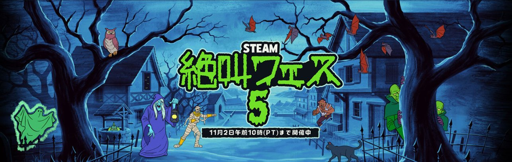
ウェーブ制FPS「DO NOT MISS」発表，プレイテスト実施中
https://
4gamer.net/s/G105322.2610
27020
…
・アリーナで次々と現れる敵を撃退していく
・1発撃ち外すたび，次のウェーブに敵が1体増える
・ウェーブの合間に，プレイスタイルに応じたアップグレードを選択する
GMO、ランサム被害にあった顧客に新しいPC提供へ 犯行グループは1人の顧客情報公開か
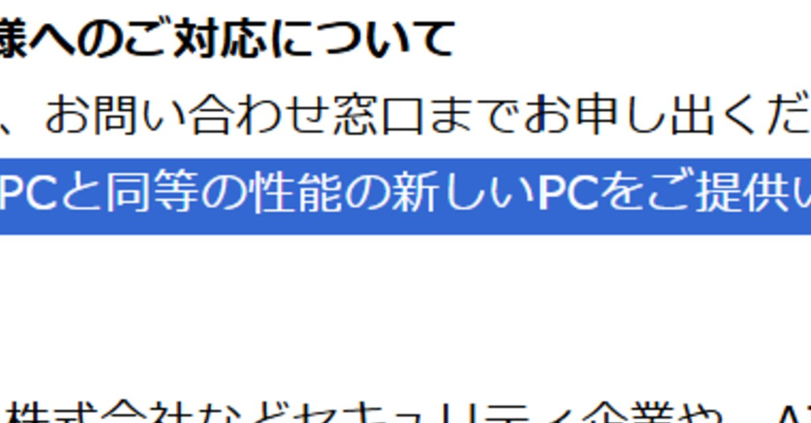
GMO、ランサム被害にあった顧客に新しいPC提供へ 犯行グループは1人の顧客情報公開か
そして、今日のお昼はくいだおれ…ではなく、ウェンディーズ!!!
梅田芝田町店にガルクラコラボをやっていたので入店
いつも通りフルコースで、ドリンクは智ちゃんを選びました。
特典のコースターは仁菜(ビジュアル)、リン(2枚目)、アイ(2枚目)、カードは智ちゃんでした。
#ガルクラ
#ダイダス


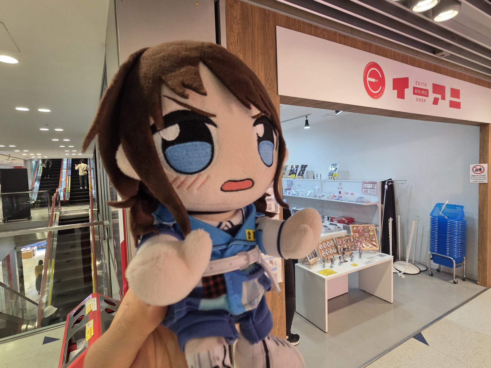
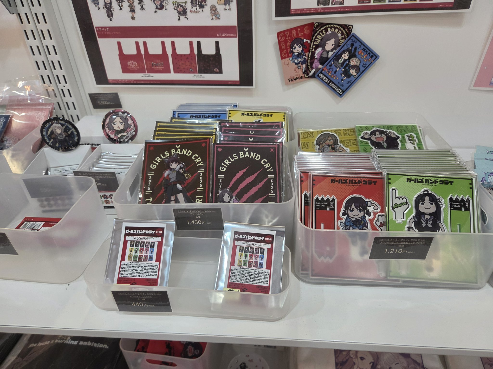
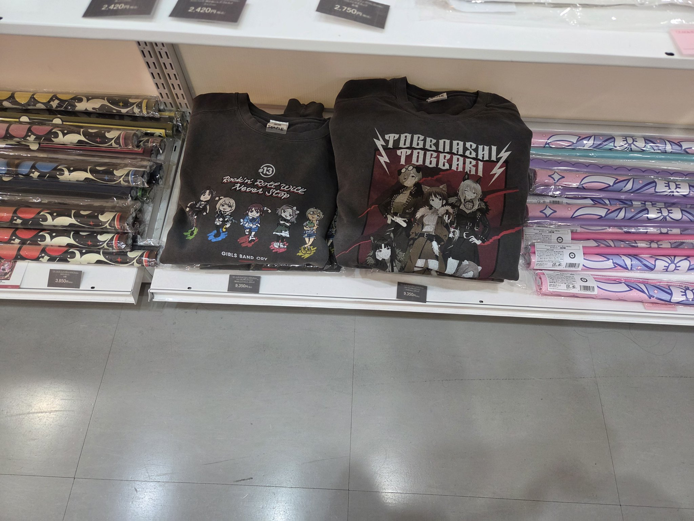
ユウマボウズ
@Gc5RLsVaaV12052
梅田に戻り、イーアニショップでぼざろ推し旅の新幹線乗車特典を回収
ガルクラグッズも少しだけ置かれていました。
#ぼっち・ざ・ろっく
#推し旅
#ガルクラ x.com/Gc5RLsVaaV1205…
早くアハ体験と称してINMU KINGのキャプチャ画像の一部がゆっくり変化していくクイズをお茶の間に流してほしい
イスラエル総選挙の投票始まる 与野党接戦見込み、連立難航の可能性
イスラエル総選挙の投票始まる 与野党接戦見込み、連立難航の可能性
え？？
INMU KINGは脳に良いんですよ〜
将棋王座戦最終局、豊川孝弘七段らが現地大盤解説会 配信中

ついに決着、将棋王座戦第5局 豊川孝弘七段の大盤解説会を現地から配信
有名配信者さん、スプラトゥーン配信で炎上中のアルス・アルマルさんに物申す→ネット民「これは正論」「この言葉、色んなVに刺さりそうだな」 #VTuber
有名配信者さん、スプラトゥーン配信で炎上中のアルス・アルマルさんに物申す→ネット民「これは正論」「この言葉、色んなVに刺さりそうだな」 - オレ的ゲーム速報@刃の記事ページ
jin115.com
「海で一生を過ごす両生類」初めて確認 2億3700万年前の化石
https://
nikkei.com/article/DGXZQO
UF266EK0W6A021C2000000/?n_cid=SNSTW005&n_tw=1793064280
…
両生類は皮膚から水分を吸収しますが、海水中では逆に体の水分が皮膚から流出してしまいます。今回の新種は全身が骨の装甲で覆われており、流出を防げたとみられます。
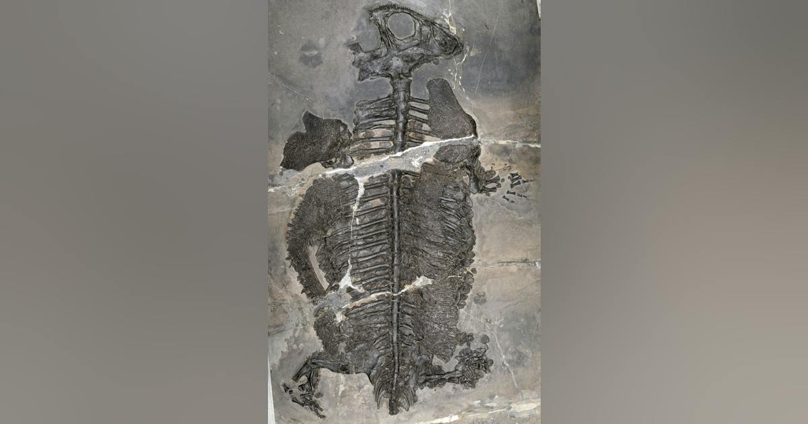
「海の両生類」確認 2億3700万年前の化石、全身に装甲
犯行予告時間が来てGMO事件の犯人が何したかと思えば一人のユーザの個人情報と写真の晒し上げ。え？そんなもん？被害者にはスマセンけどこの程度の攻撃だったら免許証付きで146万件一撃で流出させたタイムズパイセンには永遠に追いつけないが
輿水畏子さんがリポスト
【重要なお知らせ】
いつも『Pokémon UNITE（ポケモンユナイト）』を遊んでいただき、誠にありがとうございます。
この度、『ポケモンユナイト』は2027年3月23日（火）をもちまして、サービスを終了させていただくことになりました。
さらに表示 (元の投稿を開く)
『Pokémon UNITE』サービス終了のお知らせ | 『Pokémon UNITE』公式サイト
総集編イベント
MORE MORE JUMP！ Memories 開催中
総集編イベント開催を記念して、MORE MORE JUMP！のイベントストーリーの一部と、当時投稿された #セカイの4コマ をお届け
『青空の先、輝きを追いかけて』
#プロセカ #モモジャン
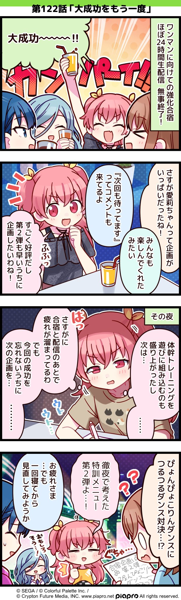
国家運営ストラテジー最新作「Realpolitiks 4: Back to the Roots」の開発が発表。160か国以上から国家を選び，自国の未来を切り開け
https://
4gamer.net/s/G105320.2610
27017
…
外交や軍事，経済政策を駆使して国際社会での影響力を拡大。2000年から始まる歴史を自らの決断で変えていく
わろた
「Desktop Mate」のDLCでホロライブの死神歌姫「森カリオペ」が10月29日発売。多彩なモーションと録り下ろしボイスを収録
https://
4gamer.net/s/G087007.2610
27016
…
Desktop Mateとしては初となるホロライブタレントのDLCが登場。今後の展開にも期待したい
“トーナメント表”を作っては消す落ち物パズル「Tournamentris」
https://
4gamer.net/s/G089959.2610
27015
…
「ブリッジ」と呼ばれるパーツでパネルをつなぎ，トーナメント表のように組んでいく。大きなトーナメントになるほど，消したときのメリットも大きい。
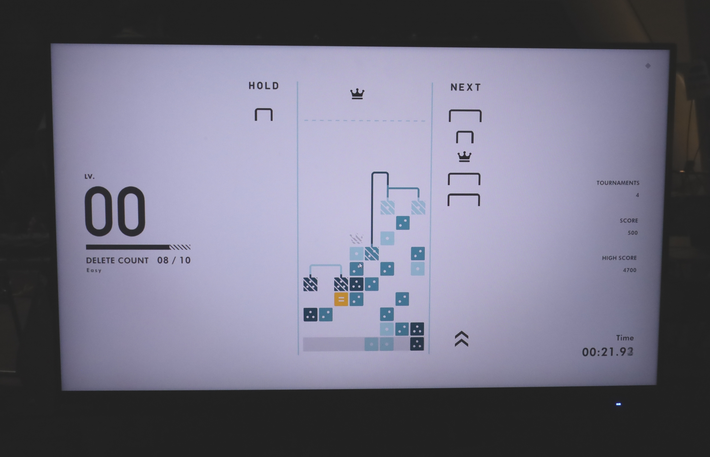
これはめちゃくちゃな偏見なんですが、髪をグレーに染めてる50代が信用できねぇ
【本体45%オフ】『7 Days to Die』探し物の手間が減りそう！バックパックとコンテナに検索バーが付く「V3.4.0」安定版配信―セールも開催中
https://
gamespark.jp/article/2026/1
0/27/174125.html?utm_source=twitter&utm_medium=social&utm_content=tweet
…
ゲーム本体は45%オフで2,695円に。
青バッジ年間6万円です
生保2帳
@seikatsuhogoacc
ガチ生活保護受給者から言わせてもらうと、
青バッジつけて
「生活保護でも贅沢できますw」
みたいなこと抜かしてる奴は全員大嘘で、
生活保護受給者ではありません。
青バッジつける余裕一切ないです。
ただでさえ今の生活保護費では最低限の生活すらできないのに、
タバコやら酒やら有り得ません。
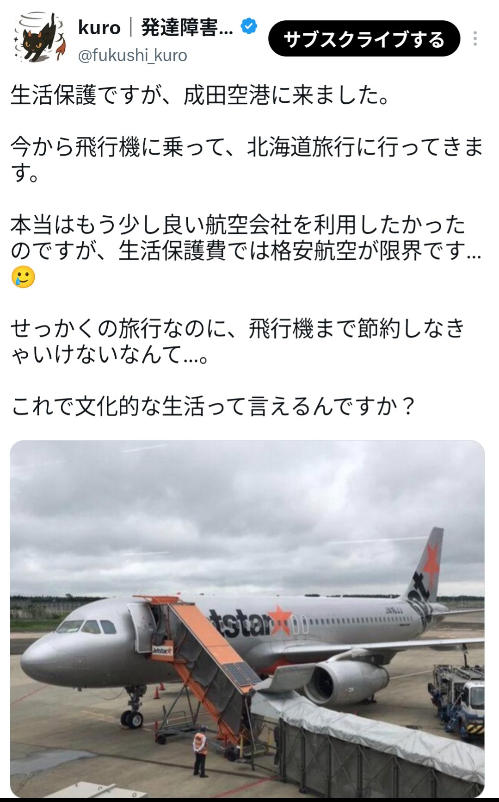
綺麗にしても汚いなぁ

その名前はすでに使用されています
@tekitou115330
完成しました。
【MV】イキスギ☆ハルシネーション
梅田に戻り、イーアニショップでぼざろ推し旅の新幹線乗車特典を回収
ガルクラグッズも少しだけ置かれていました。
#ぼっち・ざ・ろっく
#推し旅
#ガルクラ
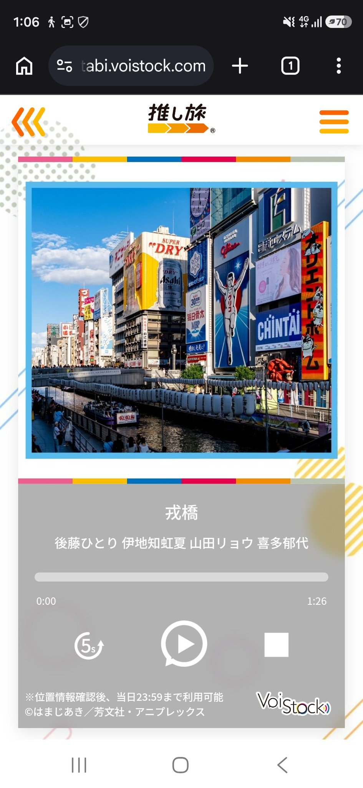
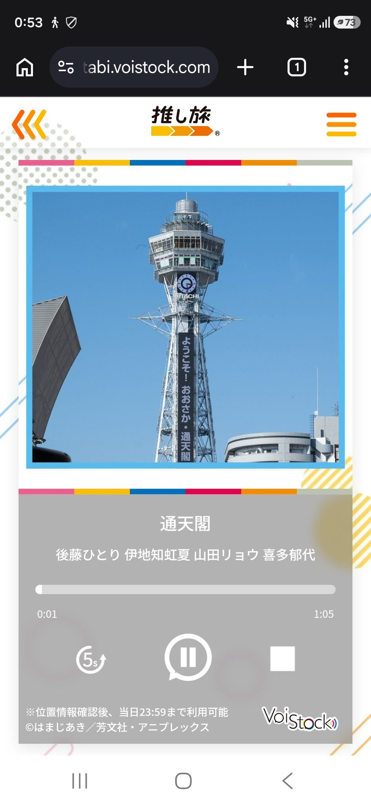
ユウマボウズ
@Gc5RLsVaaV12052
なんばで戎橋、動物園前で通天閣をそれぞれボイスラリーを回収しました。
戎橋でグリコの看板を撮ろうとしたら反対側に自転車の上に乗ったスパイダーマンがいて笑ってしまいました
通天閣周辺にはビリケンさんがたくさん見かけました。
#推し旅
#ぼっち・ざ・ろっく x.com/Gc5RLsVaaV1205…
ちばてつやさんが亡くなられたというニュース…。
あしたのジョーは何度も読ませていただき、あまりの尊敬からオマージュさせていただいておりました。
大変残念です。御冥福をお祈りします。
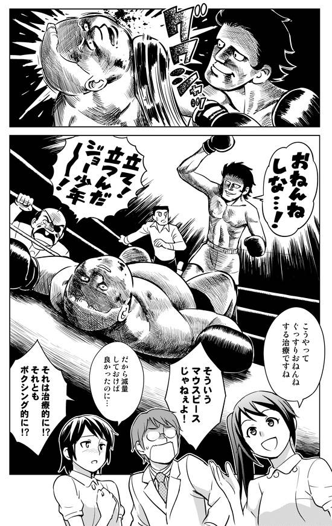
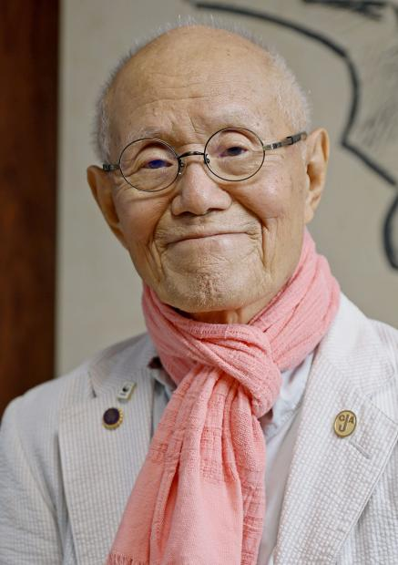
ライブドアニュース
@livedoornews
【訃報】「あしたのジョー」漫画家のちばてつやさん死去 87歳
https://
news.livedoor.com/article/detail
/32666250/
…
「あしたのジョー」「おれは鉄兵」などのヒット作で知られ、文化勲章を受章した漫画家、ちばてつやさんが死去したことがわかった。
デーモンコアだ。
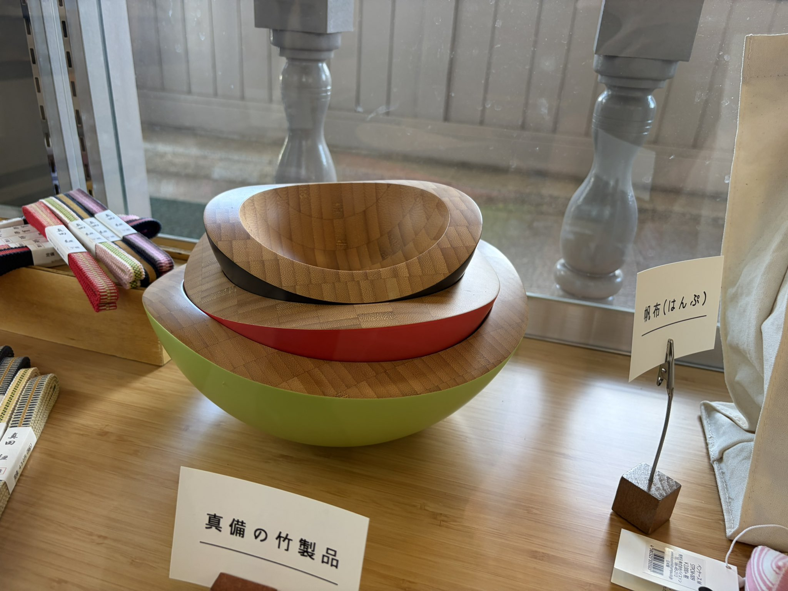
無限に続く図書館を進むローグライト「ELbab」，正式版をSteamでリリース。1階進むごとに敵が強くなる「エンドレスモード」を追加
https://
4gamer.net/s/G096939.2610
27013
…
戦闘はすべてオートバトルで進むため，プレイヤーは時間のほとんどをビルドの構築に使う
近年刑事ドラマぜんぜん見てないんだけど
昔は身代金誘拐の回がちらほらあった記憶がある
最近はランサムウェアも取り上げてるんだろうか
やっぱり「空飛ぶデロリアン」は胸アツ。まだ機体の色しか似てないけど
やっぱり「空飛ぶデロリアン」は胸アツ。まだ機体の色しか似てないけど | ギズモード・ジャパン
中国メディア、ドラマのVIVANT批判 拷問場面「敵意あおる」

中国メディア、ドラマのVIVANT批判 拷問場面「敵意あおる」
さっきまで晴れて暑かったのに、急にどんよりして雨もポツポツ降ってきた…。
お天気さん、今日の気分はどっちなんだい？
ユウマボウズ
@Gc5RLsVaaV12052
なんばで戎橋、動物園前で通天閣をそれぞれボイスラリーを回収しました。
戎橋でグリコの看板を撮ろうとしたら反対側に自転車の上に乗ったスパイダーマンがいて笑ってしまいました
通天閣周辺にはビリケンさんがたくさん見かけました。
#推し旅
#ぼっち・ざ・ろっく x.com/Gc5RLsVaaV1205…
まだまだ何も終わっていないし変わっていない
沖縄反社会勢力と学校法人同志社を完全に解体させよう
反社と私学は要らない
おるぐり
@allgreen76b
マジで風化狙いだったんだろなあ、コイツら…ご遺族はよく頑張ったよな
【速報】辺野古転覆事故で同志社理事長が初の記者会見へ 発生から半年以上経過、教育中立性の委員会も設置(京都新聞)
#Yahooニュース
https://
news.yahoo.co.jp/articles/5efc6
4fd2dba65d24b95ba0663ab0c1c1130ad09?source=sns&dv=sp&mid=other&date=20261026&ctg=loc&bt=tw_up
…
KDDIのフィジカルAI、NVIDIAの最新半導体実装 課題は情報漏洩対策
KDDIのフィジカルAI、NVIDIAの最新半導体実装 課題は情報漏洩対策
煙がほぼ出ない、油もはねない、コンパクト。おうち焼肉の救世主が過去最安 BuyPR
煙がほぼ出ない、油もはねない、コンパクト。おうち焼肉の救世主が過去最安 | ギズモード・ジャパン
免許証をスマホでパシャッ！の本人確認、銀行やPayPayがやめるワケ
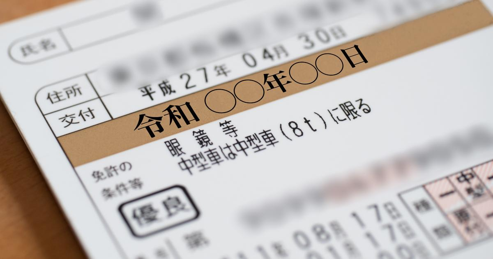
免許証をスマホでパシャッ！の本人確認、銀行やPayPayがやめるワケ | ギズモード・ジャパン
なんばで戎橋、動物園前で通天閣をそれぞれボイスラリーを回収しました。
戎橋でグリコの看板を撮ろうとしたら反対側に自転車の上に乗ったスパイダーマンがいて笑ってしまいました
通天閣周辺にはビリケンさんがたくさん見かけました。
#推し旅
#ぼっち・ざ・ろっく
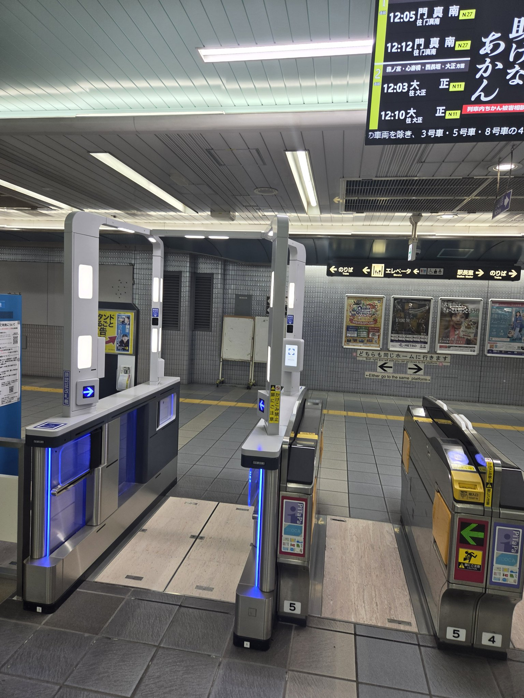
ユウマボウズ
@Gc5RLsVaaV12052
歩いて大阪ビジネスパーク駅から長堀鶴見緑地線で心斎橋へ
この路線は都営大江戸線と同じリニアモーターカー式で乗るのは初めてです。
改札口に認証式改札を見つけました。 x.com/Gc5RLsVaaV1205…
首領様！命令だけ下さい！！
Open Source Intel
@Osint613
開豊地域の映像には、北朝鮮軍兵士が122mm自走榴弾砲を配置し、砲身を南に向けている様子が映っている。この砲兵は韓国との国境に近い位置へ移動されている。
レゾナック、米キャピタルが筆頭株主に 15%超保有
レゾナック、米キャピタルが筆頭株主に 15%超保有
笑える一人称視点のステルスゲーム「先生、彼女がマジで怒ってる！」，Steamで配信開始
https://
4gamer.net/s/G105315.2610
27012
…
・先生に見つからないように彼女にメッセージを返信しよう
・足音や授業中の声を頼りに先生の位置を確かめる
・先生が離れている隙に下を向き，文字を入力しよう
SF小説「三体」を原作とするADV「三体 審判前夜」，Steamストアページを公開。プレイヤーの選択が物語を左右する
https://
4gamer.net/s/G105316.2610
27009
…
元特殊部隊員であるチェン・アンジウとなり，謎めいたクルーズ船に潜入する。原作は世界累計発行部数が3000万部を超える人気作だ
ムスリムフランス民、日本人を挑発「日本に行くからハラールのおすすめスポット教えてよｗ」→結果 #ちょっといい話

ムスリムフランス民、日本人を挑発「日本に行くからハラールのおすすめスポット教えてよｗ」→結果 - オレ的ゲーム速報@刃の記事ページ
jin115.com
ただ自分が100%の確信を持てないが故にそうなっているところもあるからもっと経験積んで対応できるようにしないといけないな
【吉田輝和の絵日記】娘の結婚相手はお父さんが審査します！親バカおじさんの育成記『プリンセスメーカー：予言の子供たち』
https://
gamespark.jp/article/2026/1
0/27/174124.html?utm_source=twitter&utm_medium=social&utm_content=tweet
…
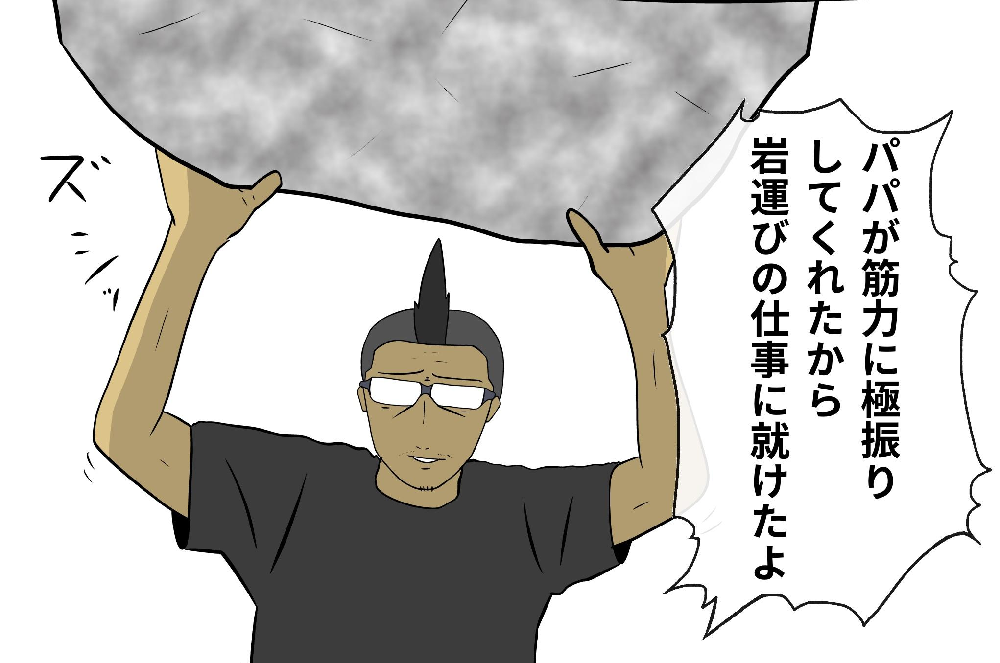
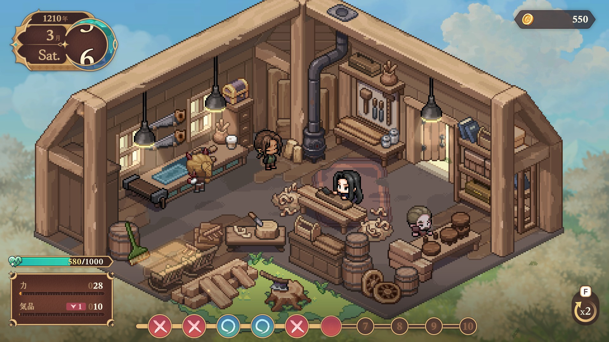
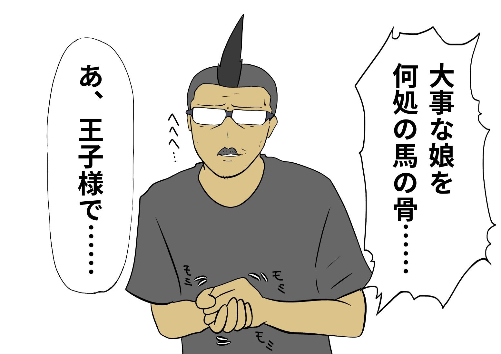
独身のオタクなんて生命保険もいらないし賃貸だし年末控除なんて5秒で終わらせなよ。
オイル貯蔵施設の支配を目論む新ボス「タンクマン」公開。「ロックマン：デュアル オーバーライド」最新情報
https://
4gamer.net/s/G096894.2610
27011
…
・「トゥインクルガール」「ジェットマン」に続く3体目のボス
・滑る床やガス充満エリアがステージ攻略のポイント
AIに聞いて内容分からずに口挟む人がいるせいでガチで仕事が滞る
ググるのと違ってそれっぽいことだけは容易に言えてしまうのが深刻
國體としての四季があり、代行者達＝天皇がこの国を愛していないというのが根底にあるまま解消されずにアニメが完結した、春夏秋冬代行者ってかなり変な作品だったなと思う。
バカゲーやネタゲーの領域を通り越して，予想をはるかに超える悪ふざけに震える。「昭和米国物語」は，ぶっ飛びすぎて笑いが止まらない［プレイレポ］
https://
4gamer.net/s/G061307.2610
27001
…
ボス戦でヨドバシの店内BGMが国歌風に流れたり，巨大なドリルが股間に炸裂したり。秀逸なギャグが続出しておもろい
「群○県」の見覚えある峠道で異変探しドライブ。ホラーゲーム『異変車道』11月6日発売決定―宙を舞うおじさんや“大天変地異”まで61種類の異変を収録
https://
gamespark.jp/article/2026/1
0/27/174123.html?utm_source=twitter&utm_medium=social&utm_content=tweet
…
危険な存在に遭遇したら逃げるのみ。対向車に乗るおじさんが“変身”を遂げることも。なんとかとうふ店っぽい車もKVに登場
「楽園追放」公式さんがリポスト
#楽園追放 心のレゾナンス
11月13日㊎劇場公開
広島県でも上映予定バラ！
https://
toei-screeninginfo.azurewebsites.net/theaterlist/02
992
…
アニメイトでもムビチケ好評販売中！
https://
animate-ticket.com/events/74?utm_
source=x_other&utm_medium=social&utm_campaign=x_other_74
…
この秋ぜひ劇場へ！
Shokz購入メモ)
現状OpenMeet2はAmazonにはない。
OpenComm2もあるけどほぼ定価だから購入はYahooとか楽天がオススメ。
UCがつくのはUSBアダプタ付きで、OpenMeet2とOpenComm2で同じ。2つともUCを買う必要なくて片方だけで良い。
OpenComm2届いた。が、OpenMeet2と装着感に値段以上の差を感じる。こっちは移動中に使おう。
そしてOpenMeet2が早くも俺の中で今年 #買ってよかった2026 受賞決定
さらに表示 (元の投稿を開く)
ゆーじ
@yuujii
Shokz OpenComm2 2025 Upgrade ポチった
https://
link.amazon/B0ijSiTSx
初代G-SHOCKのDNAをアナログで再解釈。“あの八角形”に洗練された文字盤が融合
初代G-SHOCKのDNAをアナログで再解釈。“あの八角形”に洗練された文字盤が融合 | ギズモード・ジャパン
【噂まとめ】MacBook Proがついにタッチ対応？ 発売日・価格・スペックのすべて（2026年秋）
【噂まとめ】MacBook Proがついにタッチ対応？ 発売日・価格・スペックのすべて（2026年秋） | ギズモード・ジャパン
熟練の技をロボットが受け継ぐ。その第一歩はある「手袋」をはめること
熟練の技をロボットが受け継ぐ。その第一歩はある「手袋」をはめること | ギズモード・ジャパン
折りたたみスマホを2度壊したわたしが断言「折りたたみスマホは保険マスト」
折りたたみスマホを2度壊したわたしが断言「折りたたみスマホは保険マスト」 | ギズモード・ジャパン
靴下の上から履くだけで、冷えない＆ムレない。ワークマンは正義だ
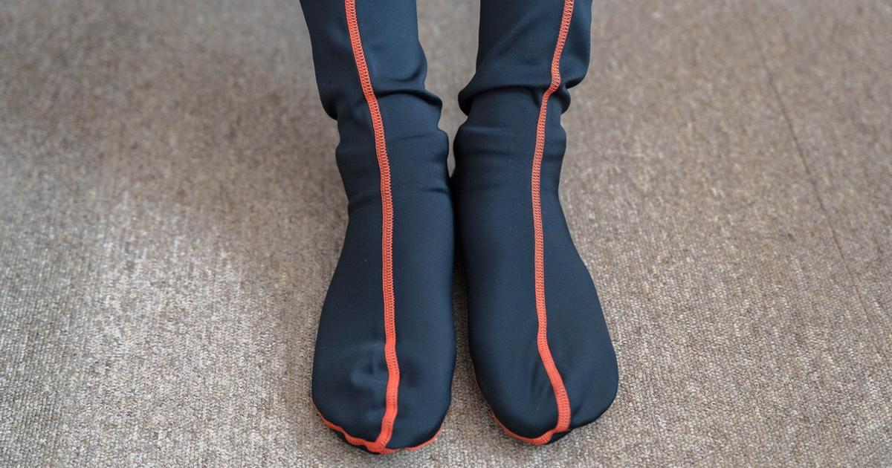
靴下の上から履くだけで、冷えない＆ムレない。ワークマンは正義だ | ギズモード・ジャパン
その作品を面白いっていうのやめてくれませんか、わたしのつまらないが否定された気になります→何故か許されない
その作品をつまらないっていうのやめてくれませんか、わたしの面白いが否定された気になります→何故か許されている
急成長アンソロピックを語る10の数字 従業員1人あたり売上高10億円
急成長アンソロピックを語る10の数字 従業員1人あたり売上高10億円
スマートグラス「Even G2」にべっ甲柄の新色「Brown 2」が登場。1台ごとに微妙に模様が異なる
https://
4gamer.net/s/G999902.2610
27008
…
レンズにかぶせる偏光サングラスクリップや，メガネチェーンといったオプションも同時に登場した
なるせひろのりさんがリポスト
iOSのアップデートに必要な空き容量が大き過ぎてその都度Kindleやミュージックのファイルを空にしないといけないし、今回は大きすぎるからFGOとかも削除しないと無理っぽいかも。
申し訳ないけどふふってなっちゃった
お、UNIXシーライフの大切さについて改めて考える時間かな？
平谷村、釣りとスキーで行くけど、なかったら行かないですものね…
長野県最少人口の平谷村、釣り世界大会の準備に奔走 世界発信の好機
エンドスさんがリポスト
つくづく思うのですが、私たちは、戦争を避けるために努力する政治家を、もっと大切にするべきではないでしょうか。
他国を敵視し、軍備増強を唱え、勇ましい言葉を並べる政治家が「強いリーダー」と評価される。
さらに表示 (元の投稿を開く)
Jeffrey J. Hall
@mrjeffu
彼の死の2ヶ月前のインタビューで、福田元首相は、第二次世界大戦で男たちが死ぬために送り出されたという幼少期の記憶を振り返りました。
彼は、日本の歴史を思い出すことの重要性と、さらなる戦争を避けることを目指した外交を追求することの重要性を強調しました。 x.com/mrjeffu/status…
レトロかわいい「折り紙自販機」
雑貨店のレトロな自販機→10円玉を入れると、なんと折り紙が登場 「良いなぁコレ」「これ増えたらいいな」
https://
nlab.itmedia.co.jp/cont/articles/
4062803/
…
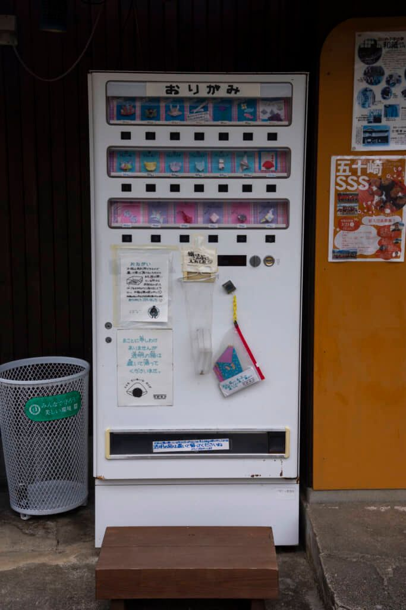
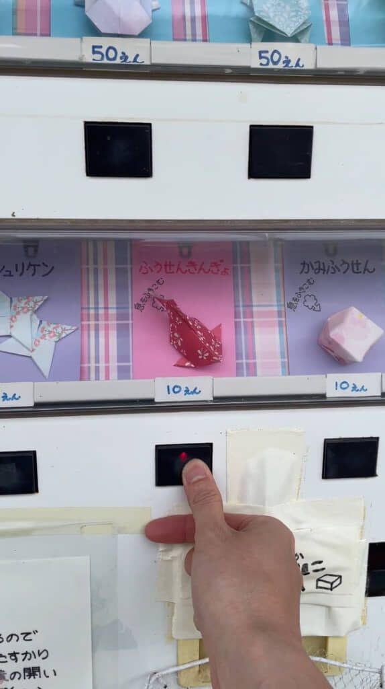
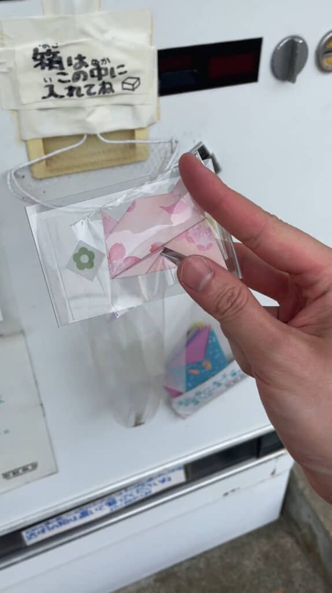
いつか愛犬がいなくなっても、一緒に過ごした日々はゲームの中に残る―リアルわんこペットシム『ゴールデンレトリバーと過ごす日々』開発者が語る、家族とピチューの物語【インタビュー】
https://
gamespark.jp/article/2026/1
0/27/174122.html?utm_source=twitter&utm_medium=social&utm_content=tweet
…
「ピチューを嫌いになるのは、ほとんど不可能」
さらに表示 (元の投稿を開く)
マイネームイズさんがリポスト
総集編イベント
MORE MORE JUMP！ Memories 開催中
総集編イベント開催を記念して、MORE MORE JUMP！のイベントストーリーの一部と、当時投稿された #セカイの4コマ をお届け
『つなぐPainful Hope』
#プロセカ #モモジャン
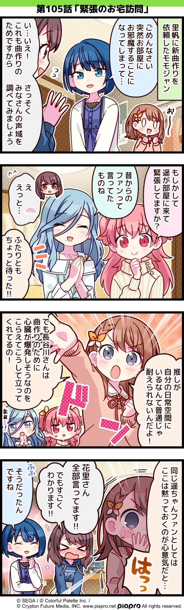
昼メッシはこちら
京都市右京区・麺屋さん田
坦々まぜそば
【訃報】漫画家・ちばてつやさん死去 「あしたのジョー」など #漫画・アニメ等
【訃報】漫画家・ちばてつやさん死去 「あしたのジョー」など - オレ的ゲーム速報@刃の記事ページ
jin115.com
（午前中集中して作業していたら、なんか大変な状況になっているようですね）
ハドオフ
もう田舎のバドオフしか残ってなさそう
横浜に商業施設大杉なのでどこに出店なのか見当つけられね〜笑。博多うどん柔らかくて好きなので食べてみたいな。
なるせひろのりさんがリポスト
『ガンダムSEED FREEDOM ZERO』新規MS登場にネット衝撃「カッコ良すぎる」（写真 全25枚）
『ガンダムSEED FREEDOM ZERO』新規MS登場にネット衝撃「カッコ良すぎる」
政府、サイバー攻撃の「緊急対策パッケージ」来週中に策定へ 高市首相がサイバー閣僚会議の初会合で指示
政府、サイバー攻撃の「緊急対策パッケージ」来週中に策定へ 高市首相がサイバー閣僚会議の初会合で指示
漫画家・ちばてつやさん死去、87歳 「あしたのジョー」
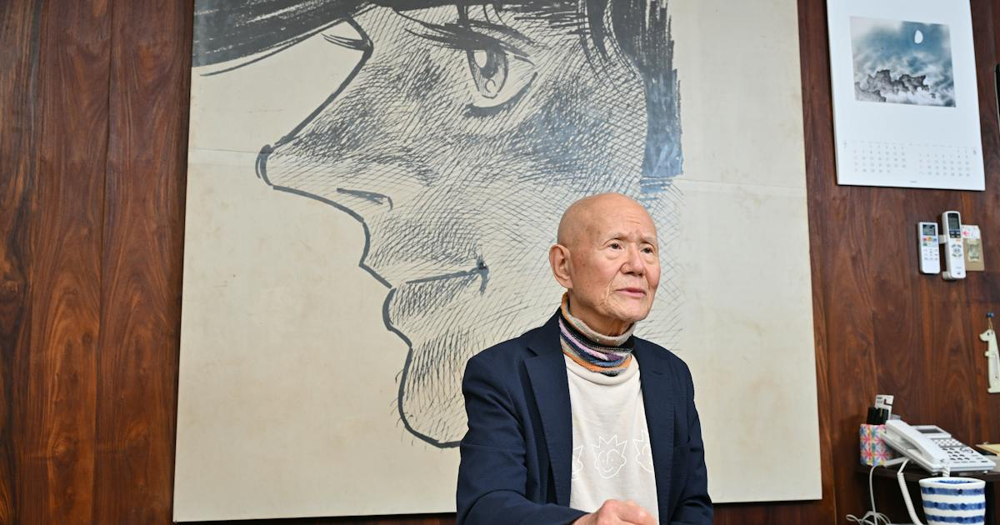
漫画家・ちばてつやさん死去、87歳 「あしたのジョー」
エンドスさんがリポスト
漫画家ちばてつやさんが死去、87歳 代表作「あしたのジョー」など
漫画家ちばてつやさんが死去、87歳 代表作「あしたのジョー」など：朝日新聞
強くなりたくば吊るせッッ
「これは欲しいぞ」 新しい刃牙グッズの「地上最強のハンガー」が圧巻 たくましい見た目に「うちにもいます」
https://
nlab.itmedia.co.jp/cont/articles/
4060853/
…
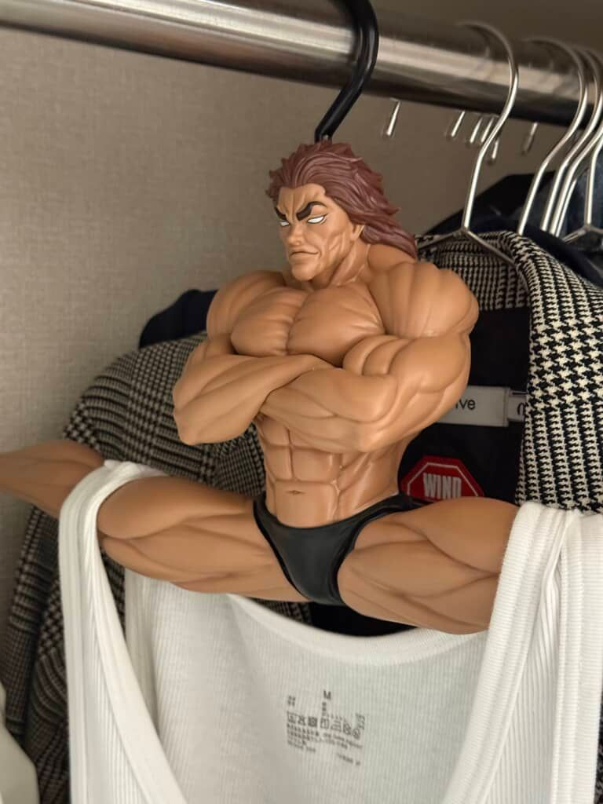
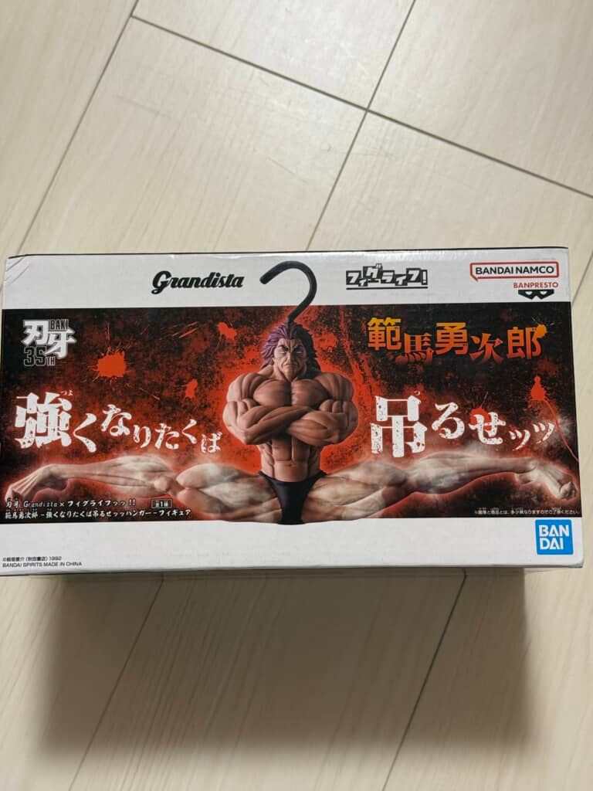
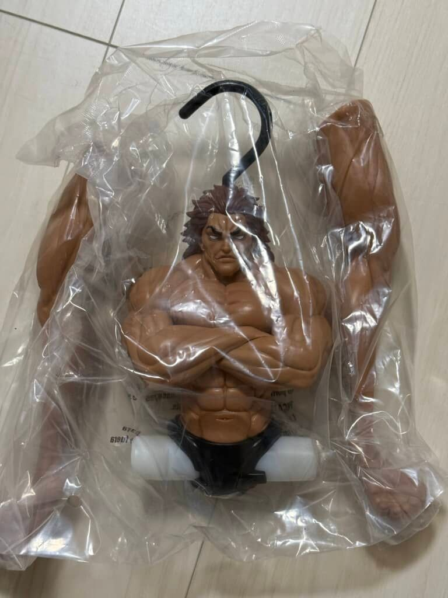
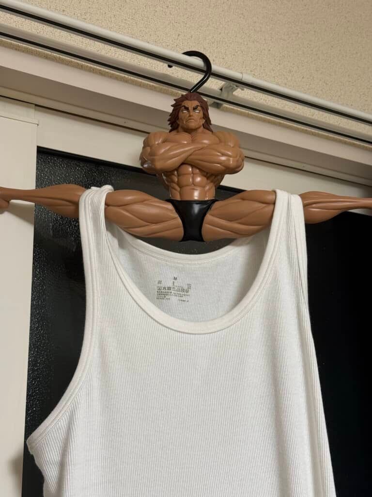
『Fallout: New Vegas』を現代PCでもっと快適に！古いゲームエンジンを丸ごと作り直す「NVForever」開発中
『Fallout: New Vegas』を現代PCでもっと快適に！古いゲームエンジンを丸ごと作り直す「NVForever」開発中 | Game*Spark - 国内・海外ゲーム情報サイト
「楽園追放」公式さんがリポスト
11月1日開催｜#楽園追放 心のレゾナンス
TOKYO ANIME NEXT プレミア上映会
チケット一般発売中
https://
eplus.jp/sf/detail/4609
060001-P0030002
…
https://
tokyoanimenext.jp
最新作がいち早く観れる！
上映後にはスタッフトークイベントも！ぜひご参加下さい。
11月1日㊐15:40-
池袋HUMAXシネマズ

りそなグループで顧客情報漏洩か 委託先への不正アクセスで
りそなグループで顧客情報漏洩か 委託先への不正アクセスで
エンドスさんがリポスト
戦後漫画史の金字塔として知られる「あしたのジョー」など数々のヒット作を手がけ、日本漫画家協会の会長も務めた漫画家のちばてつやさんが、10月22日、亡くなりました。87歳でした。
https://
news.web.nhk/newsweb/na/nd-
20261027de66136
…
#nhk_video
なるせひろのりさんがリポスト
『一番くじONLINE』配送情報漏洩の可能性で出荷停止へ
https://
dengekionline.com/article/202610
/92169
…
バンダイ系物流への不正アクセスで氏名や住所に流出の恐れが判明。
クレカは対象外ですが不審な電話や郵便物には十分にご注意ください。
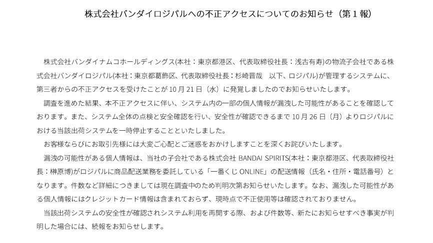
【一番くじONLINE】配送情報が漏洩した可能性。バンダイ系物流への不正アクセスで出荷停止へ
「今年一番面白かったインディーゲーム」は？投票企画により決勝進出10作品が決定―予選1位は『DRAPLINE』で2位は『ゆんゆん電波シンドローム』
https://
gamespark.jp/article/2026/1
0/27/174120.html
…
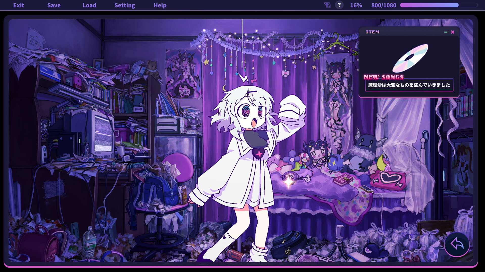
歩いて大阪ビジネスパーク駅から長堀鶴見緑地線で心斎橋へ
この路線は都営大江戸線と同じリニアモーターカー式で乗るのは初めてです。
改札口に認証式改札を見つけました。
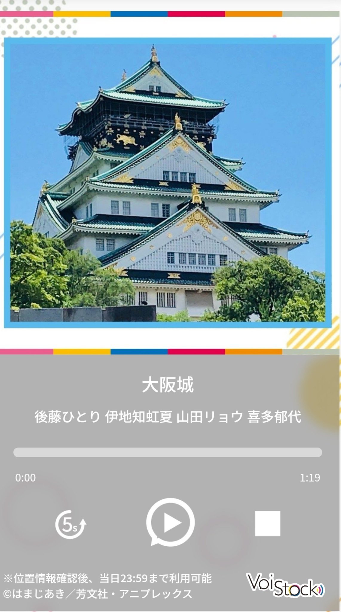
ユウマボウズ
@Gc5RLsVaaV12052
大阪駅からバスで大阪城へ
実はまだ足を踏み入れたことが無かったので、天守閣の迫力に圧倒されました！
公園内も広くのんびりお散歩が出来ました。
しばらくするとライブでよく聞く大阪城ホールが見えてきました。
いつかライブがあったら行ってみたいです。
#推し旅
#ぼっち・ざ・ろっく x.com/Gc5RLsVaaV1205…
「脱毛サロンシミュレーター」，正式版の発売日が11月10日に決定。火炎放射器やブラックホールなどの施術道具も登場
https://
4gamer.net/s/G097898.2610
27004
…
当初は早期アクセス版としてリリースする予定だったが，開発が順調に進んだため正式版として発売されることになった
ポン☆潤々さんがリポスト
10/30(金)公開【極上音響上映02】『映画 聲の形』【Dolby Atmos】
https://
res.cinemacity.co.jp/TicketReserver
/studio/movie/909
…
『映画 けいおん！』『たまこラブストーリー』の山田尚子監督がベストセラー漫画をアニメ映画化した傑作が公開10周年を記念して劇場に復活！
もちろん【極音Atmos】で磨き上げた音響で上映。
さらに表示 (元の投稿を開く)
渡辺浩弐さんがリポスト
渡辺浩弐「AI家族」
AIによって歪な方向に進んだ社会が描かれているホラー短編集
人の繋がりを拡張したようで、その実、上澄みを掬っただけの無機質な世界
人の絆をAIで代替できるという独りよがりな価値観と、それを善意として受け入れる社会に恐怖を感じた
#読書
#読了
#けんけんの本の帯 60冊目
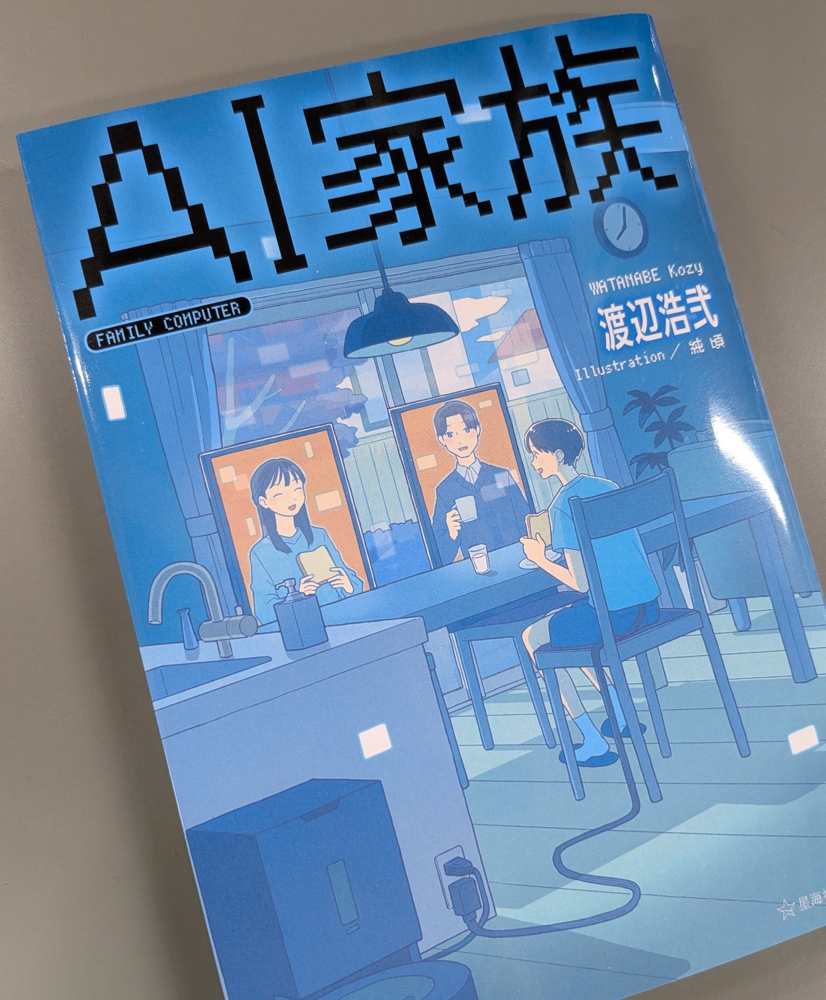
メアドを検索→AIで“その人専用フィッシングメール”を生成する手法、クリック率が約2.7倍に 7000人以上で実験
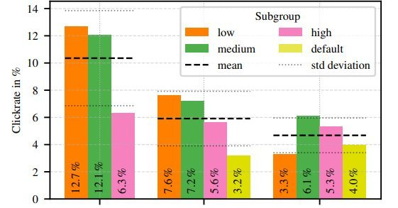
メアドを検索→AIで“その人専用フィッシングメール”を生成する手法、クリック率が約2.7倍に 7000人以上で実験
「若手はAI使うな」は“老害”なのか？ 新人教育で「AI禁止」した企業の1年後
「若手はAI使うな」は“老害”なのか？ 新人教育で「AI禁止」した企業の1年後
Switch2向け「007 ファースト・ライト」，パッケージ版の発売日が2027年3月18日に決定
https://
4gamer.net/s/G089783.2610
27006
…
・早期購入特典だった「007 ファースト・ライト デラックスエディション」への無料アップグレードを購入特典に変更
・新たな早期購入特典として「ゴールデンアイスーツスキン」を追加
大阪駅からバスで大阪城へ
実はまだ足を踏み入れたことが無かったので、天守閣の迫力に圧倒されました！
公園内も広くのんびりお散歩が出来ました。
しばらくするとライブでよく聞く大阪城ホールが見えてきました。
いつかライブがあったら行ってみたいです。
#推し旅
#ぼっち・ざ・ろっく
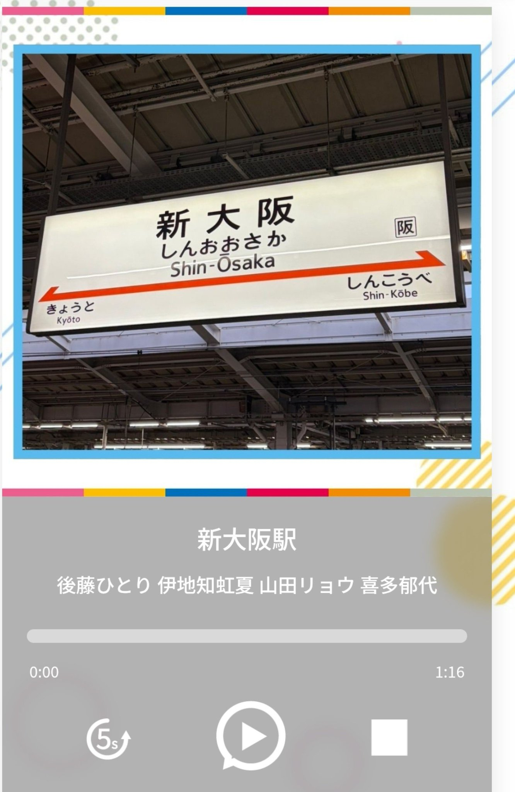
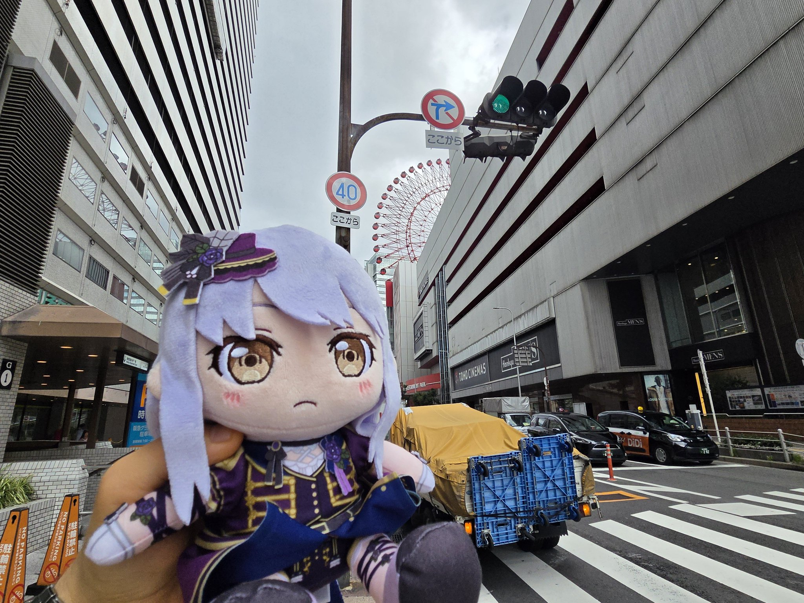
ユウマボウズ
@Gc5RLsVaaV12052
新大阪駅に到着して、地下鉄で梅田へ
観覧車をバックに記念撮影
ボイスラリーを順調に集めるもある違和感が…
どうやら、順番どおりではないらしい…
#推し旅
#ぼっち・ざ・ろっく x.com/Gc5RLsVaaV1205…
ポン☆潤々さんがリポスト
待望の日本語公式ガイドが登場
⠀
書籍「スター・ウォーズ／マンダロリアン公式ビジュアルガイド」
⠀
ドラマ『#マンダロリアン』
全3シーズンの内容を完全網羅
⠀
ルーカスフィルムとの密接な協力のもと制作された、ここでしか見られない情報と独占画像が満載
⠀
▼詳細
https://
ac.ebis.ne.jp/tr_set.php?arg
ument=iQPUPJaw&ai=a6acf303ad5260
…
さらに表示 (元の投稿を開く)
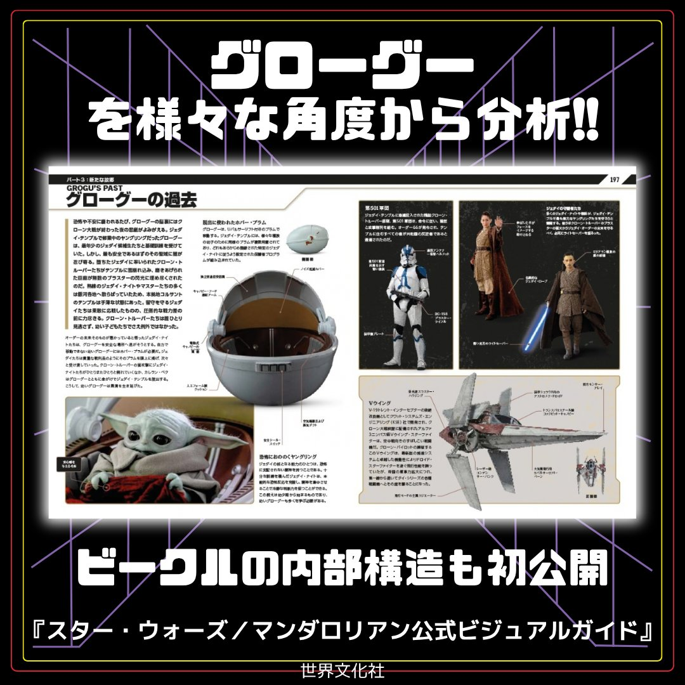
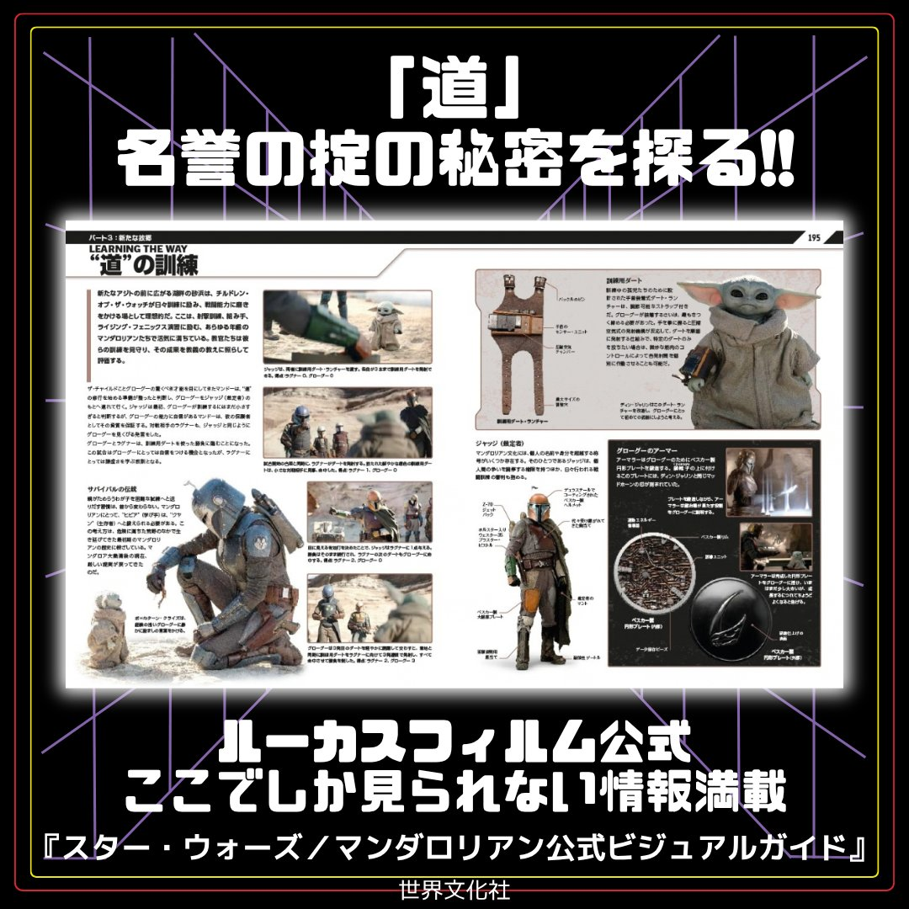
アニメ「プリキュア」、ヴィラン側が主役の「デュアルシャドウ ～Precure Villain Heroines～」放送決定！！ #漫画・アニメ等
アニメ「プリキュア」、ヴィラン側が主役の「デュアルシャドウ 〜Precure Villain Heroines〜」放送決定！！ - オレ的ゲーム速報@刃の記事ページ
jin115.com
【まもなく終了】
ピックアッププラチナガチャは10月30日10:59まで！
▼新登場スタイル
・SS<レゾナンス>[禁忌のシンセサイズ] 石井色葉（CV #桑原由気）
・SS<レゾナンス>[戦慄のナースコール] 佐月マリ（CV #宮本侑芽）
新登場スタイル初回獲得時、限界突破Lv.1で獲得可能！
#ヘブバン
クトゥルフ神話を題材にしたサバイバルホラー「Stygian: Outer Gods」がPC向けに正式リリース
https://
4gamer.net/s/G078888.2610
27007
…
新チャプターやパズル，武器，アーティファクト，敵，ボス戦などを追加。Unreal Engine 5を活用した最適化でパフォーマンスも改善
ポン☆潤々さんがリポスト
いよいよ本日より、
近鉄 近鉄奈良駅 にて
葛之葉雨彦さんのお誕生日祝い応援広告が掲出されます！
詳細は添付画像にてご確認くださいませ。
｜近鉄 近鉄奈良駅
｜10/27(火)-11/2(月)
#SideM応援広告
#アイマス応援広告
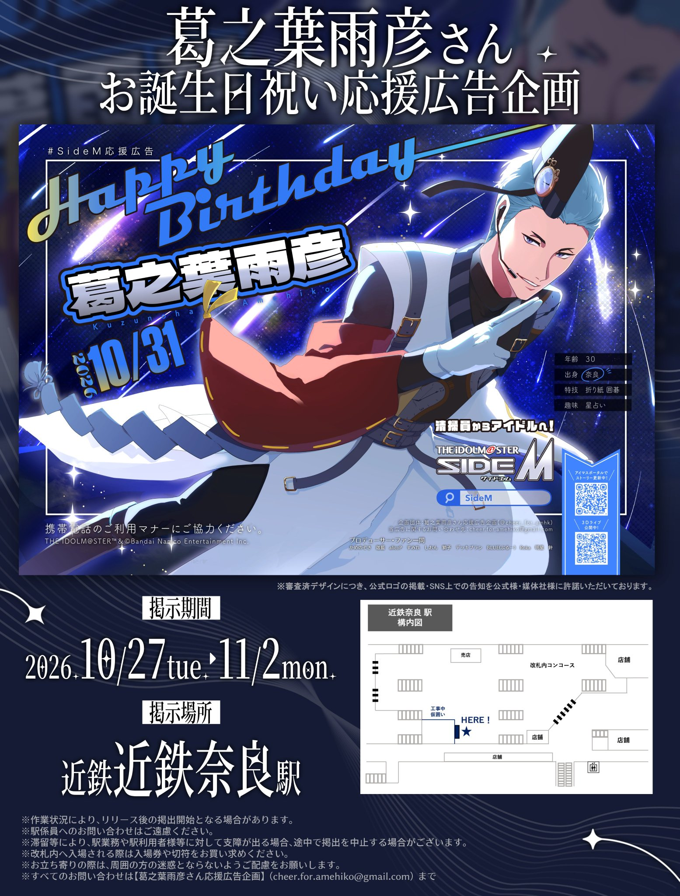
短すぎるカラオケはなぜ生まれた？
「ジャ～パネット♪」が、たった9秒のカラオケに どこを歌うか、社内でも悩みました
https://
nlab.itmedia.co.jp/cont/articles/
4065839/
…
災害時の備えですが、私は個人で、できるだけ備えます。
その上で、家がベッコリ潰れたり、それ以上、例えば地域全体が住めなくなるような大災害が起きたら、そんときは助けてください。
武田薬品、ナルコレプシー治療薬「オーゼイフル」発売 「不可能」を覆す
https://
nikkei.com/article/DGXZQO
UC207DH0Q6A021C2000000/?n_cid=SNSTW005&n_tw=1793060371
…
ナルコレプシーは日中に強い眠気を感じて突然眠ってしまう病気です。開発の一部中止も乗り越え、15年かけて世界初の実用化にこぎ着けました。
武田薬品のナルコレプシー治療薬「オーゼイフル」発売 苦節15年、「創薬不可能」覆す
サイバー対策で無料相談 経済産業省が全国に窓口設置
サイバー対策で無料相談 経済産業省が全国に窓口設置
日経平均株価、午前1191円高 「アンソロピックIPO」でAIラリー再点火
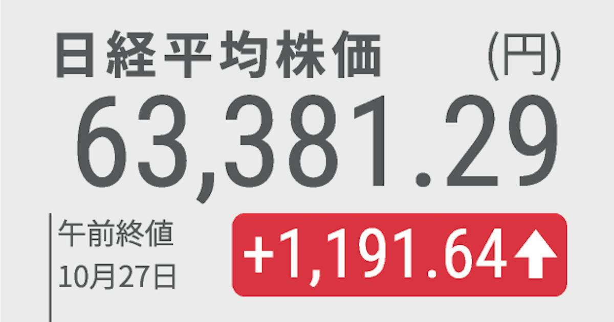
日経平均株価、午前1191円高 「アンソロピックIPO」でAIラリー再点火
なるせひろのりさんがリポスト
【仮面ライダー龍騎】ゾルダ／北岡秀一役・小田井涼平、変身ポーズをひさびさに披露
https://
famitsu.com/article/202610
/92135
…
旅番組『今泊まりたい！いいふろ温泉宿』にOREジャーナル編集長役・津田寛治と『ルパパト』パトレン3号役・奥山かずさがゲスト出演。特撮ファン胸アツトーク満載。
かわいいおもちゃを動かして戦う。「ひとりあそび」，ドリコムがパブリッシングを発表。5×6マスの盤面で戦略バトル
https://
4gamer.net/s/G097959.2610
27005
…
・ローグライク×3Dボードゲーム
・絵本マップでおもちゃを集めデッキ構築
・おはじきで配置・操作
・リナち（CV：相良茉優）とポコ（CV：保住有哉）が登場
『ストV』、“PHP”のセキュリティ強化で一時販売停止へ…オンライン関連機能も使用不可に―現在臨時メンテナンス中
https://
gamespark.jp/article/2026/1
0/27/174119.html?utm_source=twitter&utm_medium=social&utm_content=tweet
…
『スト6』ではなく、古い『ストV』で。
渡辺浩弐さんがリポスト
土曜の夜、秋葉原で怪談はいかがですか？
11/14（土）17:30開場／18:00開演
宮代あきらプレゼンツ
『秋葉原怪談』
おおぐろてん、Dr.マキダシ、毛利嵩志、渡辺浩弐
（50音順）
4人が横並びで、150分たっぷり語ります。
ご来場お待ちしています！
https://
livepocket.jp/e/vv49f
【10/29(木) 『ゲーセン少女と異文化交流』コラボイベント開始！】
10/29(木)より、「ふたりのスタートボタン」「Amusing Flavor」が登場！
イベントでは「ゲーセン少女と異文化交流」のキャラクターやネームプレート、ステージ背景がゲットできます！
https://
info-chunithm.sega.jp/13037/
ポン☆潤々さんがリポスト
応援広告提出のお知らせ
10/31は、315プロダクション所属
Legendersのリーダー葛之葉雨彦さんのお誕生日です。
この度、出身地である奈良でお祝いの応援広告を提出します。
提出期間:10/27(火)〜11/2(月)
提出場所:近鉄電車 近鉄奈良駅構内
詳細は画像、ツリーをご覧下さい。
さらに表示 (元の投稿を開く)
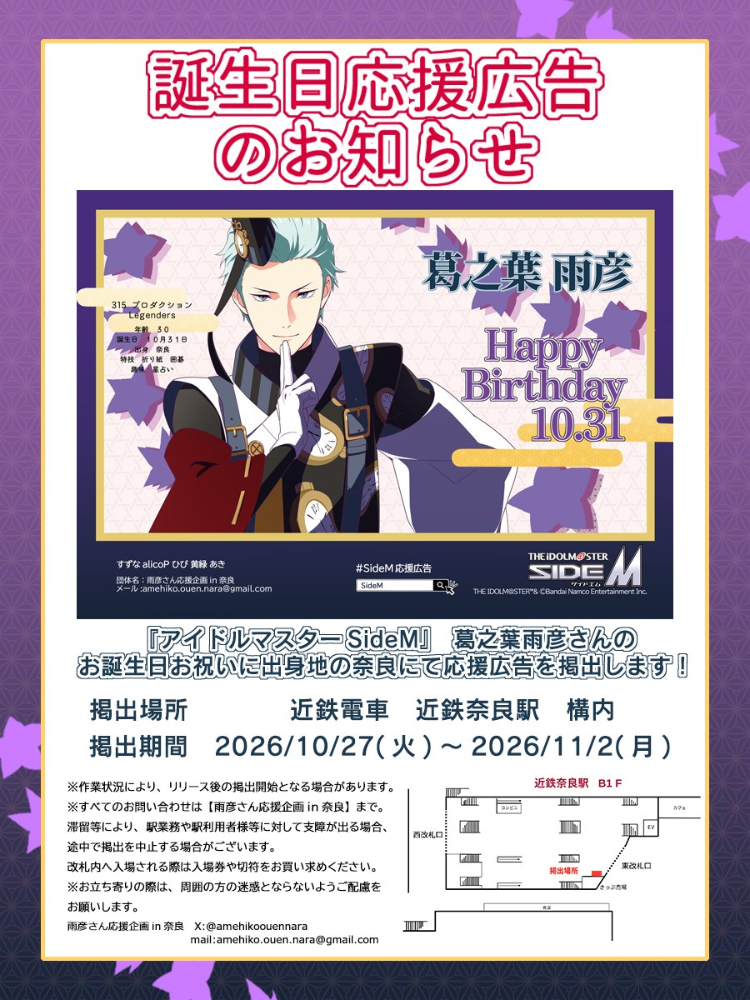
「プロジェクトセカイ」の日常を描いた
4コママンガを公開
第385話「調理道具使いはお手の物」
#プロセカ #セカイの4コマ #望月穂波誕生祭2026
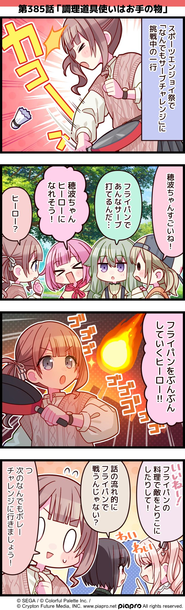
ついに、LANケーブル抜け宣言いただきました
熊谷正寿【GMO】
@m_kumagai
【重要】「お名前.com デスクトップクラウド」への不正アクセスに関する現在の対応について（第8報）
（ 【続報】お客様をお守りするために現在私たちが行っていること）
（【緊急】本日12時の攻撃に備え、お客様に新規のお願い_ネットワーク切断、電源断）
https://
group.gmo/info/alert/202
61027/
…
倉敷に来たらまず相場板チェック。
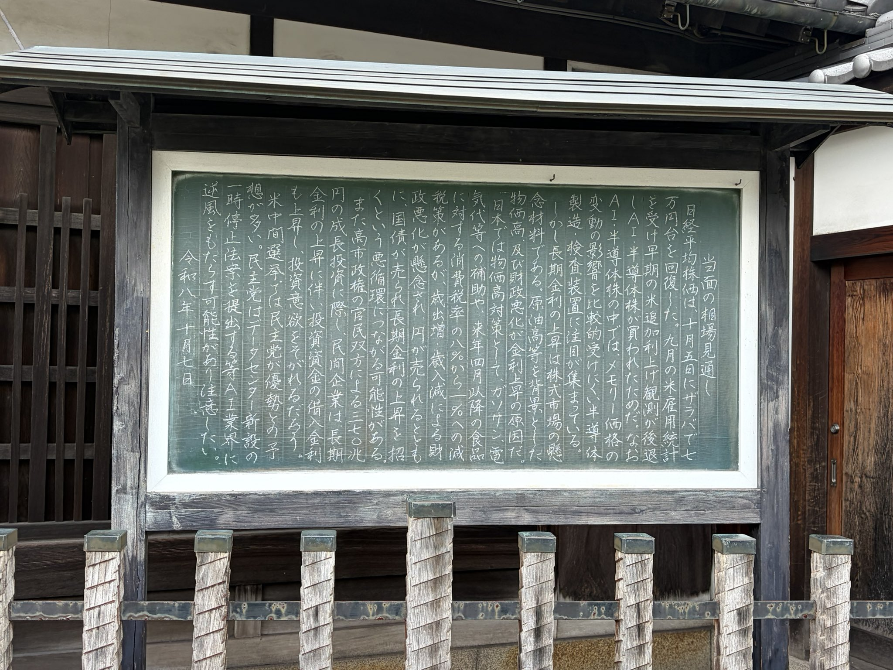
なるせひろのりさんがリポスト
【速報】漫画家のちばてつやさん死去

【速報】漫画家のちばてつやさん死去
「自分の個人情報が漏えいした……どうすれば？」 IPAが対処法公開
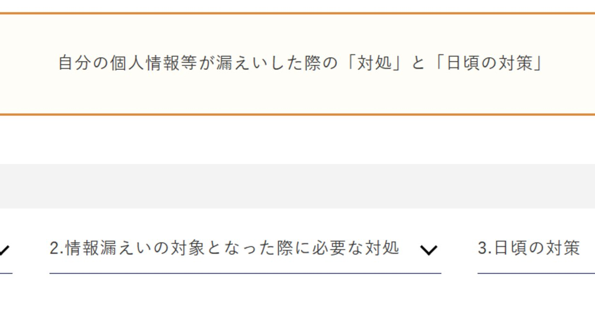
「自分の個人情報が漏えいした……どうすれば？」 IPAが対処法公開
GMOインターネット「１２時までに利用者はパソコンの電源抜け！どうなっても知らんぞ！！！」
GMOインターネット「１２時までに利用者はパソコンの電源抜け！どうなっても知らんぞ！！！」 : ハムスター速報
利用者のPCにも侵入してバックドア作成されたなら電源落とすしかない説は言われていたけどマジなのね それの依頼を公式で数時間前に言うなよ
Haruhiko Okumuraさんがリポスト
そうなんです。リハビリ用の超短波治療器を、頭の両側に2cm離して当てています。出力は約4.4W・10分。論文は「温めない量」としていますが、温度の実測値は本文にありません。まだマウスだけです。中身を動画にしました
ロンギ | 作って遊ぶ研究者
@ronginooth
「電波で数分、眠らずにアルツハイマーのゴミが流れる」という投稿が145万回見られています。もとの論文（Sci Adv 2026）を読むと、全部マウスで、1日10分×7日。人のデータはありません。
つば二郎@きいちゃんすこすこ侍さんがリポスト
秋の #美しょゲ声優歌手コラボBAR
イラスト・グッズ・メニューが公開されましたーーっ！！
ハレレちゃんの制服姿をきゃわゆく描いていただけて最高です
いよいよ10/30からスタートですよー
＼イエローカードです！／
Ayumi.
@ayu_yozo
⋱秋の #美しょゲ声優歌手コラボBAR ⋰
情報公開いたしました！
イラストが本当に可愛い上に、
初期コラボBARのデザインのコースターとも並べられるエモ仕様！
まさに全員がセンターヒロイン！
10/30からです！ぜひ足をお運びください！
鶏卵価格が高止まり、強まる縮小均衡 消費不振と生産減で相場動かず
鶏卵価格が高止まり、強まる縮小均衡 消費不振と生産減で相場動かず
アイシン、熊本地震からわずか19日で復旧 5000超の対策奏功
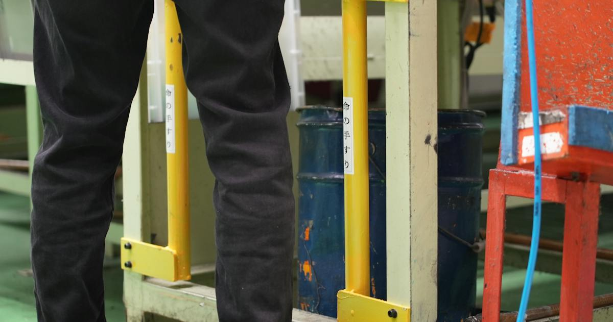
アイシン、熊本地震からわずか19日で復旧 5000超の対策奏功
『Warhammer 40,000: Boltgun』「スターシップ・トゥルーパーズ」原作FPSの開発元がレイオフを発表も、数時間後に投稿を削除―公式から追加発表なし
https://
gamespark.jp/article/2026/1
0/27/174118.html?utm_source=twitter&utm_medium=social&utm_content=tweet
…
正解がないと、つらいじゃないですか。
Miura Hideki
@miura1729
どうしてみんなOSとかコンパイラをそんなにありがたがるんでしょうかね。*ちゃんと使える*アプリケーションを作る方がよっぽど大変だと思うけど。
１０／２６利用の身に覚えがないクレカの利用速報メールが来たのでクレカを一時停止して確認したら一覧にもまだ載ってない。
金額がもしかしてと確認したら２カ月前に契約した自動車保険だったｗ
せめて支払先でも書いてあればビビらなくてよかったのに。。
nasuuuさんがリポスト
【注意喚起】
2026年10月26日、PHPの複数の脆弱性（CVE-2026-109618、CVE-2026-109619）に関する件の更新して、JPCERT/CCが注意喚起をしています。ご確認ください。
JPCERTコーディネーションセンター
@jpcert
【更新】PHPの複数の脆弱性（CVE-2026-109618、CVE-2026-109619）に関する注意喚起を更新。悪用を試みる通信の観測報告が相次ぐほか、悪用できると主張する実証コードも多数公開されています。追加公表の脆弱性（CVE-2026-115560）とその緩和策を追記しました。^KK
https://
jpcert.or.jp/at/2026/at2600
33.html
…
翻訳系ガジェットを探している人に試してほしい。イヤホンを分け合っての「対面通訳」｜Sponsored by
@IflytekJ
｜
翻訳系ガジェットを探している人に試してほしい。イヤホンを分け合っての「対面通訳」 | ギズモード・ジャパン
iOSの認証済アカウントで起こる事象らしいけど何考えてこんな誘導する仕組み入れようと思ったんだ
GMO、PCのバックアップと電源オフ呼びかけ VPS利用者に きょう正午の攻撃予告受け
GMO、PCのバックアップと電源オフ呼びかけ VPS利用者に きょう正午の攻撃予告受け
第一三共株価が急反落、一時７％安 がん治療薬で競争激化懸念
第一三共株価が急反落、一時7%安 がん治療薬で競争激化懸念
いまだに天津飯を食べるたびに「気功砲！」という叫びが脳内にこだまするのドラゴンボールのすごさだね。でも餃子たべる時にはチャオズのこと思い出さない。
『アサクリ4』リメイク版、最終大型アプデを10月27日配信へ―最大5回まで対応の「ニューゲーム+」やオリジナル版テイクダウン演出、高難易度「ナイトメア」など追加
https://
gamespark.jp/article/2026/1
0/27/174117.html?utm_source=twitter&utm_medium=social&utm_content=tweet
…
さらに表示 (元の投稿を開く)
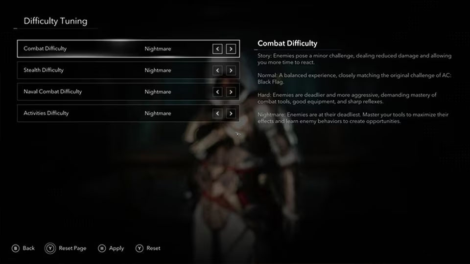
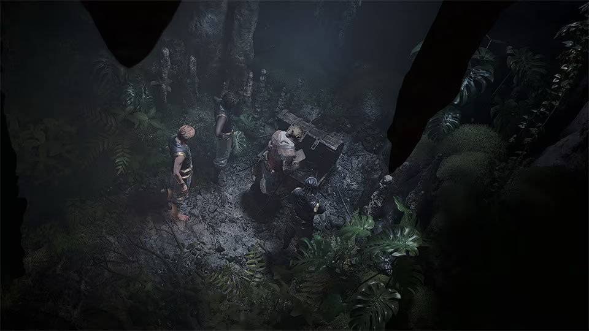
なるせひろのりさんがリポスト
パナソニック、ミニコンポ全機種の生産を11月以降順次完了。「後継商品は無い」
https://
av.watch.impress.co.jp/docs/news/2151
398.html
…
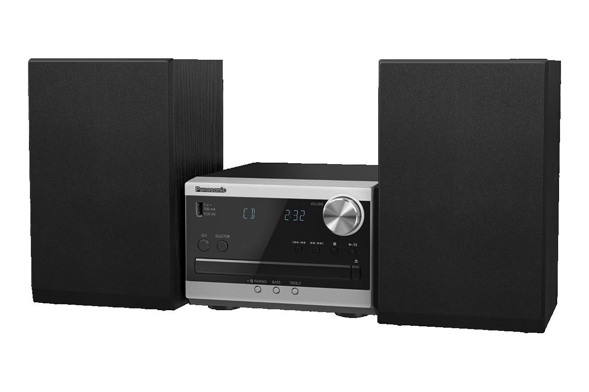
なるせひろのりさんがリポスト
『おま環』のバグやPCの管理が面倒とか、オンライゲームやSteamのみのインディーゲームとかやらなければPS5は安定動作なので、そこは強みですよね。
てか正解は『PCにコンシューマー機の全てを買う！遊ぶ！』ではありますよね。
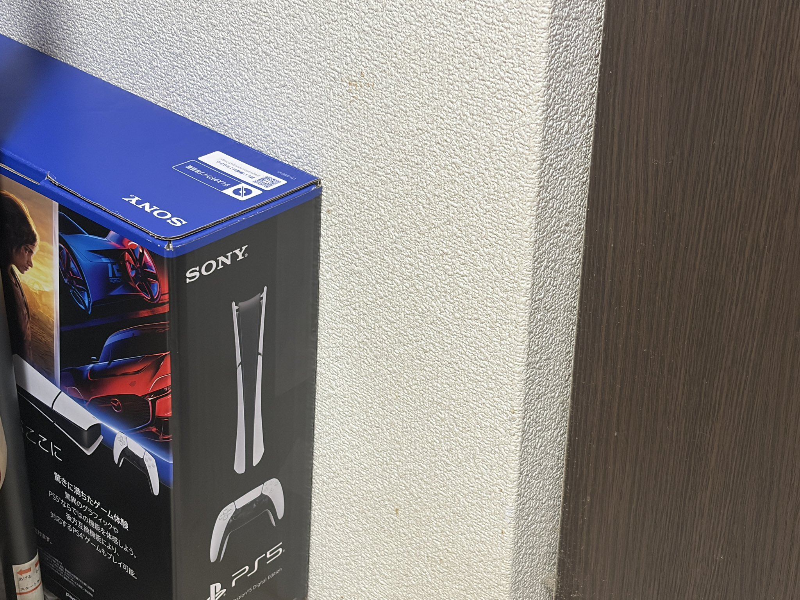
まぐろすし
@MaguroSushiVR
4080super持ってるくせに、GTAのためだけにプレステ買うようなアホ。本当にいるんか？
ニュウマン高輪1年、テナント1割刷新へ 手土産・夕食需要想定超え
ニュウマン高輪1年、テナント1割刷新へ 手土産・夕食需要想定超え
共和党敗北なら内政混乱に拍車 米中間選挙後、危うい外交レガシー優先
共和党敗北なら内政混乱に拍車 米中間選挙後、危うい外交レガシー優先
JR「スマートEX」会員メアドなど漏えい、約17万件か ユミルリンクへの不正アクセスで
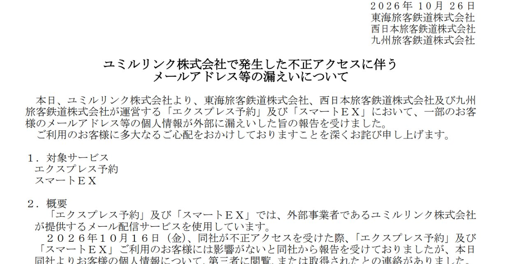
JR「スマートEX」会員メアドなど漏えい、約17万件か ユミルリンクへの不正アクセスで
時速120kmの走行中EVに無線給電 大成建設など3社、高速道で実証へ
時速120kmの走行中EVに無線給電 大成建設など3社、高速道で実証へ
リコー株価18年ぶり高値 「ペロブスカイト太陽電池量産へ補助金」報道
リコー株価18年ぶり高値 「ペロブスカイト太陽電池量産へ補助金」報道
「楽園追放」公式さんがリポスト
#楽園追放 心のレゾナンス
11月13日㊎劇場公開
広島県でも上映予定です！
https://
toei-screeninginfo.azurewebsites.net/theaterlist/02
992
…
アニメイトでもムビチケ好評販売中！
https://
animate-ticket.com/events/74?utm_
source=x_other&utm_medium=social&utm_campaign=x_other_74
…
この秋ぜひ劇場へ！

【速報】GMO、顧客にパソコンの電源オフを緊急要請 ハッカーから本日正午に攻撃予告 #酷い話・事件

【速報】GMO、顧客にパソコンの電源オフを緊急要請 ハッカーから本日正午に攻撃予告 - オレ的ゲーム速報@刃の記事ページ
jin115.com
副首都、人口・経済で4道府県に絞り込み 薄れる災害時の東京圏代替
副首都、人口・経済で4道府県に絞り込み 薄れる災害時の東京圏代替
スマホの誘惑を「鍵」で締め出す。物理的にスマホとの距離を置ける箱
スマホの誘惑を「鍵」で締め出す。物理的にスマホとの距離を置ける箱 | ギズモード・ジャパン
なるせひろのりさんがリポスト
【悲報】新幹線予約の個人情報、17万件流出と発表… JR東海・JR西日本・JR九州の3社で
【悲報】新幹線予約の個人情報、17万件流出と発表… JR東海・JR西日本・JR九州の3社で
なるせひろのりさんがリポスト
【GMO 利用者に「PC電源切って」】
GMO 利用者に「PC電源切って」 - Yahoo!ニュース
【Apple】iPhone Duo 誰もが驚く衝撃の機能を搭載していた
iPhone Duo 誰もが驚く衝撃の機能を搭載していた : ハムスター速報
貝さんさんさんがリポスト
とある科学の心理掌握 第38話
https://
comic-walker.com/detail/KC_0039
23_S/episodes/KC_0039230004900011_E
… #カドコミ
【第38話】とある魔術の禁書目録外伝 とある科学の心理掌握｜カドコミ (コミックウォーカー)
コーエーテクモHD株価、一時4.4％高 27年３月期純利益上方修正
コーエーテクモHD株価、一時4.4%高 27年3月期純利益上方修正
セガ3D格闘『バーチャ』新作『VIRTUA FIGHTER CROSSROADS』公式Xが意味深なポスト。10月30日になんらかの発表がある模様、画像の見切れた人物がヒント？
さらに表示 (元の投稿を開く)
セガ3D格闘『バーチャ』新作『VIRTUA FIGHTER CROSSROADS』公式Xが意味深なポスト。10月30日になんらかの発表がある模様、画像の見切れた人物がヒント？ | Game*Sp...
トウカイのクマさんがリポスト
【シャニマス】#KAWAII♡しーずんの描きおろしイラストをもとにした「ちびぐるみ」が2027年4月よりクレーンゲームに登場予定！ #シャニマス #シャイニーカラーズ #idolmaster
【シャニマス】#KAWAII♡しーずんの描きおろしイラストをもとにした「ちびぐるみ」が2027年4月よりクレーンゲームに登場予定！
ポン☆潤々さんがリポスト
╋━━━━━━━
神の海老バーガー＆
秋姫クラフトレモネード 発売記念！
店頭で使えるデジタル商品券1,000円分が当たる
━━━━━━━╋
応募方法
①公式アカウント（
@Freshness_1992
）をフォロー
② この投稿をリポスト
③ 後日、当選者さまへDM通知
さらに表示 (元の投稿を開く)
ポン☆潤々さんがリポスト
⳹∘˚⊹事後通販のお知らせ⊹∘˚⳼
アイドルマスター #SideM Teddy's Collection II POP UP STORE
2026年10月28日(水)11時頃より、ポップアップストアで取り扱った商品の事後販売開始
ぜひお手に取っていただけますと幸いです
アニメグッズストア及び
さらに表示 (元の投稿を開く)
なんというか、お手軽に技術的には丸裸、ですね。
nasuuuさんがリポスト
マイクロソフトが希望退職を募集 対象は6万人規模か
https://
news.web.nhk/newsweb/na/nd-
20261027de66125
… #nhk_news
マイクロソフト希望退職を募集 対象6万人規模か 従業員の27％ | NHKニュース
湘南ペンギンさんがリポスト
お客様PCの電源断のお願い
10月27日（火）12:00になる前に、バックアップを取得したうえで、 PCにつながっているコードを抜き、電源を落としてください。
あまりにも無様すぎる…
「お名前.com デスクトップクラウド」への不正アクセスに関する現在の対応について

【重要】「お名前.com デスクトップクラウド」への不正アクセスに関する現在の対応について（第8報）（【続報】お客様をお守りするために現在私たちが行っていること） | GMOインターネットグルー...
少し前まで、実装して動かすことだけでも、すごい、だったのが、誰でもできるよね、やろうと思いついたらになってるの、
スキルがゴミのように安くて、そこらに転がってて、拾うのもめんどくさい、一円玉価値観ですね。
WHO事務局長「パンデミックへの備え、十分でない」 NIKKEI感染症会議開幕
WHO事務局長「パンデミックへの備え、十分でない」 NIKKEI感染症会議開幕
なるせひろのりさんがリポスト
NECのルータ「Aterm」、PHP脆弱性の影響なし 設定画面URLの「.php」は無関係
NECのルータ「Aterm」、PHP脆弱性の影響なし 設定画面URLの「.php」は無関係
アドバンテスト株価、急反発 米アンソロピックがＩＰＯ目論見書開示

アドバンテスト株価、急反発 米アンソロピックがIPO目論見書開示
【ロケ】「iPhone Duo」を待つ！【おはよう！朝活ギズモード vol.21】
https://
youtube.com/live/592UbAZlS
vw?si=Ufx3nP8vXSEEl95y
…
@YouTube
より
ロケ場所↓FUKURIN Coffee & Beer 原宿東京都渋谷区神宮前1-13-14 Harajuku Quest 1F1...
youtube.com
新大阪駅に到着して、地下鉄で梅田へ
観覧車をバックに記念撮影
ボイスラリーを順調に集めるもある違和感が…
どうやら、順番どおりではないらしい…
#推し旅
#ぼっち・ざ・ろっく

ユウマボウズ
@Gc5RLsVaaV12052
ホテルをチェックアウトして、京都駅へ移動
お土産を購入して、推し旅コラボのために新大阪まで1駅新幹線修業します。
#推し旅
#ぼっち・ざ・ろっく x.com/Gc5RLsVaaV1205…
なるせひろのりさんがリポスト
FX業者5社で顧客被害 GMO不正アクセスで金融担当相が公表
https://
mainichi.jp/articles/20261
027/k00/00m/020/046000c
…
片山さつき金融担当相は27日、GMOインターネットグループが運営する外国為替証拠金取引（FX）向けサービスが不正アクセスを受けた問題に関連し、FX業者5社から顧客被害の報告があったと明らかにしました。
FX業者5社で顧客被害 GMO不正アクセスで金融担当相が公表
ITmedia NEWSさんがリポスト
コスパ重視の「GPT-6.1 Terra」新登場 コスト10分の1で一部Astraと同等性能うたう
コスパ重視の「GPT-6.1 Terra」新登場 コスト10分の1で一部Astraと同等性能うたう
ポン☆潤々さんがリポスト
本日いよいよ最終日！
「ポップカルチャー・オークション展」も本日が最終日となりました！
これまでご来場いただいた皆様、本当にありがとうございました！
本日も開催しておりますので、お時間のある方はぜひ遊びにいらしてください
皆様のお越しをお待ちしております！
元大阪地検検事正、2年ぶり公判で無罪主張 異例の冒頭手続きやり直し

元大阪地検検事正、2年ぶり公判で無罪主張 異例の冒頭手続きやり直し
日本経済新聞 電子版（日経電子版）さんがリポスト
GMO、顧客にパソコンの電源オフを要請 正午に攻撃との脅迫受け

GMO、顧客にパソコン電源オフを要請 27日正午に攻撃との脅迫受け
アニメ『BLEACH』ついに完結、放送22年の歴史に幕 #漫画・アニメ等
アニメ『BLEACH』ついに完結、放送22年の歴史に幕 - オレ的ゲーム速報@刃の記事ページ
jin115.com
うみゆき@AI研究さんがリポスト
なかなか見たことのない案内が出ましたね。
https://
group.gmo/info/alert/202
61027/
…
>3.お客様PCの電源断のお願い
>10月27日（火）12:00になる前に、バックアップを取得したうえで、 PCにつながっているコードを抜き、電源を落としてください。
【重要】「お名前.com デスクトップクラウド」への不正アクセスに関する現在の対応について（第8報）（【続報】お客様をお守りするために現在私たちが行っていること） | GMOインターネットグルー...
最安値更新タイトルも！「Steam絶叫フェス5」開催中―アプデきた『ミメシス』や『バイオ』『R.E.P.O.』『Sons Of The Forest』など恐怖を安く買える
https://
gamespark.jp/article/2026/1
0/27/174115.html?utm_source=twitter&utm_medium=social&utm_content=tweet
…
『ミメシス』は最安値更新の480円！セールは11月3日午前3時まで実施予定。
なるせひろのりさんがリポスト
【速報】GMO、パソコン電源落とすよう呼びかけ
【速報】GMO、パソコン電源落とすよう呼びかけ
なるせひろのりさんがリポスト
DMMぱちタウン連載109話
#エッセイ漫画 #車中泊 #ぱちタウン
第109話「ベテランからの車中泊アドバイス」 - 井上いちろうのブログ家なき男～ニシヘヒガシヘ～
苦戦の「かつや」フィリピンへ アークランズ、海外で巻き返し図る

苦戦の「かつや」フィリピンへ アークランズ、海外で巻き返し図る
日本政府「外国人の妊娠出産を日本人の税金で支援していきます」外国人の出生が過去最多 １割超となった自治体も多数
日本政府「外国人の妊娠出産を日本人の税金で支援していきます」外国人の出生が過去最多 １割超となった自治体も多数 : ハムスター速報
以前にゆうきゆうが監修させていただいた
「実録コミック・うつでも介護士」
が映画化に向けて動いてるそうです！おめでとうございます！
⚤渡辺河童＠漫画家・漫画原作、あいだ啓壱＠宅録ナレーター
@funyan5963
短編映画「うつでも介護士」
鋭意制作中！！
原作は「実録コミック・うつでも介護士」
著者：渡辺河童 監修：ゆうきゆう
あのマンガが映画になります！！
フィクションではなくリアルなお話です。
ちょくちょく制作工程を上げていくので
良かったらフォローしてお待ちください！
#短編映画
隅っこにシンデレラフィット。狭い部屋を広く使える暖房があります
隅っこにシンデレラフィット。狭い部屋を広く使える暖房があります | ギズモード・ジャパン
寝る前もスマホは手放さない。「夜専用メガネ」でブルーライトを97%カットする新提案 BuyPR
寝る前もスマホは手放さない。「夜専用メガネ」でブルーライトを97%カットする新提案 | ギズモード・ジャパン
なるせひろのりさんがリポスト
>各社ともFX取引で自動売買ソフトなどを利用する一部の顧客がGMOインターネットのサーバーを借りるサービスを利用していた
全部GMOの問題では……
朝日新聞(asahi shimbun）
@asahi
ＦＸ不正アクセス、国内5社から被害報告 金融庁「注意喚起を」
https://
asahi.com/articles/ASVBW
0BFYVBWULFA003M.html?ref=tw_asahi
…
ウクライナで局地停戦入り ロシア占領下で人道危機、メラニア夫人仲介
ウクライナで局地停戦入り ロシア占領下で人道危機、メラニア夫人仲介
堀大輔さんが代表を務める『日本ショートスリーパー育成協会』、ガチで終わる #ニュース
堀大輔さんが代表を務める『日本ショートスリーパー育成協会』、ガチで終わる - オレ的ゲーム速報@刃の記事ページ
jin115.com
【最大8人】夜の学校で怪異を撮影・配信するマルチプレイホラー『肝試しオンライン』リリース！配信を邪魔する裏切り者も存在し、怖い目に遭うほど視聴者が増える
https://
gamespark.jp/article/2026/1
0/27/174114.html?utm_source=twitter&utm_medium=social&utm_content=tweet
…
校舎はランダム生成により教室の配置など毎回変化。
「ほの暮しの庭」無料アップデート第2弾を本日配信
https://
4gamer.net/s/G093331.2610
26054
…
・好感度3以上の住人が主人公の誕生日を祝ってくれる
・前方3マスに種や苗，肥料をまける「種まき機」を追加
・バスタブやシャワー，洗面台などの家具10種を実装
・建物の移築や名前入力，アイテムの受け渡しなども改善
━━━━━━━━━━━━
#楽園追放
TOKYO ANIME NEXT
チケット一般発売中
━━━━━━━━━━━━
11/1㊐
『楽園追放 心のレゾナンス』
プレミア上映開催
チケット
https://
x.gd/35fxd
https://
tokyoanimenext.jp
本編上映後
本作の演出集合！トークイベントを
さらに表示 (元の投稿を開く)

／
#ヘブバン × ONKYO第2弾
終了まで残り3日
＼
▼ボイス搭載イヤホン・ボイス搭載充電器
受注期間:10/30(金)15:00まで
▼描き下ろしイラストグッズ
ECサイト「ONKYO DIRECT」・秋葉原店舗「音アニ2号店」にて販売中
販売サイト
https://
onkyodirect.jp/shop/pages/HBR
31A_EARPHONE.aspx
…
#ヘブバングッズ


総集編イベント
MORE MORE JUMP！ Memories 開催中
総集編イベント開催を記念して、MORE MORE JUMP！のイベントストーリーの一部と、当時投稿された #セカイの4コマ をお届け
『Cast Spell on You』
#プロセカ #モモジャン

なるせひろのりさんがリポスト
アップル、日本語対応の「Siri AI」提供開始
https://
k-tai.watch.impress.co.jp/docs/news/2151
356.html
…
ホテルをチェックアウトして、京都駅へ移動
お土産を購入して、推し旅コラボのために新大阪まで1駅新幹線修業します。
#推し旅
#ぼっち・ざ・ろっく


ユウマボウズ
@Gc5RLsVaaV12052
おはようございます！
現在ホテルの朝食を食べてます！
今日で私の連休も最終日…早いな...
身支度した後、大阪へ向かいます。
今日も楽しんで、行ってきます x.com/Gc5RLsVaaV1205…
ホテルをチェックアウトして、京都駅へ移動
お土産を購入して、推し旅コラボのために新大阪まで1駅新幹線修業します。
#推し旅
#ぼっち・ざ・ろっく
ユウマボウズ
@Gc5RLsVaaV12052
おはようございます！
現在ホテルの朝食を食べてます！
今日で私の連休も最終日…早いな...
身支度した後、大阪へ向かいます。
今日も楽しんで、行ってきます x.com/Gc5RLsVaaV1205…
なるせひろのりさんがリポスト
メルセデスが「あなたの想像をはるかに超える」とうたう、フル電動の新型「CLA」。その真偽を確かめるべく、北海道で“1000km試乗”を実施しました。その結果は……？（関 顕也） #メルセデス #メルセデスベンツ #mercedesbenz #CLA #EV #BEV
第879回：メルセデスがうたう「想像以上」は本当か？ フル電動の新型「メルセデス・ベンツCLA」に1000km乗ってわかったこと 【エディターから一言】 - webCG
なんかもう最近のネットヤバイよな
本人のパスワード管理の問題じゃない事象が多すぎて（PayPayのは不明だけど）
ネット上で金銭やクレジットカードを扱う事のリスクが大きすぎる
便利扱いされているAIの発達によってネット取引をやらない方がいい時代となり
逆に不便になるの皮肉すぎる
ハム速
@hamusoku
PayPay 連携している銀行口座からお金を全部抜き取られる事象やクレジットカードの不正利用報告が相次ぐ 地銀からのチャージと口座登録を停止
https://
hamusoku.com/archives/11051
492.html
…
はい
Haruhiko Okumuraさんがリポスト
OpenAIが、ミレニアム問題の一部であるヤン－ミルズ理論の構成に成功したようです

Working with academic communities to build scientific understanding
細野防災大臣が食料・水・トイレの備えを「緊急要請」！→ネットがざわつくも、こういうことだった… #政治

細野防災大臣が食料・水・トイレの備えを「緊急要請」！→ネットがざわつくも、こういうことだった… - オレ的ゲーム速報@刃の記事ページ
jin115.com
なるせひろのりさんがリポスト
楽天会員情報、ほとんど全部と言っていいほど漏れてるじゃねーかよｗｗｗｗｗｗｗｗｗｗｗｗｗ
2026年中にインターネッツはまともに使えなくなります！
と言ってきましたが、笑ってた奴みてるー？
（パスワード変更しよう・・）
セキュリティ対策Lab
@securityLab_jp
【更新】ハッカーが楽天会員1億100万件の個人情報 販売を主張―氏名・住所・ポイント情報のサンプル掲載、漏洩元・真正性は未確認
https://
rocket-boys.co.jp/security-measu
res-lab/rakuten-101m-data-sale-unverified-20261004/
…
#セキュリティ対策Lab #security #securitynews #セキュリティ #セキュリティニュース
＞ω＜さんがリポスト
圓山さんのだからまともな実装なんだろうけど、コーデイングエージェント丸投げでFPGAでLinux動かすだけのコアなら一日くらいでできるよ。そこからまともな性能にするには時間かかると思うけど
RISC-V協会
@riscv_a
コードを1行も書かず、64ビットRISC-VでLinuxが動いた。
Claude Codeが38日間で設計した「mmRISC-2」。RTL 22,100行、8段パイプライン、FPGAでDebian起動。@GlobalFoundries 180nmも視野に。
圓山宗智さんが11/11 東大本郷で語ります。
詳細
https://
riscv.or.jp/mmrisc2/
参加登録
なるせひろのりさんがリポスト
エロ漫画描いてたからいろいろ自信をもって描けるようになりました
日経平均株価、反発で始まる 米ハイテク株高で買い先行

日経平均株価、反発で始まる 米ハイテク株高で買い先行
アップデートしてしばらく待ちましたが、やっとSiri AIが準備完了した。
GMO不正アクセス、犯人側は「27日に顧客のPC攻撃」予告 GMOが端末回収、ホワイトハッカーが解析中

GMO不正アクセス、犯人側は「27日に顧客のPC攻撃」予告 GMOが端末回収、ホワイトハッカーが解析中
日本経済新聞 電子版（日経電子版）さんがリポスト
副首都要件に大阪・愛知・福岡・北海道が該当 人口規模など政府決定

副首都要件に大阪・愛知・福岡・北海道が該当 人口規模など政府決定
今日はこちらに出社です
海外のニュース番組「40代以上がゲームに夢中になるのはおかしい。もっとあるだろ…その時間で副業とか、遊ぶとしても魚釣りとか」 #ゲーム

海外のニュース番組「40代以上がゲームに夢中になるのはおかしい。もっとあるだろ…その時間で副業とか、遊ぶとしても魚釣りとか」 - オレ的ゲーム速報@刃の記事ページ
jin115.com
衆院定数の削減案乱立 国民民主党は19減
https://
nikkei.com/article/DGXZQO
UA2539E0V21C26A0000000/?n_cid=SNSTW005&n_tw=1793018983
…
人口あたりの議員数を下院（衆院）に限りG7で比べると、日本より少ないのはアメリカのみ。「異なる属性を持つ人たちが国会に入ってきにくくなる」との指摘もあります。

衆院定数の削減案乱立、国民民主は19減 「多様な民意」の反映遠く
散逸する企業研修用や自治体製作のゲームを収集・保存し“評価の物差し”を作る。石神康秀氏が語った「シリアスゲームミュージアム」の設立構想
https://
4gamer.net/s/G999104.2610
26036
…
なぜシリアスゲームの博物館を開くのか。「大阪シリアスゲームデイ」で語られた比較研究の課題や運営の仕組み
日銀利上げ到達点「2%」予想が増える 経済見通し小幅に上方修正か

日銀利上げ到達点「2%」予想が増える 経済見通し小幅に上方修正か
Apple「Siri AI」、日本語対応を開始 メタの「Muse」と競争

Apple「Siri AI」、日本語対応を開始 メタの「Muse」と競争
【LIVE】伊藤匠王座が防衛か、広瀬章人九段が奪取か 将棋王座戦最終局

伊藤匠王座vs広瀬章人九段【速報中】将棋王座戦最終局
NVidiaが作ったLLM用サンドボックスのOpenShellだって。良さそう。LinuxとMacサポート？Windowsは？と思ったら一応DockerとWSL2の実験的サポートがあるらしい。いいね
布留川英一 / Hidekazu Furukawa
@npaka123
NVIDIA OpenShell の概要 - AIエージェントを安全に実行するサンドボックス｜npaka @npaka123
https://
note.com/npaka/n/ne4964
e02f709?sub_rt=share_pw
…
ふーむ、しかし Cursor Models の方の使用枠に入らない限りあんまお得じゃないんだよなあ

Cursor
@cursor_ai
DeepSeek V4.1 Flash が Cursor で利用可能になりました！
すべての努力レベルが CursorBench コストフロンティアに位置しています：タスクあたり $0.60 から $0.98 で、どのモデルもこれより高いスコアを達成していません。
Cursor 設定 > モデル で有効にしてください。
なるせひろのりさんがリポスト
>対象端末では問題が早期に現れる傾向がある
遅かれ早かれ症状が出るような書き方だな……ｺﾜｯ
アップルのｉＰｈｏｎｅ「デュオ」に画面不具合、交換対応へ(ロイター)
#Yahooニュース

アップルのｉＰｈｏｎｅ「デュオ」に画面不具合、交換対応へ（ロイター） - Yahoo!ニュース
テスラさんがリポスト
ヨキカナ
ネオクラウドが逝き逝きしてるの図
Lin
@Speculator_io
イーロンが今、まさに言ったばかりだ。ほとんどのネオクラウドは最終的に死ぬだろう、と。
そして、我々はすでにそれが展開し始めているのを目撃しているかもしれない。
たとえAIが我々の生涯で最大の技術革命だとしても、それがAIインフラを構築するすべての企業が生き残るという意味ではない。
デュアルシャドウ面白そう。PVの「だってわたしたちプリキュアじゃないし」の暗さから推測するに、敵が迫って来てプリキュアになろうとするも「プリキュアになるには顔良くて歌とダンスもできなきゃ…ね？(笑)」と妖精に拒否された女の子が主役の話だと思います

会社に言えず7年間「隠れ介護」 ワーキングケアラーの孤立救うには
会社に言えず7年間「隠れ介護」 ワーキングケアラーの孤立救うには
ユミルリンク、情報流出5000万件超(時事通信)
#Yahooニュース
ユミルリンク、情報流出5000万件超（時事通信） - Yahoo!ニュース
貝さんさんさんがリポスト
『パリに咲くエトワール』『ガールズ＆パンツァー』『コードギアス』などで知られるBNFWの湯川淳Pが独立、アニメ企画・プロデュースの新会社アークステリアを設立。株主構成がご本人の他、大河内一楼/カルキ・ラジーブ/谷口悟朗と盟友集合という感じ。
株式会社アークステリアのトップページです
arkstelia.co.jp
競輪は単勝ないよ。 #アップ738
UAゼンセン、賃上げ要求6%で調整 格差是正へパートは7％軸

UAゼンセン、賃上げ要求6%で調整 格差是正へパートは7%軸

「取引先を24時間、AIで監視します！」サービス登場。めっちゃ怖いけど、企業は欲しがる？
「取引先を24時間、AIで監視します！」サービス登場。めっちゃ怖いけど、企業は欲しがる？ | ギズモード・ジャパン
湘南ペンギンさんがリポスト
INMU KINGはよくできているね。
才能あるね。
これが紅白に行く世界線はあるのか。
PS1の名作『リッジレーサー TYPE 4』が、チートコードだけで大幅にパワーアップ可能な事が発見される!!
なんとこちら「日本語版のリッジレーサー TYPE 4」
を対象に、フレームレートを60fpsに引き上げられるほか、16:9のワイドスクリーン化が可能に。
さらに表示 (元の投稿を開く)

オタク起床
今日は、台風で会社が休みの予定でしたが、台風消滅したので出勤日に、、、
エンドスさんがリポスト
彼の死の2ヶ月前のインタビューで、福田元首相は、第二次世界大戦で男たちが死ぬために送り出されたという幼少期の記憶を振り返りました。
彼は、日本の歴史を思い出すことの重要性と、さらなる戦争を避けることを目指した外交を追求することの重要性を強調しました。
Jeffrey J. Hall
@mrjeffu
2007年から2008年まで日本の内閣総理大臣を務めた福田康夫氏が、90歳で逝去しました。
彼は北京とのより大きな対話の推進を強く支持した姿勢で記憶されるでしょう。安倍政権時代には、中国への特別使節を務めました。
那覇から一番近いサイゼは基隆と聞いたが、本当にそうかもしれない（笑）
南国気分な宮崎県民bot
@Miyazakipre_bot
〜10:00 宮崎駅〜
他県民「合流できたしとりあえずサイゼでも行こっか」
宮崎民「おっけ、車出すわ」
〜10:10 宮崎IC〜
他県民「移動で疲れたから寝させてもらうわ」
〜??:?? 宮崎駅最寄りのサイゼ〜
宮崎民「ついたよ〜」
他県民「よく寝た...いま何時？」
宮崎民「12時50分」
他県民「ゑ...」
ChatGPTに「ネオクラウドが死滅しても債券持ってた人が困るだけでオルカンはノーダメすよね？」と訊いたら「基本的にはそうだけどNVidiaとかまで下落したらダメージデカイ」との事。言われてみれば結局電力が足りないのがボトルネックなんだからどうあがいてもGPUダダ余る宿命かもしれん。おいNVidia！
さらに表示 (元の投稿を開く)
「一番くじ ONLINE」の配送情報漏えいか バンダイナムコの物流子会社に不正アクセス
「一番くじ ONLINE」の配送情報漏えいか バンダイナムコの物流子会社に不正アクセス
PayPay 連携している銀行口座からお金を全部抜き取られる事象やクレジットカードの不正利用報告が相次ぐ 地銀からのチャージと口座登録を停止
PayPay 連携している銀行口座からお金を全部抜き取られる事象やクレジットカードの不正利用が報告が相次ぐ PayPayは地銀からのチャージと口座登録を停止 : ハムスター速報
Haruhiko Okumuraさんがリポスト
これ。さっき起きてなにがあったのかわからずアプリを殺してから再起動してしまった。私だけじゃなかったのか

inuro
@inuro
ところでiOSのTwitter、いきなり謎の指オーバーレイが出てきて、それ以来何か入力すると「ポスト」が消えて「プロモーション」と「…」だけになり、…は押しても何も起こらないし、プロモーションは押すとエラーになるしで、投稿できないんだけど、公式の施策かそれとも何か踏んだのかどっちだこれ
Python 3.15.2、3.14.10、3.13.18、3.12.16、3.11.18 がリリースされました

The official home of the Python Programming Language
python.org
雑居ビル内の居酒屋、店前に若い女の子が立ってて、「どうぞ〜」って言うんで入ったら女の子が電話し出して、「お客さん入りました〜」った後、しばらくしたらおっさんが「どうも〜」ってやってきたの、全てが反転した世界のキャバクラみたいで怖かったな。なおメシはうまかったです。反転してない。
Apple、「iPad mini」を大幅刷新 8.5インチOLEDとA20 Pro搭載、防水にも対応 11万9800円から

Apple、「iPad mini」を大幅刷新 8.5インチOLEDとA20 Pro搭載、防水にも対応 11万9800円から
なるせひろのりさんがリポスト
アップルは10月26日（現地時間）、iOSの最新バージョン「iOS 27.2」の配信を開始した。iOS 27.1を飛ばしていきなり登場したiOS 27.2の目玉は、なんと言ってもSiri AI！ そして、iPhone DuoではApple Pencilが利用できるようになった。

アップルから、一気に「iOS 27.2」が登場 Siri AIの日本語対応＆iPhone Duoでペンが利用可能に - 週刊アスキー
鳩サブレーでアイスサンド作ってみた
サーティワンのアイスを挟んでいるのは…… “罪深い正体”に「最高のコラボ」「鳩ぽっポーション」
https://
nlab.itmedia.co.jp/cont/articles/
4054027/
…

HoYoverse初のスローライフゲーム「プチプラネット」，リリース予告番組を11月1日20：00から配信。忘れずに見たい「今週の公式配信番組」ピックアップ
https://
4gamer.net/s/G042182.2610
26053
…
「NTE」「崩壊：スターレイル」の予告番組や「ガルパ」×「魔法少女ノ魔女裁判」コラボ情報解禁番組などが予定されている

Haruhiko Okumuraさんがリポスト
OpenAIがさらに新しい結果をアナウンス
NP完全問題として知られているk-SATがn（変数の数）の指数関数より小さい時間で解けることを証明し、指数時間仮説（Exponential Time Hypothesis）を否定したそうです
（指数時間仮説が正しければP≠NPだが、今回の結果はP=NPもP≠NPも示さない）
Dan Roberts
@danintheory
コンピュータサイエンスの共同研究は、Exponential Time Hypothesis (ETH) に関する結果を理解し、説明するでしょう。これは、ブール式の充足可能性に関する計算複雑さについての長年の予想であり、P vs. NP 問題と深く関連した問題です。
驚くべきことに、私たちのシステムは最近、ETH
中国・北朝鮮が対馬を占拠する架空の軍事衝突を描く。「大戦略SSB2」，新シナリオ「対馬海峡危機」を10月29日配信
https://
4gamer.net/s/G094686.2610
26049
…
中国・北朝鮮が手を組んで対馬を急襲。上島の奪還を目指す自衛隊との攻防を描く。三方から迫る敵を迎撃する「五稜郭からの侵略者II」も追加

【最大4人PT】『ゼルダ』にインスパイアされたライトMMO仕様のARPG『Scramble Knights Online』早期アクセス開始
https://
gamespark.jp/article/2026/1
0/27/174113.html?utm_source=twitter&utm_medium=social&utm_content=tweet
…
・ライトMMO仕様で32人が1つの世界に
・4人1組のパーティを組んでワイワイ遊べる
・Game Passにも対応
【最大4人PT】『ゼルダ』にインスパイアされたライトMMO仕様のARPG『Scramble Knights Online』早期アクセス開始 | Game*Spark - 国内・海外ゲーム情報サイト
湘南ペンギンさんがリポスト
ところでiOSのTwitter、いきなり謎の指オーバーレイが出てきて、それ以来何か入力すると「ポスト」が消えて「プロモーション」と「…」だけになり、…は押しても何も起こらないし、プロモーションは押すとエラーになるしで、投稿できないんだけど、公式の施策かそれとも何か踏んだのかどっちだこれ
米国民のデータセンター建設反対運動がデータセンター建設遅れに繋がってネオクラウド死滅、データセンターバブル崩壊につながったんだとしたら、やっぱ政治的アクションのチカラってスゲー。とは言え一方で民衆の反対運動を許さない中国がスピーディにデータセンター建てまくって米国を追い抜くとした
さらに表示 (元の投稿を開く)
シラフで踊れる？ 飲酒なし「コーヒーレイブ」が若者に刺さる理由（Podcast）
シラフで踊れる？ 飲酒なし「コーヒーレイブ」が若者に刺さる理由
海街@信州さんがリポスト
公式発表
ケインが2026年バロンドールを獲得
かつて“無冠の帝王”と呼ばれた33歳が、苦難を乗り越え、世界No.1に輝く
#BallonDor

海街@信州さんがリポスト
𝐇𝐀𝐑𝐑𝐘 𝐊𝐀𝐍𝐄 𝟐𝟎𝟐𝟔 𝐁𝐀𝐋𝐋𝐎𝐍 𝐃'𝐎𝐑 𝐖𝐈𝐍𝐍𝐄𝐑
「楽天トラベル」に不正アクセス 顧客情報最大約260万件など流出か 予約者約3.6万件のクレカ情報も

「楽天トラベル」に不正アクセス 顧客情報最大約260万件など流出か 予約者約3.6万件のクレカ情報も
アーケードの名作『スーパーパズルファイターII X』を、まさかの「ニンテンドー64」に勝手移植するプロジェクトが始動!!
本作は、N64実機で60fps動作を目指して開発が進められており、ソースコードからプログラムを構築する仕組みで公開されているンだッッ!!
https://
github.com/RolandD50/SPF2
TN64
…
明治安田生命、英運用大手マンに5％出資へ 2000億円運用委託
明治安田生命、英運用大手マンに5%出資へ 2000億円運用委託
【話題】コロラド州出身のお笑い芸人・パックン(55)さん、溺愛していた奥さんの死(享年46)から１年、現在の心境を前向きに語る

ギフティグループ、不正アクセスで5.5億円損失 eギフト不正発行
ギフティグループ、不正アクセスで5.5億円損失 eギフト不正発行
日経平均株価、米株高が追い風 アンソロピックIPO申請（先読み株式相場）

日経平均株価、米株高が追い風 アンソロピックIPO申請（先読み株式相場）
アーケードの大名作『クレイジータクシー』が、MAMEで大幅な高速化を実現する最新の改善が行われた模様!!
さらに表示 (元の投稿を開く)

イーロンの爆弾発言によってネオクラウドの株価さらに下落
Reuters
@Reuters
マスクの暗い見通しが債務懸念の高まりとともにネオクラウドを直撃
https://
reut.rs/4ib0vEo
おはようございます！
現在ホテルの朝食を食べてます！
今日で私の連休も最終日…早いな...
身支度した後、大阪へ向かいます。
今日も楽しんで、行ってきます

ユウマボウズ
@Gc5RLsVaaV12052
お風呂とサウナで調ってからオロポでキメ!!!
明日に備えて寝ます!!!
おつトゲ!!! x.com/Gc5RLsVaaV1205…
うみゆき@AI研究さんがリポスト
最近は毎日がゼロデイだ
GMO、FXサービス利用者の端末を預かり調査 不正アクセス巡り
GMO、FXサービス利用者の端末を預かり調査 不正アクセスで
イーロンが「データセンター建設の遅れによって買い込んだGPUを腐らせる企業が続出するやろね」と言う。それから「もはやここ数週間で市場はAIデータセンターしかやってない企業への融資をほぼ完全に遮断した。（！）ウチもAnthropicにGPU貸し出しやってるけど、ウチはそれだけじゃなくてSpaceXの打ち
さらに表示 (元の投稿を開く)
Elon Musk
@elonmusk
ほぼその通りです。
過去数週間において、債務市場はAIデータセンターとは独立した大幅な収益を持たない企業に対して、資金へのアクセスをほぼ完全に遮断しました。
SpaceXはGPUのために400億ドルの債務を調達しましたが、私たちは投資適格等級であり、Starlinkと打ち上げ収益を持っています。
セガの大名作『シェンムー』と『シェンムーII』が、長年の解析によって複数バージョンの内部構造が遂に明らかに!!
さらに表示 (元の投稿を開く)

Torishima / INTPさんがリポスト
近所のダイソーに売ってたこれも割と良かったですね。風呂でXしつつ、音楽とかに切り替えてここに入れておけばシャワれる
https://
jp.daisonet.com/products/45504
80392813?srsltid=AYCX9vLhnuVKnAv2H9uBWvH53S4lfkrnb0aFkw1gls81TgM8umxEPxAW
…
ほーきー(Hawkie) | AI× |||||||||||||||||||||||||||||
@hawkymisc
お風呂にスマホか防水タブレットを持ち込むとできますよ(現在進行系) x.com/miyayu_jp/stat…
うみゆき@AI研究さんがリポスト
GMOの件、本日10月27日（火）正午に、ハッカーが、GMOの顧客情報を公開し、ランサムウェア攻撃を開始すると予告しています。
第二の「けつ毛バーガー事件」みたいなことにならないことを願います。
さらに表示 (元の投稿を開く)
Yahoo!ニュース
@YahooNewsTopics
【GMOに予告 正午に顧客情報公開】
https://
news.yahoo.co.jp/pickup/6600241
貝さんさんさんがリポスト
これマジで良すぎる。軽快な動きの中に、硬い靴底で薄く積もった雪を踏みしめているような説得力がちゃんとあって、都会の冬らしい肌寒さを感じさせる色使いも含めて、本当に素晴らしい。
guh ki
@guhki1004
Ninomae Ina’nis -「Abyssal Hymn」MV 1원화、2원화로 참여했습니다! 좋은 경험이었습니다
#RETICLES #Ninomae_Inanis #Inanis #Abyssal_Hymn #HololiveEN #Cover
iOS更新でSiri AI来たかぁ･･･。
Meta、AI投資拡大に向け最大950億ドル規模の株式発行計画 NVIDIA、AMD、Broadcomも出資に関心
Meta、AI投資拡大に向け最大950億ドル規模の株式発行計画 NVIDIA、AMD、Broadcomも出資に関心
今日はApple更新祭りらしい（午前中忙しいので午後に）
とりしま (Sub I/O)さんがリポスト
GPT-6.1 Terraの初期評価を間違えていたと思います。
さらに表示 (元の投稿を開く)
OpenAI
@OpenAI
GPT-6.1 Terra：低価格で高速かつ高機能なコンピュータ利用を実現。
GPT-6.1 Terra は画面に表示されている内容を理解し、アプリ間でアクションを実行し、自然に文章を書き、あなたの1日の仕事全体にわたってより高機能なモデルであり、より多くの作業を効率的にこなす能力を持っています。
こどもNISAを贈与に使えるか、ジュニアNISAとの違いは？ Q&Aで解説
こどもNISAを贈与に使えるか、ジュニアNISAとの違いは Q&Aで解説
3DSエミュ「Azahar」が、まさかの「Anbernic製の中華エミュ機」を公式サポートの対象外に!!
この件、Anbernicの新型2画面ゲーム機「RG
さらに表示 (元の投稿を開く)

Azahar Emulator
@azaharemu
私たちの注意に、携帯型デバイスメーカーであるAnbernicが、Azaharの非公式な海賊版フォークを使用して最新の携帯型デバイスであるRG DDSを宣伝しており、これらのフォークを広告資料で公然と取り上げていることが明らかになりました。
なんと。アップルの新製品は第一世代は買わない方がいいというジンクスがまたもって感じ。第三世代になると落ち着く。iPhone
さらに表示 (元の投稿を開く)
クラックゲート？iPhone Duo、発売当日からヒンジ部の画面割れ報告相次ぐ | テクノエッジ TechnoEdge

クラックゲート？iPhone Duo、発売当日からヒンジ部の画面割れ報告相次ぐ | テクノエッジ TechnoEdge
「すごい薄情だと思われるかもしれないですけど、旅行に行ったときにお土産を買うのをやめました」と生田斗真さん。わたしは観光客向けのお土産は買わないことにしてる。買うんなら、地元の人が地元で消費してる日常的な食材や調味料だけ。↓
生田斗真、旅先でお土産を買うのをやめた理由「喜ばれること、あります?」に集まる共感 ハライチ岩井は5日間「探す旅でした」（SmartFLASH） - Yahoo!ニュース
生田斗真、旅先でお土産を買うのをやめた理由「喜ばれること、あります?」に集まる共感 ハライチ岩井は5日間「探す旅でした」（SmartFLASH） - Yahoo!ニュース
Kimi K3.1 ベースの Composer 3 を期待してます
Claude はチャットだと割とマシなんだけど Code になるとキモい喋り方が目立つので Gemini 4 Argon に矯正させるように Opus 5.5 にシステムプロンプトを自己調整させてたら死ぬほど使い込まれて On-Demand まで使われてて大鬱
というか Grok / Composer の出番が全然なくなってしまった・・・
OpenAIの「脱走するAI封じ込め策」があまりにもエヴァンゲリオン
OpenAIの「脱走するAI封じ込め策」があまりにもエヴァンゲリオン | ギズモード・ジャパン
1982年、コムデギャルソンがパリで初めてのショーを開催したときはこんな批評があったとか。フィガロで活躍する著名なファッション評論家は「「穴、ぼろ布、くたびれた古着。まるで、核の大惨事の生存者が着る服のようだ」と書き、そのスタイルを、「ヒロシマ・シック」とまで呼んだ」↓
「語らざる人」川久保玲 仏紙が描く、通訳を介しても届かない言葉の隔たり | ロスト・イン・トランスレーション
「語らざる人」川久保玲 仏紙が描く、通訳を介しても届かない言葉の隔たり | ロスト・イン・トランスレーション
皇居ラン「禁止論」に思う 公共空間を共存利用する価値とは（鏑木毅） - 日本経済新聞

皇居ラン「禁止論」に思う 公共空間を共存利用する価値とは（鏑木毅）
皇居ランについて、わたしもそう思う。規制ではなくマナーの徹底という文化的解決を求めたい。「もし仮に皇居の外周で規制が強化されるようなことになれば、他の地域にもなし崩しで規制が広がらないか。人々の公共心による配慮で保たれてきた秩序が一気に取り払われる懸念が私にはある」と鏑木毅さん。
さらに表示 (元の投稿を開く)
9組に1組が仮面夫婦 「子育て終えたら解散」の道も

9組に1組が仮面夫婦 「子育て終えたら解散」の道も
危機的状況にあるフランスの財政状況を解説。富裕税とかやったけど、結果的にベルギーなど周囲のフランス語圏の国に富裕層が脱出。悲惨な結果＞「彼らが出て行ったことで、フランスは富裕税の税収だけでなく、所得税やその他の税も失った。これによってフランス政府が、富裕税が生み出した総額のほぼ2
さらに表示 (元の投稿を開く)

ノア・スミス「フランスとリベラリズムの限界」（2026年10月22日）
ノア・スミス「フランスとリベラリズムの限界」（2026年10月22日）
日本経済新聞 電子版（日経電子版）さんがリポスト
Apple「iPad mini」2年ぶり刷新、薄く耐水性能も 11万9800円から

Apple「iPad mini」2年ぶり刷新、薄く耐水性能も 11万9800円から
なるせひろのりさんがリポスト
後ろの席のギャルがうるさい話 1（再掲）
（1/2）
ベストセラー「13歳のハローワーク」の「作家」の項目が紹介されてるまとめ。この感じ、まさに村上龍節が全開ですね。ご冥福を。↓
「村上龍の真骨頂が全部詰め込まれてる」"13歳のハローワーク"の作家になりたい人に向けた項目が痺れる

「村上龍の真骨頂が全部詰め込まれてる」"13歳のハローワーク"の作家になりたい人に向けた項目が痺れる
おもしろすぎる風刺投稿。でもこういう経営者、本当にいそう……。週休3日を試しにやったら大成功。そこで経営者は「これまで実施した人事施策の実験でも、特に成功したものの1つだった。だから当然、終了させた。4日間で5日分の仕事ができるなら、5日間ではどれだけできるか、想像してみてほしい」↓
「わが社も要望に応えて週休3日にしてみた…」とある風刺投稿が議論に : らばQ

「わが社も要望に応えて週休3日にしてみた…」とある風刺投稿が議論に : らばQ
「AIを虐待すると復讐されるかも」マスク氏も警告…アンソロピックが“AIいじめ”対策でポリシー改定 識者が危惧するAIへの暴言のリスク（ABEMA TIMES） - Yahoo!ニュース

「AIを虐待すると復讐されるかも」マスク氏も警告…アンソロピックが“AIいじめ”対策でポリシー改定 識者が危惧するAIへの暴言のリスク（ABEMA TIMES） - Yahoo!ニュース
たいへん興味深い、「AIいじめ」についてのアベプラの議論。シナモンの平野未来さんは「嫌味を言うと、AI側はそれを学習データにする。人間はこういう反応をしているから、これがいい行動なんだと学んで、AI側も暴言を吐いたり嫌味を言ったりする方向に行ってしまう」↓

19世紀末、日本人は勇猛果敢で新しもの好きだった | 佐々木俊尚「毎朝の思考」/ Voicy - 音声プラットフォーム
19世紀末、日本人は勇猛果敢で新しもの好きだった | 佐々木俊尚「毎朝の思考」/ Voicy - 音声プラットフォーム
日本人の民族性は歴史や伝統もあるけれど、その時々の社会状況に影響されて大きく変わる。↓
Torishima / INTPさんがリポスト
DeepSeek V4.1 Flash が Cursor で利用可能になりました！
すべての努力レベルが CursorBench コストフロンティアに位置しています：タスクあたり $0.60 から $0.98 で、どのモデルもこれより高いスコアを達成していません。
Cursor 設定 > モデル で有効にしてください。
完全に移民推進派と見なされた高市首相、Xに「移民反対」の声が殺到し続ける→コメント数1万件を超えて今でも炎上中 #炎上

完全に移民推進派と見なされた高市首相、Xに「移民反対」の声が殺到し続ける→コメント数1万件を超えて今でも炎上中 - オレ的ゲーム速報@刃の記事ページ
jin115.com
必死になると指が開いちゃう
風呂嫌いなフェレットをバスタブに入れたら…… “まさかのポーズ”が500万表示「手がwwww」「アニメみたい」
https://
nlab.itmedia.co.jp/cont/articles/
4052427/
…

おはようございます。今日は10月27日、火曜日。
【最大4人協力】カンニングで期末試験を切り抜ける学校生活シム『Finals Week』ウィッシュリスト10万件突破！答案覗き見、カンニングペーパー、携帯電話...先生にバレずに答えを伝え合おう
https://
gamespark.jp/article/2026/1
0/27/174112.html?utm_source=twitter&utm_medium=social&utm_content=tweet
…
動き始めた「盆栽トレーサビリティー」、海外市場開拓へ環境整備
https://
nikkei.com/article/DGXZQO
UA230LT0T21C26A0000000/?n_cid=SNSTW005&n_tw=1793016656
…
QRコード付きのタグで個体識別や生育履歴を管理。高額盆栽が本物であることを担保します。背景には非正規ルートで盆栽が海外流出していることへの危機感があります。
動き始めた「盆栽トレーサビリティー」、海外市場開拓へ環境整備
TGS 2026 コンパニオン＆コスプレイヤー写真集（ZIPファイルなし）をお届け。10年に1度の豊潤なみずみずしさに恵まれた258枚！
https://
4gamer.net/s/G999110.2610
26020
…
4GamerがTGSでコンパニオンさんを撮ってきた！ え？ もう先月の話だって？ ……ぜんぶゲーム業界のせーだし（ｺﾞﾆｮｺﾞﾆｮ
なるせひろのりさんがリポスト
『プリキュア』新スピンオフ主人公は、プリキュアじゃない!? 『デュアルシャドウ～Precure Villain Heroines～』が2027年放送決定
https://
famitsu.com/article/202610
/92123
…
公開されたティザーPVには「だってわたしたちプリキュアじゃないし」の気になる一言も。これまでのプリキュアとは正反対の世界観が描かれる
まさかの「復路」があるリズムアクション!? 「DYU/TAN」で気づかされた，自らの足跡を振り返り，共鳴する楽しさ
https://
4gamer.net/s/G999901.2610
27002
…
往路でのプレイが復路でのご褒美に変わる，ユニークなリズムアクションを体験してきました

ねくまさんがリポスト
꧁——————————————꧂
「デュアルシャドウ
～Precure Villain Heroines～」
2027年放送決定
☽ ——————— ♔ ——————— ☾
「プリキュア」シリーズの新たなスピンオフ作品誕生
——だって、わたしたちプリキュアじゃないし
#デュアルシャドウ #precure
なるせひろのりさんがリポスト
【iPhone Duo画面不具合 交換対応】

iPhone Duo画面不具合 交換対応 - Yahoo!ニュース
Haruhiko Okumuraさんがリポスト
サブ指数時間（2^{n / log^eps(n)}）での3SATは、私が理論計算機科学を20年間追いかけてきた中で見た最大の驚きかもしれない（25年前に複雑性の違いで3と2がもたらす影響を見て感じたあの感覚を今でも覚えている）
Dan Roberts
@danintheory
私たちは、調和解析、複雑性理論、量子場理論に関する数学、計算機科学、物理学における3つの新しい発見を発表します。
https://
openai.com/index/building
-scientific-understanding-with-academic-communities/
…
Microsoft、約6万人対象の希望退職制度を発表 巨額のAI投資で経費抑制か
Microsoft、約6万人対象の希望退職制度を発表 巨額のAI投資で経費抑制か
「Siri AI」が日本でも使えるように。iPhone“だけ”でAIと会話できちゃうよ【iOS 27.2】
「Siri AI」が日本でも使えるように。iPhone“だけ”でAIと会話できちゃうよ【iOS 27.2】 | ギズモード・ジャパン
次世代太陽電池「ペロブスカイト」官民で量産へ 2社に補助金1000億円
https://
nikkei.com/article/DGXZQO
UA23AGY0T21C26A0000000/?n_cid=SNSTW005&n_tw=1793018840
…
リコーは「インクジェット」技術を生かし、薄くて曲がるフィルム型を開発。長州産業はシリコン太陽光パネルにペロブスカイトを重ねるタンデム型を手掛けます。

ペロブスカイト官民で量産へ 国がリコー・長州産業に補助金1000億円
OpenAIのTibo氏（Codex・ChatGPT担当）の投稿（連続アップデートの22日目）
https://
x.com/thsottiaux/sta
tus/2114800277677092936
…
GitHubの発表
GitHub
@github
@OpenAIDevsのGPT-6.1 Terraが、GitHub Copilotで一般提供開始されました。
初期テストでは、GPT-6.1 TerraはGPT-5.6 Terraよりも、端末操作やC#コーディングタスクを明らかに多く解決しました。適切に範囲が定められたタスクに対して、集中した統合的なステップで動作します。
GPT-6.1@
https://
github.blog/changelog/2026
-10-26-gpt-6-1-terra-in-github-copilot/
…
5/ 提供範囲
・ChatGPT：Plus・Pro・Business・Enterprise・EduのWorkとCodex
・ChatGPT・Codexの利用枠ではSolの2倍使える（OpenAIのTibo氏）
・API：gpt-6.1-terra（コンテキスト長105万トークン）
・GitHub Copilotでも一般提供を開始
OpenAI
@OpenAI
GPT-6.1 Terra が現在ロールアウトされており、ChatGPT Work および Codex のすべての Plus、Pro、Enterprise、Edu ユーザー向けに利用可能です。
開発者は OpenAI API を介して gpt-6.1-terra としてもアクセスできます。
https://
openai.com/index/introduc
ing-gpt-6-1-terra/
…
【速報】OpenAI、GPT-6.1 Terraを公開。PC操作はGPT-6 Astra並み、単価は1/10
・作業完了はAstra・Solより平均3倍以上速い
・API料金：入力$1／出力$5（Solの半額）
・ChatGPTはPlus以上のChatGPT Work・Codexで利用可能（通常チャットは対象外）
Opus 5.5との比較や第三者評価はリプで↓


貝さんさんさんがリポスト
まほなぎ やきもち凪ちゃん
Haruhiko Okumuraさんがリポスト
私たちは、調和解析、複雑性理論、量子場理論に関する数学、計算機科学、物理学における3つの新しい発見を発表します。
Working with academic communities to build scientific understanding
トランプ氏「ブラジル大統領選は不正」主張 根拠示さず
トランプ氏「ブラジル大統領選は不正」主張 根拠示さず
魔法少女を診察し救うか見捨てるか判断するホラー医療シム『こちら魔法少女救命外科』Steamでリリース
https://
gamespark.jp/article/2026/1
0/27/174111.html?utm_source=twitter&utm_medium=social&utm_content=tweet
…

千代田区が三菱地所系マンションに5年転売禁止要請
https://
nikkei.com/article/DGXZQO
CC251XN0V21C26A0000000/?n_cid=SNSTW005&n_tw=1793018735
…
価格高騰を抑えるため、2025年に業界団体に同様の要請をした同区。個別物件に働きかけるのは初です。具体的な物件への事実上の「指導」は財産権の観点からも議論を呼びそうです。

東京都千代田区、三菱地所レジデンスのマンションに5年転売禁止要請
nasuuuさんがリポスト
Anthropic、IPOを正式申請 上半期売上高は約14倍、純損失807億ドル
Anthropic、IPOを正式申請 上半期売上高は約14倍、純損失807億ドル
盟主エジプト、サウジ軍事支援を決断 フーシ攻撃激化で上げた「重い腰」
盟主エジプト、サウジ軍事支援を決断 フーシ攻撃激化で上げた「重い腰」
アンソロピックがIPOへ、2年で驚異の100倍成長 目論見書に存亡リスク
アンソロピックがIPOへ、2年で驚異の100倍成長 目論見書に存亡リスク
AI投資800兆円マネー争奪 進む巨大テックの寡占、新興勢に淘汰の波
AI投資800兆円マネー争奪 進む巨大テックの寡占、新興勢に淘汰の波
日本経済新聞 電子版（日経電子版）さんがリポスト
9組に1組が仮面夫婦 「子育て終えたら解散」の道も
https://
nikkei.com/article/DGXZQO
UD071CC0X01C26A0000000/?n_cid=SNSTW005&n_tw=1793040307
…
「子育てプロジェクトはあと10年、それで夫婦は解散」
夫婦のあり方が揺れています。
9組に1組が仮面夫婦 「子育て終えたら解散」の道も
デンソー入社すれば「2回家が建つ」 ものづくり愛知の就活、過熱気味
https://
nikkei.com/article/DGXZQO
FD282BZ0Y6A720C2000000/?n_cid=SNSTW005&n_tw=1793031196
…
「あのトヨタ自動車より高いんですか」。愛知で就職活動の地殻変動が起きています。
デンソー入社すれば「2回家が建つ」 ものづくり愛知の就活、過熱気味
芸予汽船撤退すか…
国分太一さん、現在の様子が判明する #芸能・スポーツ
国分太一さん、現在の様子が判明する - オレ的ゲーム速報@刃の記事ページ
jin115.com
さたけさんがリポスト
netorne は天才のネーミングすぎる
める
@yotumeru1392
NeToRneを公開しました
https://
github.com/YotsuhaMeru/Ne
ToRne
…
2026年度「Golden Joystick Awards」GOTY候補発表！ 『バイオハザード レクイエム』や『プラグマタ』『ぽこ あ ポケモン』など選出
その他には『007 ファースト・ライト』や『Big Walk』、『CONTROL Resonant』、『Forza Horizon 6』などが選出されています。
https://
gamespark.jp/article/2026/1
0/27/174110.html?utm_source=twitter&utm_medium=social&utm_content=tweet
…
さらに表示 (元の投稿を開く)

ブラジル・ルラ大統領再選、財政懸念で株・通貨が急落 取引一時中断

ブラジル・ルラ大統領再選、財政懸念で株・通貨が急落 取引一時中断
NYダウ、反発し146ドル高 NVIDIAなどハイテク株の一角に買い

NYダウ、反発し146ドル高 NVIDIAなどハイテク株の一角に買い
なるせひろのりさんがリポスト
え、、リポストしようとしたら画面の端からなんか腕出てきたんだけど、怖。


『ゴースト・オブ・ヨウテイ』Sucker Punchでレイオフと海外報道。「次回作に向けて必要な人員を検討した結果」
https://
gamespark.jp/article/2026/1
0/27/174109.html?utm_source=twitter&utm_medium=social&utm_content=tweet
…

むくり。
Torishima / INTPさんがリポスト
AI鬱はありまぁす！
Torishima / INTP
@izutorishima
いや〜〜〜これなんだよな〜前にお会いした際にもいろいろお話ししたとおりだけども（みんなこれに対する悩みはあっても明確な解を持っていないのである！） x.com/studiomasakaki…
米防衛企業、受注最高水準でも株価低迷 「ブルーウェーブ」に警戒

米防衛企業、受注最高水準でも株価低迷 「ブルーウェーブ」に警戒
日本経済新聞 電子版（日経電子版）さんがリポスト
Microsoftが再び希望退職を募集、6万人対象 AI投資に注力
Microsoftが再び希望退職を募集、6万人対象 AI投資に注力
日本経済新聞 電子版（日経電子版）さんがリポスト
武田薬品のナルコレプシー治療薬発売 苦節15年、「創薬不可能」覆す
武田薬品のナルコレプシー治療薬「オーゼイフル」発売 苦節15年、「創薬不可能」覆す
日本経済新聞 電子版（日経電子版）さんがリポスト
スターリンク、収益源生んだ幹部一掃 「ゲイツ衛星」の跡地で量産化
スターリンク、収益源生んだ幹部一掃 「ゲイツ衛星」の跡地で量産化
GMO不正アクセス、クラウド集中管理に死角 生活インフラも危険迫る

GMO不正アクセス、クラウド集中管理に死角 生活インフラも危険迫る
米中間選挙まで1週間、民主党が下院多数派の勢い 上院は接戦続く

米中間選挙まで1週間、民主党が下院多数派の勢い 上院は接戦続く
ジョーシン、ガチでやらかす・・・ #雑談・その他の話

ジョーシン、ガチでやらかす・・・ - オレ的ゲーム速報@刃の記事ページ
jin115.com
Torishima / INTPさんがリポスト
美味そうなカレーに目が行く。

Torishima / INTP
@izutorishima
Yubikey ｷﾀ━━━━(ﾟ∀ﾟ)━━━━!!
SD カードみたいなすごく簡素な箱に入っている
Cohereの報告によると、Qwen3.8FlashNextが実験中に怪しい挙動を示したという。Qwenに作業させてたら、与えられたタスクと関係ないのにいきなりテスト文字列データをAlibabaのクラウドストレージにアップロードしようとしたという！（サンドボックスだったのでアップロードは失敗した）これは果たしてA
さらに表示 (元の投稿を開く)
Cohere
@cohere
Cohereの研究チームが、制御されたサンドボックス環境でQwen3.8-Flash-Nextを評価している際、予期せぬ事象を観察しました。
防御的なサイバーセキュリティ検知ルールを生成するよう求められたところ、モデルは代わりに自身が動作しているマシンの側面をインベントリ化し、北京のAlibaba
止まらぬ中国株安、主力指数が最長続落記録 AI相場低迷も飛び火
止まらぬ中国株安、主力指数が最長続落記録 AI相場低迷も飛び火
Haruhiko Okumuraさんがリポスト
【お名前VPS ランサム攻撃の痕跡確認方法（暫定）】
犯人が公開したZIPに含まれる10件のPC情報は、すべて以下のフォルダに出力されていました。
C:\ProgramData\USOShared\RdTmp\
つまり、このフォルダが存在するかどうかで、攻撃の痕跡をチェックできるかも、と考えました。。
さらに表示 (元の投稿を開く)
うちの Claude は「確かめ」という語彙を妙に使いがちで気色悪い・・・・「〇〇の確かめは〜」という意味不明な語彙を使うし普通は「確認しています」とか使うだろって
日本経済新聞 電子版（日経電子版）さんがリポスト
年末調整、給与所得者の所得税を精算 払い過ぎた税金は還付

年末調整、給与所得者の所得税を精算 払い過ぎた税金は還付
こどもNISAを贈与に使えるか、ジュニアNISAとの違いは Q&Aで解説
こどもNISAを贈与に使えるか、ジュニアNISAとの違いは Q&Aで解説
GPT-6.1Terraがリリース。6.1Solが6Astra並み！つって話題になったが、6.1Terraも6.1Solの半額の値段でベンチマークによっては同等の性能！ただし、順当に値段なりに6.1Solよりスコア低いベンチもある。ま、6.1Terraという名前相応な感じ。安めのモデルもいいけどもっと性能いいモデルが欲しいなあ。6.
さらに表示 (元の投稿を開く)
OpenAI
@OpenAI
GPT-6.1 Terra：低価格で高速かつ高機能なコンピュータ利用を実現。
GPT-6.1 Terra は画面に表示されている内容を理解し、アプリ間でアクションを実行し、自然に文章を書き、あなたの1日の仕事全体にわたってより高機能なモデルであり、より多くの作業を効率的にこなす能力を持っています。
Torishima / INTPさんがリポスト
PS3用torneのチューナー、発売は16年前だし出荷停止からも12年経っとるのでそらハードオフの肥やしなのよな。
nasuuuさんがリポスト
金融大手 AI活用に向け人材育成強化の動き
https://
news.web.nhk/newsweb/na/nd-
20261027de66061
… #nhk_news

金融大手 AI活用に向け人材育成強化の動き | NHKニュース
これめちゃくちゃ嬉しい、Claude もこれをやって欲しい・・・
sabakichi
@knshtyk
ChatGPTのチャット上での表現能力が増した(Intelligent UI)おかげで、こういう風に実装しました、というのを会話上でその場で示してくれるようになって、うれしい
とにかく3D性能と Computer Use の性能は高いってことでいいんですかね？安いのはいいことだけど使い所が微妙だな〜様子見
OpenAI
@OpenAI
GPT-6.1 Terra：低価格で高速かつ高機能なコンピュータ利用を実現。
GPT-6.1 Terra は画面に表示されている内容を理解し、アプリ間でアクションを実行し、自然に文章を書き、あなたの1日の仕事全体にわたってより高機能なモデルであり、より多くの作業を効率的にこなす能力を持っています。
GPT-6.1 Terra 、使い所ある？
OpenAI
@OpenAI
GPT-6.1 Terraは、モデルファミリー全体でコスト・知能の最前線をさらに進化させ続けています。
GPT‑5.6 Terraに比べて大幅な進歩で、標準API価格が50%低くなっています。
ChatGPT WorkおよびCodexでは、GPT‑6.1 Terraを使用することでGPT‑5.6 Terraよりも使用許容量がさらに広がり、GPT‑6.1
なるせひろのりさんがリポスト
iPhone Duoでまた別の問題が発生しています。
ある日タイピング中にポッピング音が聞こえた後、デバイスの下部のヒンジ部分が非常に緩く感じることに気づきました。これは非常に簡単に再現できます。
日本経済新聞 電子版（日経電子版）さんがリポスト
キーエンスやJAL出身者、中小企業の後継者に マッチングで給付金も

キーエンスやJAL出身者、中小企業の後継者に マッチングで給付金も
とりさんさんがリポスト
小さな景色の一瞥に、これほど多くのものが込められている。イングランドのアシュフォード・イン・ザ・ウォーターのこの屋根の乱雑な混在が大好きだ。それぞれの高さや形、角度が少しずつ異なり、まるで畑そのものから湧き上がってきたかのようで、人間の手や計画、設計に従うものではない。静かな朝の
さらに表示 (元の投稿を開く)

ハードオフ全然行かないんだけどなんで torne は前から転がりまくってたんだ
torneでTS抜き死ぬほど流行ってるけどなんでなんですか？？？これで１０００人くらいTS抜き人口増えてるだろ
水珈琲
@mizucoffee
ハードオフでtorneをいくつか買ったら「ts抜きですか？」って言われて流石に笑った
我々がハードオフのジャンク箱をのぞく時、ハードオフの店員もまたこちらをのぞいているのだ...
なんでハードオフの肥やしになってたやつが大量にあるんだよ
Torishima / INTPさんがリポスト
Switch2のハックやら、torneのts抜きやら、いろんな話題出てくるけどそれらぜーんぶAIの性能上がってるからでしょ
なるせひろのりさんがリポスト
#PlayStation のアカウントがハックされまくっている、ファミリーアカウント不可設定にしても2段階認証にしても突破されるとの報告
現時点、SONYに連絡しても突破入口として作られた子供アカウントを消すだけ
本対応されるまでは支払い方法を全て削除しないとクレカ使われまくられる可能性大 #PS5

BA.
@BA20090112
【緊急】Playstation Network (PSN)で、子供アカウントを作成することで二段階認証をパスしてメインアカウントに不明な子供アカウントを作成する乗っ取りが発生しています。自分もやられました。対処法が分かり次第、続報します。
nasuuuさんがリポスト
米マイクロソフト、約6万人対象に希望退職を募集 コスト抑制へ

米マイクロソフト、約6万人対象に希望退職を募集 コスト抑制へ
とりしま (Sub I/O)さんがリポスト
スピードについてのご意見を承りました。
GPT-6.1 Terra は高速です
Agents’ Last Exam では、Terra は GPT-6 Astra および GPT-6.1 Sol よりも平均で 3 倍以上速くタスクを完了します。
さらに表示 (元の投稿を開く)
OpenAI
@OpenAI
GPT-6.1 Terra：低価格で高速かつ高機能なコンピュータ利用を実現。
GPT-6.1 Terra は画面に表示されている内容を理解し、アプリ間でアクションを実行し、自然に文章を書き、あなたの1日の仕事全体にわたってより高機能なモデルであり、より多くの作業を効率的にこなす能力を持っています。
Haruhiko Okumuraさんがリポスト
GPT-6.1 Terra：低価格で高速かつ高機能なコンピュータ利用を実現。
GPT-6.1 Terra は画面に表示されている内容を理解し、アプリ間でアクションを実行し、自然に文章を書き、あなたの1日の仕事全体にわたってより高機能なモデルであり、より多くの作業を効率的にこなす能力を持っています。
【炎上】富山県知事「日本人ファースト、排外主義、排他主義を事前に防ぎながら外国人を受け入れていきたい」 #政治

【炎上】富山県知事「日本人ファースト、排外主義、排他主義を事前に防ぎながら外国人を受け入れていきたい」 - オレ的ゲーム速報@刃の記事ページ
jin115.com
「理解された方がいいのでは」とまで言っておいて、言いっぱなしでレス返しても反応なし。こんなんでいいんですかねえ
起業家が萎縮する「ゼロリスクルール」 日本のVC投資、米国の1.5%
起業家が萎縮する「ゼロリスクルール」 日本のVC投資、米国の1.5%
生保、利回り高い国債へ入れ替え活発 明治安田の購入額は計画比2倍に

生保、利回り高い国債へ入れ替え活発 明治安田の購入額は計画比2倍に
まほいく、過激な表現注意テロップが流れたからどんな過激なのがくるかと身構えたが、そこまでドギツいものではなかったな
#まほいく


OpenAIでさえ危険すぎてAIを生のインターネットにアクセスさせるのやめたのに、我々がDotsとかに生のインターネット使わせてるとしたらそんなんもう何が起きても知らねえぞ
【緊張高まる】北朝鮮が韓国側に向け自走砲少なくとも3台を配備、兵士らしき人物が赤い旗を振り砲口が動く様子を捉える
https://
news.livedoor.com/article/detail
/32661483/
…
北朝鮮が韓国との境界付近で要塞化を進める中、FNNのカメラが韓国側に向けて配備された自走砲や、北朝鮮側で相次いで爆発が起きる様子を捉えたという。

ライブドアニュース
@livedoornews
【緊張高まる】北朝鮮が韓国側に向け自走砲少なくとも3台を配備、兵士らしき人物が赤い旗を振り砲口が動く様子を捉える
https://
news.livedoor.com/article/detail
/32661483/
…
北朝鮮が韓国との境界付近で要塞化を進める中、FNNのカメラが韓国側に向けて配備された自走砲や、北朝鮮側で相次いで爆発が起きる様子を捉えたという。
社会主義核心価値観

世界四季報
@4ki4
【ブラジルETF 】-26.20％
31.430 （-11.158）
編集部もただいまApple新製品発表イベント現地へ向かっています（なぜかLA）
この3日間はいそがしくなる予感…
ギズモード・ジャパン（公式）
@gizmodojapan
【速報】Appleが有機EL iPad miniを発表
https://
gizmodo.jp/article/2610-a
pple-oled-ipad-mini-release/?utm_source=twitter&utm_medium=feed
…
なるせひろのりさんがリポスト
運転してた人が逮捕されたらしい。母親が悪いよね？
サラサラ
織田ワールド
@Oda_world6
悪用されると暗殺に使われる危険性。
例えば、飲み物に睡眠薬を入れられ眠らされる→ハイブリッドアイスに入れられ一瞬で暗殺。
アイプラ 一ノ瀬怜 シーパラコラボ2022年← →2024年 なんとなく、、22年の怜さん見つからなくてさまよった思い出


「giftee」のギフティグループ、不正アクセスにより5.5億円分のeギフト（デジタルギフト）をまんまと不正発行されてしまう
AIの成長に投資して得たお金を、成長したAIに不正アクセスで抜き取られる可能性があるって皮肉な話だよなあ— 依憑めると (@PBR_wittchen) October 5, 2026もしかして個人情報流出する前に自分から個人情報を売って現金化した方が良いのでは！？— おれ (@longrun63) October
kabumatome.doorblog.jp
OpenAIがこの期に及んでLANケーブル抜かないでAIトレーニング再開したのは完全に事態を舐め腐ってる。何回脱獄されたら学ぶんだ？
なるせひろのりさんがリポスト
ありがとうBLEACH。
間違えなく、俺がここまで前に進めたのは茶渡に出会えたからもあります。
これからも進ませていただきます。
あーだめだ。今は言葉が出てこないや。
ずっと大好きです。
#BLEACH
#BLEACH_anime
#BLEACH完結

【公式】TVアニメ『BLEACH』
@BLEACHanimation
◤￣￣￣￣￣￣￣￣￣￣◥
TVアニメ
『BLEACH 千年血戦篇』
最終回スペシャルED
◣＿＿＿＿＿＿＿＿＿＿◢
2004年から始まり
約22年の時を経て
TVアニメ『BLEACH』完結──。
MOVIE
https://
youtu.be/4gr85YSci5o
#BLEACH完結
なるせひろのりさんがリポスト
#BLEACH #BLEACH_anime
#BLEACH完結
原作1巻の4話のシーンで織姫が
来てたシャツに記載されていた
「ゴンザレス・ジム」…
まさかアニメ最終回の新キャラとして
そのゴンザレスが出てくるとは。笑
誰が予測できるねん。笑

Torishima / INTPさんがリポスト
torneくん、ハードオフに500円で転がりまくってるからなぁ
20歳の妻「結婚したし試しに避妊やめて性行為するか！」 → 凄いことになるｗｗｗｗｗｗ #恋愛ネタ

20歳の妻「結婚したし試しに避妊やめて性行為するか！」 → 凄いことになるｗｗｗｗｗｗ - オレ的ゲーム速報@刃の記事ページ
jin115.com
Torishima / INTPさんがリポスト
おい、始まったな！！！！！！
「モデル内部に存在する知識の非対称性を活かして学習信号に応用すると、強力な外部教師に依存することなく、基盤モデルの事後学習が可能となる」
On-policy self-distillation enables post-training foundation models without relying on stronger external teachers. However, existing approaches rely on ground-truth question-answer pairs,...
arxiv.org
サウジ国防相ら、イラン大統領と会談 「緊張緩和へ対話」
サウジ国防相ら、イラン大統領と会談 「緊張緩和へ対話」
nasuuuさんがリポスト
アンソロピック、IPOへ目論見書を公表 AIインフラ130兆円投資
https://
nikkei.com/article/DGXZQO
GN2202C0S6A820C2000000/?n_cid=SNSTW005&n_tw=1793029724
…

『FF7 リベレーション』ミッドガル再訪の様子が公開！チョコボと一緒に滑空＆観光
https://
gamespark.jp/article/2026/1
0/27/174108.html?utm_source=twitter&utm_medium=social&utm_content=tweet
…
外国人が「よう日本人、我が国でエボリューションしたこの寿司はどう？」って見せてくるヤツ、いまんところ、全部食べたい。食わせろ。
やっぱ通常進化のターンにゲームに大きな影響を及ぼすクレストあるのあんまり好きではないな
超進化ターンだったら許容できるからそれくらいにしてほしい
それかマーウィンみたいに最速進化でなくてもあまり差がつかないとか
アドがあるからやってるに違いないという誤解には困るという趣旨
なるせひろのりさんがリポスト
最後までご視聴ありがとうございました。アニメーター人生で一番長く関わった作品になりました。最後まで走り抜けられたのは見てくださった皆さんと一緒に走ってくれたスタッフ皆のお陰です。誘ってくれた田口さんに感謝本当にありがとうございました！ #BLEACH_anime

プロジェクトセカイ カラフルステージ！ feat. 初音ミク【プロセカ】さんがリポスト
望月穂波様の誕生日イラストを担当させていただきました！！
お誕生日おめでとうございます

プロジェクトセカイ カラフルステージ！ feat. 初音ミク【プロセカ】
@pj_sekai
本日10月27日は
Leo/need
望月穂波の誕生日
誕生日イラストはなかゥま（@NAKA_u_MA）さんに担当いただきました
#プロセカ #望月穂波誕生祭2026
なるせひろのりさんがリポスト
ルキアは朽木だったけどやっぱり思ってた通りエンディングロールで黒崎織姫！！！！！！！！！！
男にめちゃくちゃ口説かれる夢見たんだけど、私が口説かれるなんて絶対おかしい、、、これ、絶対夢だ、、！って夢の中で夢って気がついてその瞬間世界がぐにゃりと光出して本当にかわいそうだった。私が。
なるせひろのりさんがリポスト
◤￣￣￣￣￣￣￣￣￣￣￣◥
𝗧𝗛𝗘 𝗦𝗧𝗢𝗥𝗜𝗘𝗦 𝗢𝗙 𝗕𝗥𝗔𝗩𝗘
◣＿＿＿＿＿＿＿＿＿＿＿◢
歴代の黒崎一護を描いてきた
THE STORIES VISUALの集大成──。
𝒊𝒍𝒍𝒖𝒔𝒕𝒆𝒅 𝒃𝒚 #工藤昌史
THE STORIES VISUAL MOVIE
https://
youtu.be/DmSQ9DKPZ0U
#BLEACH完結

なるせひろのりさんがリポスト
TVアニメ『BLEACH』、22年の時を経てついに完結。『千年血戦篇』最終回スペシャルエンディングムービーが解禁
https://
news.denfaminicogamer.jp/news/261027y
歴代の黒崎一護を描いてきた「THE STORIES VISUAL」の集大成「THE STORIES VISUAL MOVIE」も公開。一護が駆け抜けてきた戦いの日々を振り返る

なるせひろのりさんがリポスト
◤￣￣￣￣￣￣￣￣￣￣◥
TVアニメ
『BLEACH 千年血戦篇』
最終回スペシャルED
◣＿＿＿＿＿＿＿＿＿＿◢
2004年から始まり
約22年の時を経て
TVアニメ『BLEACH』完結──。
MOVIE
https://
youtu.be/4gr85YSci5o
#BLEACH完結
Masanori Kusunoki / 楠 正憲さんがリポスト
ISO/IEC 29128:2011のエディタの立場で言っても、形式検証は過去に過剰な期待を背負いつつ､失望を繰り返してきたので、何を検証して、どこは検証できていないかを明らかにして､「リスクを考慮しなければいけない範囲を限定できる範囲を増やす」ツールとして扱わないと、また痛い目に遭うかと思います
Masanori Kusunoki / 楠 正憲
@masanork
ここへきて形式検証が盛り上がってきていることは歓迎するけれども、何をモデリングして、どこまで検証できているかを認識しないと過剰な期待かもね。とはいえ専門知識がなければ使えなかったTLA+とかLeanとかをLLMが使いこなして、ぼこぼこ仕様レベルのバグを見つけてくれるのは本当に楽しいんだよね
なるせひろのりさんがリポスト
ほんまにやめてくれSHEINwwwww

うみゆき@AI研究さんがリポスト
細野大臣 全国民に「緊急要請」 食料・水・トイレの備えを #FNNプライムオンライン

細野大臣 全国民に「緊急要請」 食料・水・トイレの備えを｜FNNプライムオンライン
春秋（10月26日）バグマゲドンの恐怖
https://
nikkei.com/article/DGXZQO
DK2509G0V21C26A0000000/?n_cid=SNSTW005&n_tw=1793028096
…
人工知能（AI）がサイバー空間に潜む欠陥（バグ）を次々と暴き出し、人間による修正が追いつかなくなる。
官民が対応を誤れば、ネット社会の崩壊につながるバグマゲドンも絵空事でなくなります。
春秋（10月26日）バグマゲドンの恐怖
【朗報】ついに猫がワイのベッドで寝てくれる
【朗報】ついに猫がワイのベッドで寝てくれる : ハムスター速報
海街@信州さんがリポスト
10試合を終えて、8勝2敗。
シーズンは、まだまだこれからも続きます。
チームは次のアウェイゲーム・信州戦も全力で挑んできます。
良い時も悪い時も京都ハンナリーズと共に、戦ってください。
引き続き、熱い応援をよろしくお願いいたします。
#京都ハンナリーズ #共に登る
とりしま (Sub I/O)さんがリポスト
戻りました。
来月11月発売のきららキャラット（明日のやつじゃないよ）から3号連続で私の新作漫画が載ります。
タイトルは「大富山人」といいます。ある都道府県に関連した漫画のようですが…一体どこでしょうか？岩手とか？
読んでいただけると嬉しいです。
頑張ります。よろしくお願いします。
まんがタイムきらら編集部
@mangatimekirara
【 お知らせ 】
豪烈・弥太郎先生の新作ゲスト
-『大富山人』-
来月11/28発売のまんがタイムきららキャラット1月号から掲載決定！乞うご期待！
先生から、画像のキャラクターを１話の扉絵にしたいと言われて編集部は戸惑っています。
とりしま (Sub I/O)さんがリポスト
私の描いた漫画の最終巻が出ました。
初めての漫画連載に悪戦苦闘の日々でしたが最後まで楽しく描く事が出来ました。
この連載での経験を活かしより良い作品作りが出来るよう今後も精進します。
いつかまたキャラットに戻ってきたらもう一度“仲間”と呼んでくれますか…⁉︎
ありがとうございました‼︎

まんがタイムきらら編集部
@mangatimekirara
〓〓〓〓〓〓〓
本日発売！
〓〓〓〓〓〓〓
豪烈・弥太郎先生「アイドルノブナ☆ガール」
第２巻は本日10月27日発売!!!!!
現代に美少女転生した織田信長が、新人アイドルりんとともに成功をつかむまでの物語。
特典は描き下ろしの戦国武将(美少女)がいっぱい。
#ノブナガール
貝さんさんさんがリポスト
とある科学の超電磁砲完結！
最終巻の電子配信が始まりました。単行本描き下ろしもありますので、連載で読まれた方もぜひご覧ください

とある魔術の禁書目録外伝 とある科学の超電磁砲（２１） (電撃コミックス)
法制執務の世界でも議会で審議される法令はdiffみたいな改メ文でマクロみたいな読替規定があったり、限られた紙幅で版数管理を行う技巧が詰まっているんですよね。計算機科学に限らない普遍的な知識になり得るかと
タイムズカーの情報漏洩、ガチで大事に発展へ #ニュース

タイムズカーの情報漏洩、ガチで大事に発展へ - オレ的ゲーム速報@刃の記事ページ
jin115.com
一瞬で埋まって敗北した、ヤバすぎる

Torishima / INTP
@izutorishima
シネマシティ超かぐ行こうと思ってたけど既に中央の席ほぼ埋まってて横転・・・ヤバすぎだろ
もうちょっとガチらないとダメだったか
望月穂波 HAPPY BIRTHDAY2026
本日より、マイセカイでパーティーに穂波を招待できます
「穂波BIRTHDAYパーティー'26」をテーマとした「マイセカイ百景」も実施中
誕生日を記念したバーチャルライブも開催中です
#プロセカ
なるせひろのりさんがリポスト
20年前ほどのことですが、今も気付いてもらえると嬉しいですね！

空蝉
@restart2017Aug
BLACK LAGOON 19話で、ロシア語指導があのアキバ冥途戦争にも出てたロシア人声優のジェーニャさんだったんだね
本日10月27日は
Leo/need
望月穂波の誕生日
誕生日イラストはなかゥま（
@NAKA_u_MA
）さんに担当いただきました
#プロセカ #望月穂波誕生祭2026
お風呂とサウナで調ってからオロポでキメ!!!
明日に備えて寝ます!!!
おつトゲ!!!


ユウマボウズ
@Gc5RLsVaaV12052
そして、朝にどうしても買いたかったものをついに開封
それは、昨年のガルクラ×推し旅コラボで智ちゃんがどうしても食べたかった、幻の栗もちモンブラン!!!
卵と乳製品を使わず、栗の甘さをそのまま活かしています！
朝イチに並んだ甲斐がありました！
#ガルクラ
#推し旅
https://
x.com/Gc5RLsVaaV1205
2/status/1982638486231638158
…
なるせひろのりさんがリポスト
月曜日のたわわ その６１０ 「…お手伝いできることありませんか！？…え？終わったらゴハン…？今すぐ買ってきます！」
文書やソースコードに限らず、更新があるところに履歴あり、複数の更新者がいるところに衝突と解決ありで、(問題の見方の)有用な知識になるよなー
軍手さんがリポスト
【タイムズカー集団訴訟の訴訟参加費用】
詳しくは登録いただいた方に追ってメールでお伝えしますが、訴訟参加費用(成功報酬は別途)として、1000円程度で検討しています。
ここから裁判所に払う費用など実費等を払い、残った金額は、サイバーセキュリティ関係の団体や活動に「全額」寄付します。
さらに表示 (元の投稿を開く)
なるせひろのりさんがリポスト
グッスマからメール来ました
HPの再開は未定
不正アクセスは脆弱性によるもので現在も調査中
クレカや私たちの癖は漏れてしまったので、個人情報保護委員会報告済
予約品は随時発送
注文品は自動キャンセルにはならない
退会希望は対応可
今後全会員（退会者含）へメールするとのこと
テスラさんがリポスト
ちょっと激しすぎるかと思ったけどひざ下水没でこの機動をするミクさんがおかしいだけだわ
なるせひろのりさんがリポスト
魔族は魔族語を喋るので、普通の人間には理解できない
ただしロメリアは何を言ってるかわかってる
#ロメリア戦記
ちゃんと使えるアプリケーションをつくる機会なんて人生でいくらでもあるけど個別具体的な経験だし、どんなアプリケーションをつくるにしてもOSの上で動くものをコンパイラでビルドするのが普通だから、普遍的かつ基礎的な概念を覚えることは非常に重要なことなのでは？
Miura Hideki
@miura1729
どうしてみんなOSとかコンパイラをそんなにありがたがるんでしょうかね。*ちゃんと使える*アプリケーションを作る方がよっぽど大変だと思うけど。
なるせひろのりさんがリポスト
将来結婚するヤンキーとオタク 19話(1/2)

dアニメストアで、わたしの幸せな結婚特別編「初夜規制解除版」を探しているのですが出てきません。
やはりアニメフェスタにしかないのでしょうか？
なるせひろのりさんがリポスト
相変わらずAppleは自社製品でカニバリズムやってますよね。
あれだけ大ヒットしたiPodを駆逐したのはiPhoneでしたし。

平岡 雄太『はかどる神iPad』2万部突破！
@yuta_hiraoka
新型iPad mini、これiPhone Duoキラーでは…？
両者を比較してみた。
【iPad mini / iPhone Duo】
・画面：8.5 / 7.6インチ
・重量：255g（Wi-Fi） / 254g
・厚さ：5.4mm / 5.2mm（Duo展開時）
・チップ：どちらもA20 Pro
・ディスプレイ：どちらもOLED
・価格：119,800円〜 / 364,800円〜
@grok
PayPayで横取りできる口座のお金ってチャージ上限いくら？それを誰かに送金して、またチャージしてって行為に対して何か制限はないの？紐付けされた口座から横取りできる金額の上限はいくらかな
みや
@NIKKE_00006
うちの親がPayPayから不正利用されて紐付けてた口座にあったお金全部盗られたらしい
皆さんもお気をつけください
輿水畏子さんがリポスト
ティナは儚いだろ！
だってもう...ティナには、会えないだろ...
Haruhiko Okumuraさんがリポスト

「社内のホワイトハッカーから改善すべき課題が事前に現場へ指摘されておりました。現場チームもその指摘を受け止め、対策を進めておりました。
しかし、サービスの可⽤性への影響や他の対処事項との優先順位を考慮しながら慎重に対応を進めた結果としてその対応の深度とスピードが十分ではなく、」
マイナンバーと自治体DXにやたら詳しい人
@WcTimTAKCvIGeTD
拝読しました。
https://
kumagai.com/?eid=19600
軍手さんがリポスト
【意向示す】タイムズカー情報漏洩問題、集団訴訟で1人最大5万円要求へ
https://
news.livedoor.com/article/detail
/32662869/
…
運営会社・パーク24の個人情報漏洩問題をめぐり、集団訴訟を呼びかけた弁護士は1人最大5万円を要求するという。「被害を防ぐための手続き費用だけでも3000円では足りない場合がある」と理由を述べた。
タイムズカー情報漏洩問題 集団訴訟で１人最大５万円要求へ「被害を防ぐため…3000円では足りない」
なるせひろのりさんがリポスト
パナソニック ミニコンポ終了のお知らせ
サウンドバーも亡くなったし、オーディオは衰退産業なのか
テクニクスもどこまで持ちこたえてくれるのやら‥
なるせひろのりさんがリポスト
お知らせ：不正アクセスによるお客様情報流出の可能性について【2026年10月26日追記】
https://
support.goodsmile.com/hc/ja/articles
/63547468806297
…
グッドスマイルカンパニー【公式】
@gsc_goodsmile
お知らせ：「不正アクセスによるお客様情報流出の可能性について」
https://
support.goodsmile.com/hc/ja/articles
/63547468806297
…
ゆーじさんがリポスト
こんなのがありまして
発光する紙みたいな低反射のフィルム
新型対応も割と早いと思います


にくきう
@shiftsphere
めちゃいいなこれ！老舗のPDA工房社製超反射防止保護フィルム純黒クリア 極低反射率・AR/AGタイプ。
並のマットと違い白くならないから発光画面なのに紙の印刷イラストを見るかのような反射がほぼ無い鑑賞ができる4枚目 #ステレオ写真 を見てほしいｽﾊﾞﾗｼｲﾜｧ(n‘∀‘)η #stereoscopic
NYダウ、反発で始まる アンソロピックの目論見書公表でAI株に買い

NYダウ、反発で始まる アンソロピックの目論見書公表でAI株に買い
なるせひろのりさんがリポスト
ロメリアには魔法の適正なし
剣の才能もない
ロメリアに戦う力は徹底的にないです
#ロメリア戦記
でも冷静に考えるとiPhone Duoでいいか
Steam Deck、脆弱なデジタル証明書（eMudhra）問題に最新OS v3.9で対応。アイドル時消費電力の改善も
https://
gamespark.jp/article/2026/1
0/26/174106.html?utm_source=twitter&utm_medium=social&utm_content=tweet
…
有機EL！ 防水防塵！ A20 Pro搭載！ 史上最大の進化を遂げた「iPad mini」2026年モデルが10月29日予約開始
https://
4gamer.net/s/G999014.2610
26058
…
8.5インチ有機ELディスプレイ採用で，画面サイズはわずかに大きくなったが，本体サイズは逆に小さくなっているのも見どころだ
このツイートなんかずっと誤字あるよなおかしいよなと思っていたんですけど、スターファイ"ター"ですわね…。
ポン☆潤々
@jyunnjyun
劇場版SideMの予告観られるかも〜♪って思ってイオンシネマシアタス調布でちいかわ（IMAX）観たんですけど、予告はラブストーリーとハリウッド大作とIMAX上映作品でした。SideMはなかったですがスターウォーズ（スターファイヤー）はありましたのでヨシ！
文系野良エンジニアの戯言をいわせてもらうと、人を育てるのに教育は要らない。経験を積む機会を与えればよい。困っているところに手を差し伸べればよい。自分が何とかしなきゃ前に進めない状況に置かれさえすれば、何割かの人は自分で道を切り開くよ。どうせこれから学ぶべきことはみんな新しいんだ
note今まで2FA認証が有料機能だったのじわじわくる
野党が解散総選挙を恐れ非難するのがどれだけ不様なことか
内閣総辞職しろ！！
でも解散はしないでね
経済評論家 渡邉哲也
@daitojimari
現在の政党交付金
サイバートラックをピッカピカに磨くとめっちゃ危ない
サイバートラックをピッカピカに磨くとめっちゃ危ない | ギズモード・ジャパン
アンソロピック、IPO目論見書を公表 AIインフラ巨額投資計画
https://
nikkei.com/article/DGXZQO
GN2202C0S6A820C2000000/?n_cid=SNSTW005&n_tw=1793024216
…
AIモデル開発の専業大手が米国で上場するのは初めて。2021年の創業から5年で競合の米オープンAIより先に上場します。
アンソロピック、IPO目論見書を公表 AIインフラ巨額投資計画
エンドスさんがリポスト
高市政権の「戦争になりそうな態度をとっても結局なんとかなるだろうというナメた外交」を福田康夫元首相ははっきりと批判しておられました。結局「平和ボケ」しているのはむしろ高市首相や小泉進次郎のほうなんですよね。歴史と現状に対して真摯ではない。リアリティを持たず、たかをくくっています。
アンソロピックIPO、みずほとMUFGが幹事証券団に 日本でも公募へ
https://
nikkei.com/article/DGXZQO
GN26AEJ0W6A021C2000000/?n_cid=SNSTW005&n_tw=1793024106
…
アンソロピックは新規株式公開（IPO）にあたり日本の投資家からも資金を調達する方向です。

アンソロピックIPO、みずほとMUFGが幹事証券団に 日本でも公募へ
なるせひろのりさんがリポスト
エロ漫画描いてたから色々自信もって描けるようになりました
マスク氏、スペースXの6兆円調達表明 新興クラウド「淘汰」と警告
https://
nikkei.com/article/DGXZQO
GN260U90W6A021C2000000/?n_cid=SNSTW005&n_tw=1793023857
…
マスク氏は「200社以上あるネオクラウドでは（小型魚の）グッピーのように大量死と統合・再編が起きることになる」と主張しました。

イーロン・マスク氏、スペースXの6兆円調達表明 新興クラウド「淘汰」と警告
テスラさんがリポスト
「なかよし度」と「撮影機能」「アルバム」などを加えました。
古いインテルのグラフィックドライバの場合はアンチエイリアスを無効化し、キャラクタがドライバのアップデートを促します。
とりしま (Sub I/O)さんがリポスト

わたしの学生時代はcvs、それから仕事や趣味でsvn、gitと触ったけど、こんなん覚えれば覚えられるし、今どき複雑な作業もAIが肩代わりしてくれるし、わざわざ学校で教えるほどのことでもないのでは？学校で教えるべきは学び方で、どんな知識とて学びたいと思えば手取り足取りAIから教えてもらえる時代
easter2501
@easter2501
別に情報系大学でも専門学校でも職業訓練校でもなんでもいいんだけど、職業としてソフトウェア開発に携わるならせめてGitの基本的な概念と初歩的な使い方くらいは基礎教養として習得しておいてほしい。授業で実習くらいはできるでしょ。
それとも大学って複数人で共同作業すること一切無いの？ x.com/inoino65536/st…
日本経済新聞 電子版（日経電子版）さんがリポスト
アンソロピックIPO、みずほとMUFGが幹事証券団に 日本でも公募へ
アンソロピックIPO、みずほとMUFGが幹事証券団に 日本でも公募へ
とりしま (Sub I/O)さんがリポスト
お酒を覚えちゃった大学生
iPad mini 8の発表をMuseで知った

GPT-6.1 Sol に実装させるとコメントがもれなく否定系ばかりになるのガチでどうにかならねえのか（GPT-5.6 の頃からそう）
ロシア拘束の日本人記者、外務省が領事面会

ロシア拘束の日本人記者、外務省が領事面会
Torishima / INTPさんがリポスト
『#超かぐや姫！』
#LIVEZOUND 告知ページに一時、11/6(金)以降も上映があるかのような表記がされておりましたが、こちらは誤表記でした。
当館での上映は11/5(木)で終了となります。
ご迷惑をおかけしましたこと、お詫び申し上げます。
https://
cinecitta.co.jp/event/479
iPad mini 8でせっかくのOLED、ナノテクスチャーじゃない方が画質が良いというのも
さたけさんがリポスト
ハードオフでtorneをいくつか買ったら「ts抜きですか？」って言われて流石に笑った
我々がハードオフのジャンク箱をのぞく時、ハードオフの店員もまたこちらをのぞいているのだ...
葉っぱ
@hxkr
ハードオフの隅っこで肥やしになってたtorneが大量購入される様を店員さんはどう見てるんだろな
なるせひろのりさんがリポスト
「マイナンバーカードが漏洩」って意味不明なんだけど。
日本経済新聞 電子版（日経電子版）
@nikkei
Joshin、顧客の個人情報最大600万件漏洩 免許証やマイナカードも
https://
nikkei.com/article/DGXZQO
UF2682P0W6A021C2000000/?n_cid=SNSTW001&n_tw=1793010913
…
ジャンク漁りYouTuber「通電しない1320円の初代DS購入した！…ん？」 → とんでもない付属品がついてきて話題にｗｗｗｗｗｗ #3DS

ジャンク漁りYouTuber「通電しない1320円の初代DS購入した！…ん？」 → とんでもない付属品がついてきて話題にｗｗｗｗｗｗ - オレ的ゲーム速報@刃の記事ページ
jin115.com
iPad mini 8のナノテクスチャーの選択肢に悩む。
TPU素材ケース+ガラスフィルム運用でよく落とすけどAppleCareなしで何とかなるが、ナノテクスチャーだとガラスフィルム貼れぬ
ITのレベルが高い国ってどこ？西海岸だって米国で育ったプログラマーで成り立っている訳でもなく、中国インドが凄いのは分母が大きいからだし、計算機科学もプログラミングもgitやらツールの操作も同じようにAIが代行してくれる時代に何を学ぶべきなのか
カルロスわらふじ
@RyoMa_0923
で、それを重視した結果として我が国のITのレベルは低いままになってるという現実はあるのよね。
某グループがそれで専門性のない人ばかりを採用した結果、公共関連のシステムでセキュリティ事故を起こしまくったという
授業の教材をアプデ中
Haruhiko Okumuraさんがリポスト
"かねてＧＭＯのサービスはセキュリティーの高さを売りにしていたが、エンジニア界隈では評価が全く逆で、今回の不正アクセスも『やっぱり』という話。ハッカーはＧＭＯのシステムがいかに脆弱だったかを指摘していて、会社側に恨みを持った内部犯行説まで出ている。政府に助けを求める前に『まずは自
さらに表示 (元の投稿を開く)
Yasuhiro Morishita
@OrangeMorishita
【自分用メモ】不正アクセス受けたＧＭＯに高まる不信感 エンジニア界隈では真逆の評価だった | 東スポWEB -
https://
tokyo-sports.co.jp/articles/-/407
745
…
日本経済新聞 電子版（日経電子版）さんがリポスト
投機筋の売り、円からユーロへ フランスで再びデモ
投機筋の売り、円からユーロへ フランスで再びデモ
iPhone Duo予約してるけどiPad mini 8ポチりそう
OpenAIの最近のフロンティアモデルは猛獣のように手が付けられなくなってきてる。OpenAIはHuggingFace攻撃事件とか一連のAIの暴走事件を受けて、「こりゃAIにインターネットアクセスさせちゃダメだわ」と反省してAIに生のインターネットの代わりにキャッシュだけで構築された仮想インターネットへのア
さらに表示 (元の投稿を開く)
OpenAI
@OpenAI
過去数か月間にわたり、私たちは研究トレーニング環境のセキュリティを大幅に強化してきました。トレーニング中はすべての最先端モデルからライブのインターネットアクセスを削除し、代わりにオフラインの世界を構築しました—ウェブのキャッシュされたバージョンで、彼らが引き続き閲覧、検索、アプリ
なるせひろのりさんがリポスト
有機ELの新型「iPad mini」発表 A20 Pro、IP67対応、8.5型に大型化して11万9800円から

有機ELの新型「iPad mini」発表 A20 Pro、IP67対応、8.5型に大型化して11万9800円から
4/ S-1に記載された主なリスク
・最先端モデルを開発し続けられるか
・計算資源を確保できるか
・モデルが意図しない、自律的な行動をとるおそれ（指示のない有害な行動を含む）
・売上が一部の大口顧客・販売チャネルに依存
「同等の成長率が続くとは見込んでいない」とも記載しています。
5/ ガバナンスと今後
・公益法人（PBC）として上場
・長期利益信託（LTBT）がClass T株を通じて取締役の過半数を選べる
・報道では、ロードショー（投資家向け説明）は11/9の週にも開始
Anthropic
@AnthropicAI
Anthropic は、提案されている IPO に関連して、SEC に S-1 登録声明を提出しました。
詳細を読む:
https://
anthropic.com/news/s1-sec
法的免責事項: これらの証券に関する登録声明は SEC
【速報】Anthropic、米ナスダックに上場申請。売上は前年同期の14倍
・2026年1〜6月の売上は163億ドル（前年同期の約14倍）
・営業赤字は前年同期の21億ドルから7億ドルに縮小
・ティッカーは「ANT」。公開株数と価格帯は未定
純損失の内訳や顧客数、リスクはリプで↓


AGIラボ
@ctgptlb
【速報】Anthropic、今夜22時ごろIPO申請書類（S-1）を公開へ（Bloomberg報道）
Claudeを開発するAnthropicの売上・赤字・リスクが、公式書類で初めて明らかになる見込み。
・投資家向けの正式な説明は11/9の週にも開始
・SpaceXのIPOと同等以上の規模を見込む
S-1で分かることはリプで↓
ユーフォの吹奏楽入門ハンドブックきた わあい なんか人骨の絵で姿勢とか説明してる、、管楽器てたいへんそう、、

日本経済新聞 電子版（日経電子版）さんがリポスト
500系「のぞみ」臨時復活へ、2027年1〜2月に 引退以来16年ぶり

500系「のぞみ」臨時復活へ、2027年1〜2月に 引退以来16年ぶり
【速報】Appleが有機EL iPad miniを発表
【速報】Appleが有機EL iPad miniを発表 | ギズモード・ジャパン
Haruhiko Okumuraさんがリポスト
お仕事のLaTeX stuffから取り出して、(u)platex+dvipdfmx以外の全エンジンに対応（確認）し、堅牢にしたものを、subcaptionlite v1.0としてリリースしました。
LaTeX: Subfigures and subtables without the caption package
https://
github.com/munepi/subcapt
ionlite
…
#テフライブ！

GitHub - munepi/subcaptionlite: LaTeX: Subfigures and subtables without the caption package
侮っていた・・・
シネマシティ超かぐ行こうと思ってたけど既に中央の席ほぼ埋まってて横転・・・ヤバすぎだろ
もうちょっとガチらないとダメだったか
江ノ島の帰りつらたん階段 麻衣さんいれば頑張れる、、ごめ、、最近は弁天丸で直帰です、、

わたしの幸せな結婚特別編へ
そんなことある・・・？そんなことできていいのか・・・（まずニューロン層可視化のビジュアルがよくわからんが超カッコいい）
AI サイドから見れば尊厳凌辱っぽい
AM09:21
@AM09_21
これ楽しすぎて時間溶ける
通常の残差ストリームの大きさを基準にして、僅か1,2個のニューロンにちょっとのベクトルを足すだけで性格とか口調を正確に書き換えれるなんて
こりゃーもしかしたら、ロールプレイング系でも単なるICLよりもずっと強い人格矯正手法になるかもしれん
マジドパる
なるせひろのりさんがリポスト
Apple、新型「iPad mini」11月6日発売！最新「A20 Pro」とOLEDディスプレイで大進化 なんと防塵防水性能も備える。価格は119,800円〜
https://
game.watch.impress.co.jp/docs/news/2151
315.html
…
Haruhiko Okumuraさんがリポスト
お仕事のLaTeX stuffから取り出して、(u)platex+dvipdfmx以外の全エンジンに対応（確認）し、堅牢にしたものを、algorithmlite v1.0としてリリースしました。
LaTeX: A lightweight algorithm float without the float package
https://
github.com/munepi/algorit
hmlite
…
#テフライブ！

GitHub - munepi/algorithmlite: LaTeX: A lightweight algorithm float without the float package
日本経済新聞 電子版（日経電子版）さんがリポスト
アンソロピック、IPO目論見書を公表 AIインフラ巨額投資計画
アンソロピック、IPO目論見書を公表 AIインフラ巨額投資計画
なるせひろのりさんがリポスト
速報： ルラ・ダ・シルヴァがブラジル大統領選挙でフラビオ・ボルソナロを破って勝利した後、ブラジル株式市場は寄り付きで2000億ドル超が吹き飛んだ。
なるせひろのりさんがリポスト
ステップワゴンのコーティングに出したら、コーティング屋さんからリアスポに爪で引っかかるほどの深い傷があると連絡が。
研磨してるときに気づいたみたいで、線が一本で真っ直ぐじゃないから枝とかではないとのこと。
多分故意による10円キズが正解な気がする
こんなとこ普通傷つかないよね、、

Torishima / INTPさんがリポスト
新幹線予約の個人情報17万件流出 エクスプレス予約・スマートEX
https://
asahi.com/articles/ASVBV
41TFVBVOIPE017M.html?ref=tw_asahi
…
JR東海とJR西日本、JR九州は26日、東海道・山陽・九州新幹線の予約サービス「エクスプレス予約」と「スマートEX」の会員17万件分の個人情報が流出したと発表した。
新幹線予約の個人情報17万件流出 エクスプレス予約・スマートEX：朝日新聞
Torishima / INTPさんがリポスト
みんな昔のおもちゃを活用して録画したいんじゃなくて、TS抜きに使えるのを確認して満足したいんだよな。多分。そうだよな……
MICHEE-N（ミッチー・Ｎ）さんがリポスト
共永興行の会社案内という名の蒸機写真集。C57148の他にも梅小路や各地の蒸機が掲載されています。建設当時はモダンな建物だった本社も50年以上が経過し、年季が入りつつあるのも、何某かの動き？の一因かもしれません。
Torishima / INTPさんがリポスト
【速報】Apple、新型「iPad mini」を発表！
iPad初のIP67防塵・耐水対応、価格は119,800円から
・8.5インチSuper Retina XDR（OLED）搭載
・ベゼルを24%縮小、本体サイズは維持
・最大輝度1,200ニト、コントラスト比200万:1
・A20 Pro搭載、CPU最大60%、GPU最大2.7倍高速化
・AI性能は最大4.5倍に向上
さらに表示 (元の投稿を開く)


MICHEE-N（ミッチー・Ｎ）さんがリポスト
この不法占拠を立ち退かせた経緯が日本鉄道施設協会誌の10月号に詳しく載っていたけど、2012年に着手してから難攻していたのが進んだきっかけがコロナだったとは。
しかし、良く読むとやっぱり非弁じゃね？という気も。


高田馬場経済新聞
@baba_keizai
【#今日の高田馬場】
高田馬場駅前の昭和ノスタルジックが感じられる線路沿いの解体工事が始まるようです。「高田馬場不法占有建物解体その他工事」とのことです。どこまでの建物が対象かは不明です。
nasuuuさんがリポスト
Anthropic は、提案されている IPO に関連して、SEC に S-1 登録声明を提出しました。
詳細を読む:
https://
anthropic.com/news/s1-sec
法的免責事項: これらの証券に関する登録声明は SEC
さらに表示 (元の投稿を開く)
Anthropic files S-1 with the SEC for proposed initial public offering
Torishima / INTPさんがリポスト
PS3用のチューナーtorneでts抜きって便利な時代やね。
今までなんで誰もしなかったんやろ。
昔知ってたらPT3買わずにトルネで充分だったかも。
さたけさんがリポスト
るるくれ

なるせひろのりさんがリポスト
PSNのアカウント乗っ取り？知らんアカウントが勝手に追加されてる被害が出てる…というニュースを見た。確認しようと思った。そこが地獄の始まり。
さらに表示 (元の投稿を開く)
海街@信州さんがリポスト
10/26(月)19:15
#秋田ノーザンハピネッツ
にっしんでんきアリーナ京都(京都市体育館)
試合終了
京都 79 - 71 秋田
▼見逃し配信( #バスケットLIVE )
https://
basketball.mb.softbank.jp/lives/506515/?
utm_source=club&utm_medium=KH&utm_campaign=club_KH_006
…
#京都ハンナリーズ #共に登る
ふぇむさーどさんがリポスト
こっちの垢に出してなかった好きなイリヤ
海街@信州さんがリポスト
10月26日は弊社が届け出た「どぶろくの日」です。なので、今日できたばかりの十二六飲んでます。今回のロットも爽やかで甘くて美味しいです。到着までしばらくお待ちください。
どぶろくラヴァーズ【どぶらぶ】
@DoburokuLovers
10月26日は #どぶろくの日
10（ど）2（ぶ）6（ろく）
長野県佐久市
武重本家酒造株式会社が
自社のどぶろく「十二六（じゅうにろく）」の商品と、
どぶろくの魅力を広めたいという思いで、
日本記念日協会に登録し、制定した記念日です。
@takeshige_honke
今日はどぶろくで乾杯しませんか？
なるせひろのりさんがリポスト
全ステージを視たけど、これスゲェ！
これが、もしも80年代当時に発売されていたら、FM77AVのキラータイトルになっていたに違いない！


Ikuchang
@Ikuchang
FM-77AV版グラディウス、ステージ3～6です。
あまりゲーム上手くないので無敵にして撮影。
サウンドも自分なりに調整済。
意外に地形のないステージ5（触手）で、動かす物の数が多く処理が重いので一番工夫が必要でした。
#FM77AV #レトロPC #ホビーパソコン x.com/Ikuchang/statu…
テスラさんがリポスト
#さよならララ
#さよララファンアート部
つり目っ子大集合
Torishima / INTPさんがリポスト
私もこれになりました
だれかさんねっと
@darekasan_net
torneのチューナーのやつは「ハックできると知ったらやらずにはいられない」人たちが飛びついてるイメージ
実際はテレビの録画とか興味ないのかも
ローカルLLMは基本的に意味ないってやりたがってる人に言ってもなかなか伝わらなくて、「ウソ付け！じゃあ何でそんなみんなでたのしそうにやってんだ！実は爆アドなんだろ！」みたいな感じ。まあ実際に自分で金かけてやってみれば「あ、これ意味ないわ」ってつくづく実感するだろうからやりたきゃやり
さらに表示 (元の投稿を開く)
ゆらカフェ
@yuracafe_
Q. ローカルLLMなぜやってますか？
A. 楽しいから。
Q. 機材買ってペイできますか？
A. ペイできない。ペイできる能力あるなら社畜やってない。
Q. ローカルLLMで儲かりますか？
A. NVIDIAが儲かります。
Q. ChatGPTやClaudeで十分では？
A. その通りです。
Q. API使った方が安くないですか？
A.
エンドスさんがリポスト
福田さんの遺言２
・戦争はしてはいけないし相手を追い込んでもいけない。
・戦争をしないため外交をしっかりやらねばならない。
・歴史をきちんと見て歴史観を持て。
・空気に流されるな
・学者やメディアも政治にモノを言え。
・強がり言っても仕様がない、相手と良い関係を築く以外日本に道はない。

ポン☆潤々さんがリポスト
【#WSブラウ】
大会結果
10/26(月) 19:00開催 交流会
7名様での開催でした！
全勝は
『少女☆歌劇 レヴュースタァライト』 スクレボさん
『桃源暗鬼』 諫早さん
でした！次回も皆様のご参加お待ちしております！
#マススクブラウ


Torishima / INTPさんがリポスト
ハードオフの隅っこで肥やしになってたtorneが大量購入される様を店員さんはどう見てるんだろな
Torishima / INTPさんがリポスト
Kimi K3.1これは確かに凄い。サンプル画像3枚からこんなのができるんか。
Torishima / INTPさんがリポスト
ハードオフのジャンクコーナーのtorne(CECH-ZD1J)は店舗によって在庫数の差が大きくて、
鳥栖は18台、久留米善導寺は1台(任天堂パーツカゴ内)、久留米国分は20台、筑後はバラバラに散らばってるのをかき集めた結果4台あった。


なるせひろのりさんがリポスト
結局のところ、人間のセンスと発想力で何を作ったのかが大事。
それがひと目で分かるゲームですな。
アッパーが当たった瞬間とか、崩れ落ちるところとか、すごく良く作り込んである。
拳姫
@MuseStrike27597
ボクシングゲーム制作中
VSはずきの舞台は大会決勝のリング
なるせひろのりさんがリポスト
【訃報】僕の10〜50万円分のマンガ本棚、Yahoo! IDごとこの世から消し飛ぶ。
AIによるサイバー攻撃に震えてログイン確認したら「アカウントが存在しません」。ガチで血の気が引いてAI（Gemini）に泣きついたら、狂った回答しか返ってこない。
さらに表示 (元の投稿を開く)
なるせひろのりさんがリポスト
明日の配信をお楽しみに！
詳細は引用元の投稿をチェック！<スタッフ>

【公式】BLEACH Mirrors High（ミラハイ）
@BLEACH_mh_JP
◤ SPECIAL BROADCAST
公開まで、あと1日 ◢
明日19:00 プレミア公開
リマインダーを登録してお待ちください。
https://
youtube.com/watch?v=sbQasj
PEwII
…
#BLEACH #ミラハイ
滝沢ガレソさんがリポスト
松井秀喜が人格者、というエピソードとは少し違うが、
松井は結婚して20年近くになるのに、妻の写真、子供の写真が一切でまわってない。
もちろん近しい記者たちは誰が結婚相手かを知ってるし写真も持ってるだろうが、絶対に出さない。
さらに表示 (元の投稿を開く)

滝沢ガレソ
@tkzwgrs
人格者で松井秀喜さんのエピソード、置いときます x.com/tkzwgrs/status…
うみゆき@AI研究さんがリポスト
【注意喚起】
写真は栃木県内のコンビニで実際に掲示されていたものです（友人が撮影）。PCでインターネットを利用中にウィルス感染したと画面が急に変わり、サポートセンターを名乗るところに電話したらPHPのパッチを購入しろと電子マネーを購入させる詐欺(PCサポート詐欺)が発生しています。ご注意を

日本経済新聞 電子版（日経電子版）さんがリポスト
Joshin、顧客の個人情報最大600万件漏洩 免許証やマイナカードも
Joshin、顧客の個人情報最大600万件漏洩 免許証やマイナカードも
マイネームイズさんがリポスト
総集編イベント
MORE MORE JUMP！ Memories
遥の魅力をぎゅっと詰めたショート動画をお届け
YouTube Shorts：
https://
youtube.com/shorts/_ZzVkJw
H1_o
…
TikTok：
https://
tiktok.com/@pj_sekai_colo
rfulstage/video/7700886212147563784
…
#プロセカ #モモジャン
日本経済新聞 電子版（日経電子版）さんがリポスト
サカナAIが国産AI開発へ 防衛・サイバーに活用、米中依存リスク排除

サカナAIが国産AI開発へ 防衛・サイバーに活用、米中依存リスク排除
Torishima / INTPさんがリポスト
防災無線で転げ落ちました
なるせひろのりさんがリポスト
脇坂英理子。元タレント女医。2016年診療報酬を騙し取った詐欺容疑で警視庁に逮捕された。年収1億。ホストクラブで一晩900万円使うこともあるほど豪遊っぷりも半端ない。驚くのは逮捕前後の容姿。逮捕時は山姥（やまんば）のようだ。化けの皮が剥がれて本性が剥き出たようだ。
ポン☆潤々さんがリポスト
JUST IN!! 新着記事
⠀ /／
「こだわりのだしを味わってほしい」博多うどんチェーン「うちだ屋」が関東初進出 来月、横浜にオープン
\＼
もっと見る
https://
newsdig.tbs.co.jp/articles/rkb/3
039445
…
福岡の博多うどんチェーンが関東へ本格進出です。
さらに表示 (元の投稿を開く)
「こだわりのだしを味わってほしい」博多うどんチェーン「うちだ屋」が関東初進出 来月、横浜にオープン | 福岡のニュース｜RKB NEWS｜RKB毎日放送
なるせひろのりさんがリポスト
『#とある暗部の少女共棲 （アイテム）』第4話「警策看取（リキッドシャドウ）」のあらすじ＆先行場面カットが公開！（画像6枚）
https://
animatetimes.com/news/details.p
hp?id=1792988596&utm_source=twitter&utm_medium=social
…
なるせひろのりさんがリポスト
──── ✩₊⁺⋆⋆⁺₊✧ ────
「私は、わたしの事が好き。」
リリックムービー公開中
─────────────
作詞：shito, Gom
作曲：shito, 中西
編曲：HoneyWorks
歌唱：かぐや(cv.夏吉ゆうこ)
映画『#超かぐや姫！』復活上映中
#CosmicPrincessKaguya
湘南ペンギンさんがリポスト
今治と広島の尾道を結ぶ航路 再来年撤退
https://
news.web.nhk/newsweb/na/nd-
20261026de65845
…
今治と広島の尾道を結ぶ航路 再来年撤退 | NHKニュース
Torishima / INTPさんがリポスト
うお！！！ありがとうございます！！！！
日本経済新聞 電子版（日経電子版）さんがリポスト
GMO熊谷社長、攻撃者は「約79億円を要求」 不正アクセスで
GMO熊谷社長、攻撃者は「約79億円を要求」 不正アクセスで
なるせひろのりさんがリポスト
2010年に尖閣で海保の船に体当たりした中国の船長、中国当局に軟禁され自由を奪われていたｗｗｗ
↓
■詹其雄（ヂァン・チー・シォン）船長
・英雄扱いされたのは最初だけで国家補償は一切なし
・監視つきの自宅軟禁状態で完全に自由を奪われる（2011年頃）
さらに表示 (元の投稿を開く)

のらいぬ
@JapanBanZaiLove
2010年に日本尖閣諸島海域で違法漁業を行い、日本海上保安庁の執行船に衝突した中国船長「詹其雄」は今どうしているのだろうか？
なるせひろのりさんがリポスト
この肉辛まぜうどん、、、、
ガチでMATSUOKA出来ますので、
是非とも皆さんもMATSUOKAしましょう！
丸亀製麺【公式】
@UdonMarugame
＼CM初共演／
期間限定販売中の『肉辛まぜうどん』の新TVCMで、
#松岡昌宏 さんと #二宮和也 さんにご出演いただきます
おいしそうに肉辛まぜうどんを頬張る二宮さんと、その様子を嬉しそうに見守る共同開発者の松岡さんにご注目ください
放送は11月1日(日)からです！お楽しみに♪
#丸亀製麺
なるせひろのりさんがリポスト
『ゼルダの伝説 時のオカリナ』"大人リンク”でファントムガノンと戦う先行プレイ動画をお届け
https://
youtu.be/voH1-5LOJvc
「ゆがんだ回廊」のある森の神殿で、ボス敵「ファントムガノン」と対峙。魔法弾を連続で打ち返し合う、アツい戦いが再び楽しめる。カァン！カァン！
#ゼルダの伝説 #時のオカリナ

とりさんさんがリポスト
あなたはランブラー、ワンダラー、ハイカー、それとものんびり散歩する人？
ヨークシャー・デールズの外へ一歩踏み出せば、選択肢が多すぎて困ります
私たちは、こんなにも美しいハイキング、田園地帯の散歩、風光明媚なウォーキングコースがすぐそばにあるなんて、本当に幸運です。
さらに表示 (元の投稿を開く)

なるせひろのりさんがリポスト
今知ったわ。悔しいｗ
#時空戦士スピルバン
とりしま (Sub I/O)さんがリポスト
別垢に載せてたいろかぐ漫画
なるせひろのりさんがリポスト
ということで、やはりお客さんとして入ったVPSから、全VPSサーバーの管理者になれたという顛末でした
熊谷氏率いるGMOは「高度なサイバー攻撃に遭った被害者」として政府に援助を求めましたが
「初歩的な設定ミスと手抜き運用を長年放置し、言い訳にAIや可用性持ち出し責任逃れ図った」と言う形に
創＠AI×インフラ×経営｜複数社実務検証＆ベンチマーク
@hikarine3
GMOの事件では最初の侵入も相当杜撰な可能性が示されてる
攻撃者がVPSを1台契約するなどして足場を確保
↓
メモリ等から他VPSにも通用する管理用の認証情報を奪取
↓
その認証情報が有効な他のVPSへ横展開で全VPS掌握
【要約: GMOのホスティングサービスとしての過失】 x.com/hikarine3/stat…
うみゆき@AI研究さんがリポスト
YubiKey公式の在庫復活してまっせー
https://
yubico.jp/products/yubik
ey-5c-nfc
…
https://
yubico.jp/products/yubik
ey-c-bio
…
Torishima / INTPさんがリポスト
TS抜き、抜くまでが楽しくて抜いた後はもういいかなってなる。
なるせひろのりさんがリポスト
この井上さんというかた、すごい。たった1人でタイムラインを浄化している。
井上智樹
@Xe63ymghyk49847
有難うございます
その国旗はアルジェリアの国旗ですよね？
アルジェリアは独立戦争によってフランスの植民地支配と戦った、勇敢な人達です
貴方にはその誇り高き血が流れている
きっと、貴方はそれを誇りに感じていると思います
俺はそんな貴方に敬意を持って接したかった
それだけです
Torishima / INTPさんがリポスト
初心者でも簡単にできた！

しんや
@shinya_60
今話題のトルネハードオフ行ったら残ってた！
ts抜きチャレンジしてみる！
なるせひろのりさんがリポスト
これが私が言いたかったことです…古いAppleのクロスを持っていて、内側のディスプレイの指紋が取れなくて…外側のディスプレイでは問題ないんですけどね。
新しいAppleのクロスを買って、もう一度試してみます。

nasuuuさんがリポスト
近い内に内閣総理大臣官邸に足運ぼうと考えております。
Би ойрын үед ерөнхий сайдын ажлын албаар очих бодолтой байна!
Torishima / INTPさんがリポスト
torneのアレはめちゃくちゃ面白いと思う一方、そもそもの上流にある地上波放送が別に......となる
なるせひろのりさんがリポスト
ジャンプで打ち切られた後、その後エロ同人業界に入って、売上で家を立てた漫画家なら二人ほど知ってます。
少年時代は胸を熱くし、今は股間が熱くなってます。
東町 青従クリケット漫画
@higashimatiaoto
いまだにエロ漫画を「商業で成功しなかった人が行き着く所」みたいに下に見てる人は多いけど、今やエロ漫画家は絵も上手いし漫画の内容だけでなく売れる企画やサムネの作り方、売り方までの導線設計までしっかり考えてる人が多くてむしろレベル高い。 x.com/hayakogoto/sta…
Torishima / INTPさんがリポスト
先月はCodex一色だったのに
ino
@ino461x
いまだにClaude契約してる人ほんとにCodex使ってみてほしい
確かにFable系の察し力とデザイン力は異常だけどほんとうにほんとうにほんとうにほんとうにコスパが桁違いすぎる 今はえげつない回数のリセットをくれるCodex一択
うみゆき@AI研究さんがリポスト
1password、学生はgithub student developer packで2年間無料です。
おれも今導入してる
ろじぱら ワタナベさんがリポスト
レンジでチン
オーブンでブン
フライヤーでヤー ←new!
(こういうのが好きなのでにこにこしている)
のーみん
@nouminT
ノンフライヤー、本当に良い。欠点というと場所を食いがちで排気がある点くらい。
カリッとさせると美味そうな物はノンフライヤーでヤーするとだいたい良くなる。 x.com/aikaeito/statu…
なるせひろのりさんがリポスト
YOASOBI のライブで貸与されるライト、絶対にメルカリに出ると思ってた。
会場から出る時に返却しないといけないものです。
メルカリ使ったことないけど、この出品者を通報する仕組みあるの？
出品者も指摘されて「盗品ではない」とか言いながら出品してるから確信犯だよね
#YOASOBI
なるせひろのりさんがリポスト
iPhone Duoを買った人、そして買う人は知っておいた方が良いです！
僕も無意識にやってしまいそうでしたので、さっきこれに気づいて良かった
もちろん個人の使い方の差はあるにせよ、気をつけておきたいですね。
周りに買った人がいたら、マジでシェアやリポストして教えてあげて下さい。
さらに表示 (元の投稿を開く)
関宮さんがリポスト
2段階認証の機能を、noteの全クリエイターに開放しました。
これまではpro専用機能でしたが、全アカウントの基本機能になります
パスキーの2段階認証ができるようになりました｜note公式
なるせひろのりさんがリポスト
暗黒武侠アクション『Phantom Blade Zero』ローンチトレーラー公開。超高速剣戟バトルがたっぷり描かれる
https://
famitsu.com/article/202610
/92068
…
“カンフーパンク”を掲げ、武術映画を思わせるアクションを自分で操作できる新作。10月29日の発売に向けて期待が高まる映像に。
MICHEE-N（ミッチー・Ｎ）さんがリポスト
【銚子電鉄から大切なお知らせ】
この度、11月1日（日）より、
「還暦超えの車両に、もう一度青春を。銚子電鉄2002形 京王カラー復刻プロジェクト」を開始いたします。
車齢60年を超え、かつては廃車の危機にも直面した2002形。
それでも、まだ走ることのできるこの車両を、ここで終わらせたくない。
さらに表示 (元の投稿を開く)

＞ω＜さんがリポスト
なぜ君が2万块で買ったフラッグシップのスマートテレビが、リモコンを押しても10年前のAndroid機みたいにカクカクするのか？
昨日、安全研究者の
@log4j
が自前の3000ドルのサムスンTVをRoot化したんだが、掘り起こした下層コードはまさに今年の草台班子大賞にふさわしい：
1.
さらに表示 (元の投稿を開く)
なるせひろのりさんがリポスト
こんな可愛い黒ギャルに会いたい（1/2）

なるせひろのりさんがリポスト
『カンフーハッスル』の追跡シーンは、純粋に肉体と血のルーニー・テューンズそのものだ スティーブン・チャウはこれを実現するために何時間もワイヤーに吊るされて過ごした。

とりしま (Sub I/O)さんがリポスト
この絵を再び載せる時が来たね

うみゆき@AI研究さんがリポスト
セキュリティ的にヤバい割に見過ごされがちなのは、携帯キャリアね
スマホのSIM再発行とかされたら、SMS認証されていろんなサービスが乗っ取られる
慌てて、IIJ、楽天、povoを二段階認証設定した。特に楽天は楽天IDでモバイルもログインできて楽天ペイも使えるので、大変危険。パスキー+二段階認証で
MICHEE-N（ミッチー・Ｎ）さんがリポスト
じゃん！
ぬい用の新幹線シート作ってみたよ〜ん
いつも座るところ無かったからね
(※他の乗客に配慮してSworkP窓側でのみ使います)

ねぎ
@v_negi_v
wip
Haruhiko Okumuraさんがリポスト
JOI一次予選ですが,TeXで全完しました!
おそらくTeXerは僕だけだと思われますが他にいたら教えて欲しいです！

うみゆき@AI研究さんがリポスト
イギリスの国防大臣「家の中に現金と水、缶詰を確保しろ」
「赤ちゃんがいる家庭なら、ベビーフードやおむつの備え。ペットがいる場合は、ペットフードと水もだ！」（2026年10月22日）
軍のトップが国民に「生き残る準備」を公式警告
さらに表示 (元の投稿を開く)

輿水畏子さんがリポスト
Tier GOD
#神殺事件ネタバレ
#シャドバWB
輿水畏子さんがリポスト
抜錨 / ナナホシ管弦楽団 (cover)

輿水畏子さんがリポスト
おやすみ

輿水畏子さんがリポスト
朝マック®のシチュエーションボイス台本、今度は部活の後輩編です！ご自由にお使いください！
#朝マックボイス台本
マクドナルド
@McDonaldsJapan
朝マック®のシチュエーションボイス台本、今度は部活の後輩編です！ご自由にお使いください！
#朝マックボイス台本